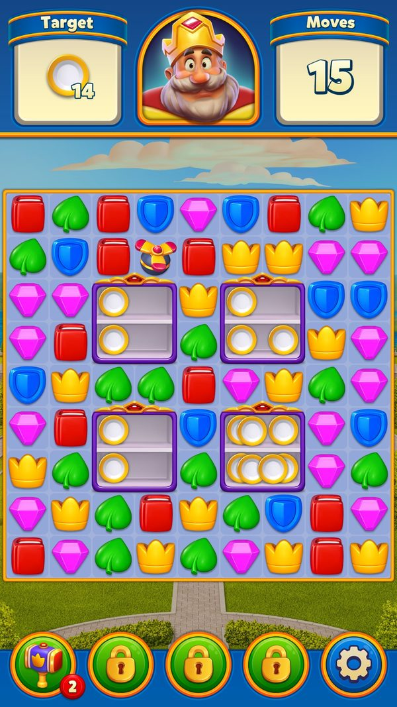
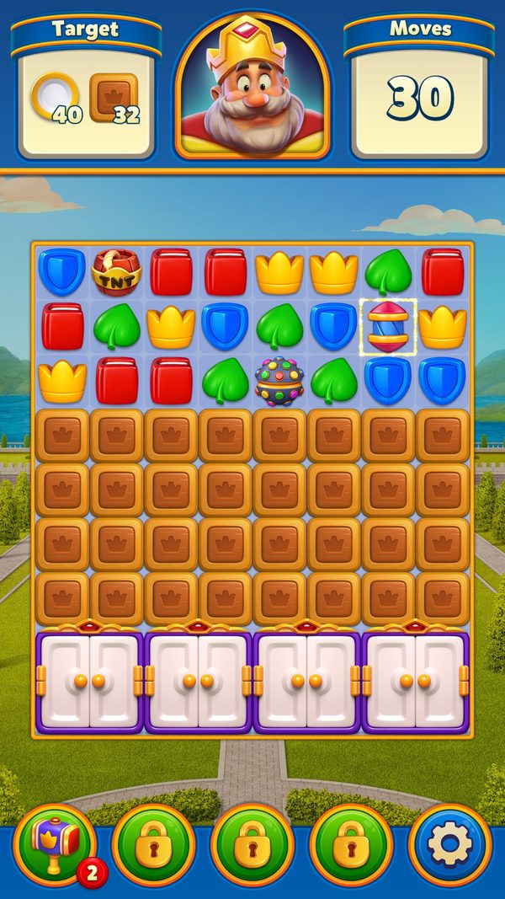

Vật cản nhóm 1 (Obstacles 1)
46 vật cản và mục tiêu bàn cờ từ Box tới Ceramic, quyết định cách người chơi phá lớp trong 3.600 level đầu.
Mô tả
- Obstacles nhóm 1 là tập 46 vật cản và mục tiêu bàn cờ có GoalType từ 11 (Box) đến 56 (Ceramic), phủ gần như toàn bộ 3.600 level đầu của Royal Match.
- Mỗi ô bàn cờ có ba tầng: lớp phủ trên (cỏ, mật, xích, mái, bản đồ, gốm), item chính chiếm chỗ viên màu, và lớp nền bên dưới (thạch, đất).
- Ba thuộc tính quyết định lối chơi của từng vật cản: có bị phá khi match sát bên hay không, có rơi theo trọng lực không, và có kéo đổi chỗ được không.
- Người chơi phá vật cản bằng match sát bên, match ngay trên ô, special item, booster hoặc chạm trực tiếp — tuỳ luật của từng loại.
- Vật cản nhiều lớp phải trúng đủ số lần mới biến mất; số lớp lấy từ TiledId ghi trong file level, ví dụ Box 1–4 lớp, Cupboard 11 lớp, DynamiteBox 8 lớp.
- Một số vật cản là nguồn sinh thêm (Cupboard, Safe, BirdNest, HoneyJar, Bush, FlowerPot, SeedBox, Hat, GummyMaker, UfoLauncher) khiến mục tiêu tăng lên nếu không phá sớm.
- Bird, GiantBird, Frog và gấu trong khối băng không phá trực tiếp được: phải dọn cột bên dưới để chúng rơi xuống hàng cuối mới tính.
- Nhóm vật cản 'cứng' chỉ chết bằng special item hoặc booster gồm OwlStatue, Safe, Bird, GiantBird, Piggy, Frog, MetalCrusher, UfoLauncher, Chain, Roof, TreasureMap, Ceramic.
- Khi lớp cuối bị phá, vật cản biến mất, trừ mục tiêu và giải phóng ô: 1 ô với vật cản thường, 4 ô với vật 2x2, 9 ô với bóng đèn 3x3.
- Phần thưởng trực tiếp từ vật cản gồm 1 special item ngẫu nhiên khi vỡ túi tiền (Pouch) và coin từ Coin item / heo đất (Piggy).
- Obstacles (2) là nhóm chướng ngại vật 'thế hệ 2' của Royal Match, gồm 48 loại mục tiêu từ DuckShooting đến OtterBall, xuất hiện dần từ level 2801 tới 14201.
- Khác nhóm 1, đa số các obstacle này chiếm nhiều ô cùng lúc: một ô 'master' giữ toàn bộ logic, các ô còn lại chỉ là ô giả trỏ về master.
- Hầu hết có nhiều lớp phải phá nhiều lần (từ 1 lớp như Turtle/OtterBall đến 15 lớp như máy bắn vịt DuckShooting).
- Nhiều loại hoạt động theo nhóm (IGroupItem: Magnet, Ivy, ConveyorBelt, Cuckoo, MagicGem, PowerCube, Soil, Cup): ô bị đánh không tự xử lý mà báo về <X>ItemHelper theo GroupId; riêng PowerCube và Tablet mới là loại nổ cả cụm cùng lúc, còn Pin nổ dây chuyền theo nhóm.
- Một số hoạt động theo lượt: sau mỗi nước đi, băng chuyền dịch một ô, đá ma thuật đổi màu, máy quay mở cửa ném item, giá bowling đẩy sang.
- Một số tự sinh ra item khác: máy quay ném special item, lò lửa bắn cầu lửa, radar bắn 3 rocket, máy sô-cô-la ném 3 viên choco.
- Có loại không ăn match kề (CanExplodeWithNearMatch = false) nên chỉ chịu damage từ exploder/special/booster: PowerCube, Sword, ClockTower; Turtle cũng không ăn match kề nhưng mục tiêu là dọn đường cho rùa rơi xuống đáy chứ không phải phá nó.
- Có loại phải thu ở hàng đáy thay vì phá: robot hoàng gia và rùa phải rơi xuống đáy bàn cờ mới tính là thu được.
- Vài loại là vật phủ tĩnh (StaticItemModel) nằm đè lên ô mà không chiếm chỗ viên match: rèm (Blinds) chặn cả touch/visibility/fall/propeller, còn viền băng (IceBorder) và đất nấm (MushroomSoil) chỉ phủ lên ô.
- Mỗi loại đều trừ đúng mục tiêu cùng tên trên panel goal đầu màn; số lớp và số lượng đều đọc từ file level.
Lưu ý
Ảnh chụp màn hình (5)
Chụp trực tiếp từ game đang chạy: 2026-10-06 · LDPlayer 9 · Android 9 · 1080×1920 · Royal Match v38174 · tài khoản test 2712389101 (tên sdasfdfsdf), level 11. Bấm ảnh để phóng to, dùng phím ← → để chuyển ảnh.







Mở khóa & điểm vào
Mỗi obstacle xuất hiện lần đầu ở một mốc level cố định (Box 1, Grass 4, Cupboard 11, Coin 20, Mail 21, Egg 31, Potion 41, Vase 51, OwlStatue 61, Bush 71, Honey 81, Safe 91, Bird 101, ColorBox 121, IceCrusher 141, Piggy 161, Oyster 201, PurpleGrass/FlowerPot 261, DynamiteBox 351, Cup 401, Rock 501, Soil 551, LightBulb 651, Frog 701, MetalCrusher 751, Cookie 801, BowTie 851, Pumpkin 901, Lantern 1101, Bowling 1201, Roof 1301, Gummy 1501, Ufo 1601, Jelly 1701, Soap 1801, WhackAMole 1901, TreasureMap 2001, HoneyJar 2201, Bear 2601, Ceramic 3601). Ceramic có hằng TutorialLevel = 3601.
Mỗi obstacle xuất hiện lần đầu ở một mốc level cố định trong dữ liệu level (appendix/levels-summary.md): DuckShooting 3001, SlotMachine 2801, Magnet 3201, ConveyorBelt 3801, Coil 4201, MushroomSoil 4601, Tablet 4801 (TabletItemModel.TutorialLevel = 4801), Crystal 5001, Ivy 5201, SeaMine 5801, VendingMachineCan 6201, MagicGem 6801, Furnace 7001, ToyBoxVertical 7201, ToyBoxHorizontal 7202, AncientVault 7401, Penguin 7801, Log 8001, Pin 8201, Monkey 8401, Laser 8801, IceBorder 9001, PowerCube 9201, PotionTube 9401, Cuckoo 9601, Sapphire 10001 (SapphireItemHelper.UnlockLevel = 10001), Choco 10401, BowlingRack 10601, Bot 10801, PropellerMachine 11001, Sword 11201, BoomerangBox 11401, Squirrel 11801, Radar 12001, ClockTower 12201, MagicLantern 12401, Pair 12601, BoxingGlove 13001, Lava 13201, ColorMixer 14001, OtterBall 14201. Không có GoalType = 57 (giá trị bị bỏ trống trong enum GoalType).
Điểm vào:
- File level .bytes: FTiledGrid.Items chứa TiledId của item, FTiledCell chứa các lớp static (grass, honey, jelly, chain, roof, treasuremap, ceramic…)
- CellGridManager.CreateItems / CreateStaticItems khi bắt đầu level
- Generator sinh thêm trong ván (Cupboard/Safe/BirdNest/SeedBox/Hat/GummyMaker…)
- File level FlatBuffers: FTiledGrid.Items (TiledId của ô) + các vector nhóm (MagnetGroups, Coils, TabletItemGroups...)
- ItemModelFactory tạo model theo TiledId khi CellGridManager dựng lưới
- LevelContext.Get<XItemHelper>() theo LevelContextId
Cách hoạt động
- Trình đọc level nạp file .bytes: FTiledGrid.Items chứa TiledId của item chính, FTiledCell chứa các lớp static (grass, honey, jelly, chain, roof, treasuremap, ceramic…).
- ItemCreator.GetSettingsForTileId(tiledId) dựng ItemSettings: itemType = TiledToTypeConverter.AsItemType(tiledId), layerCount = TiledToTypeConverter.AsLayerCount(tiledId), goalType = ItemExtensions.ToGoalType(itemType).
- ItemModelFactory.Create(settings) tạo model tương ứng; CellGridManager.CreateItems / CreateStaticItems đặt toàn bộ vật cản lên bàn khi bắt đầu level.
- Mỗi ô được dựng thành 3 tầng: belowItems (nền, ví dụ Jelly/MushroomSoil/WaterSoil), CurrentItem (item chính), aboveItems (lớp phủ) — (StaticItemMediator, CellMediator).
- Người chơi tạo match; MatchManager.ExplodeMatchGroup nổ nhóm rồi gọi DestroyTouchingItems cho các ô kề với ExplodeData mang Trigger.NearMatch (5).
- Vật cản có CanExplodeWithNearMatch() == true nhận sát thương từ match kề; loại có cờ false bị bỏ qua hoàn toàn và chỉ chết bởi special item/booster (ItemModel.CanExplodeWithNearMatch).
- Khi một vụ nổ chạm ô, hệ thống bóc theo thứ tự: lớp phủ TRÊN CÙNG trước (ExplodeTopMostAboveItem), rồi item chính (CellModel.ExplodeCurrentItem), cuối cùng lớp nền (ExplodeTopMostBelowItem).
- ItemModel.Explode → TryExplode trừ 1 lớp mỗi lần; combo TNT+Rocket (SetTntRocketComboExploders) hoặc CanReceiveMultipleHits (Cupboard) có thể trừ nhiều lớp trong một lần.
- Luật màu và luật trạng thái được kiểm ở bước này: Potion/ColorBox/DynamiteBox/LightBulb chỉ nhận đúng màu (RemoveMatchItemType, ChangeColor), BowTie chỉ khi bật, Bowling chỉ khi cửa mở, Rock chỉ khi layer == 1, Ceramic chỉ khi layer < 2.
- Generator sinh thêm mục tiêu trong ván: BirdNest ném tối đa 3 chim (ThrowCount = 3), GummyMaker ném 2 kẹo/lượt tối đa 16 kẹo (MaxItems = 16), SeedBox/Hat MaxLayer = 3 ném 1 vật mỗi lượt, Cupboard/Bowling mở từng cửa (TryExplodingDoor).
- Nguồn lan làm goal TĂNG: Bush ExpandRadius = 2, FlowerPot = 1, HoneyJar = 1 trải cỏ/mật ra ô quanh (CreateGrasses / CreateHoneyForCell) rồi gọi GoalManager.IncreaseGoal; WhackAMole chui lại cũng tăng goal (CloseOneState).
- Vật cản thu ở đáy (Bird, GiantBird, Frog, IceCube/Bear) phải rơi tới hàng cuối: WillFallToBottom / IsLayerValidForCollect → TryCollect → CollectAsGoal (ItemModel.IsBottomCollect).
- Vật cản 'bay lên UI' (Mail, Cookie, Ufo, ngọc trai, ngọc, kẹo, vịt) gọi GoalManager.FlyingToBeCollected rồi DecreaseGoalUi khi chạm icon mục tiêu (MailBoxCollectHelper.Collect, CookieJarCollectHelper.Collect, UfoCollectHelper.Collect).
- Layer về 0 → item biến mất, CollectAsGoal trừ mục tiêu và giải phóng ô: 1 ô với vật cản thường, 4 ô với 2x2, 9 ô với LightBulb (ItemExtensions.CellsFreedAfterExplode).
- Kết thúc mục tiêu còn phụ thuộc điều kiện phụ: goal Honey chờ hết HoneyJar (AddToPrerequisite), Grass/PurpleGrass chờ hết thao tác lan, còn goal Coin không bao giờ thoả (CoinGoalCondition.IsSatisfied) nên ván coin chạy tới hết nước.
- Người chơi vào một level có obstacle nhóm 2 (sớm nhất là level 2801 với SlotMachine); toàn bộ cấu hình nằm trong file level FlatBuffers.
- LevelParser.Parse đọc FTiledGrid.Items để lấy TiledId của từng ô, cùng các vector nhóm riêng (MagnetGroups, Coils, TabletItemGroups, PinGroups, PotionTubeGroups, Pairs...) (LevelParser.Parse).
- TiledToTypeConverter.AsItemType / AsStaticItemType quyết định ô đó tạo ItemModel (chiếm chỗ viên match) hay StaticItemModel (phủ lên ô như Blinds, IceBorder, MushroomSoil).
- TiledToTypeConverter.AsLayerCount(TiledId) trả số lớp khởi tạo, từ 1 lớp (Turtle 387, OtterBall 395/396) đến 15 lớp (DuckShootingBL 201) (TiledToTypeConverter.AsLayerCount).
- ItemModelFactory dựng model khi CellGridManager tạo lưới; item nhiều ô đặt model master ở ô góc dưới-trái, các ô còn lại là FakeItemModel trỏ về master (FindMaster/SetBigMaster).
- Mỗi obstacle được đăng ký thành một unit trong LevelContext theo LevelContextId (ví dụ MagnetItemHelper = 55, ColorMixerItemHelper = 107), nên logic nhóm nằm ở <X>ItemHelper / <X>ItemManager.
- Người chơi match hoặc dùng special item chạm vào ô của obstacle; model kiểm tra CanExplodeWithNearMatch để biết có nhận damage từ match kề hay chỉ nhận từ exploder.
- ItemModel.TryExplode(ExplodeData) trừ một lớp; loại chịu nhiều damage một lần khai báo IHandleMultipleHitsFromTntRocketCombo hoặc CanReceiveMultipleHits (Laser, BoomerangBox, Squirrel, VendingMachine).
- Obstacle theo nhóm (IGroupItem) không tự xử lý mà báo về helper theo GroupId: helper tính tổng lớp còn lại (GetTotalRemainingExplodeCount), quyết định thứ tự nổ, điểm và animation.
- Sau mỗi nước đi, các obstacle theo lượt chạy OnMoveCompleted: băng chuyền dịch 1 ô (MoveConveyorBelts), đá đổi màu (PrepareForColorChange), máy quay mở cửa và ném 3 special item (PrepareForSlotMachine), giá bowling đẩy 1 nấc (ShiftGroup).
- Máy sinh item chọn ô đích rồi ném: Radar bắn 3 rocket (RocketCount = 3), Furnace bắn cầu lửa nổ vùng 3x3 (FireballExplodeRadius = 1), ChocoMaker ném 3 viên (ThrowCount = 3), Bathtub ném 3 và ToyBoat ném 4 bóng.
- Item nạp (CoilCollect, LogCollect, MagicCube, PaintBucket) khi bị phá sẽ bay về manager đang là mục tiêu và gọi DecrementTarget, giảm dần leftTarget lấy từ FCurtainData.target.
- Khi target về 0, máy kích hoạt hiệu ứng lớn: cuộn điện phóng tia sét tách tối đa 3 nhánh, khúc gỗ lăn qua bàn (RollLogItem), máy trộn sơn một cụm 3–5 viên cùng màu (TryFindPrimaryGroup).
- Khi obstacle hết lớp: FinalExplodeCompleted chạy animation, đôi khi đóng băng ô trong lúc chạy (CandyCane freeze ô bên dưới 0.75s, Tablet 0.6s lúc thu, Radar 0.3s ở ô mục tiêu của rocket, OtterBall FinalizeExplode 0.15s) rồi giải phóng ô (WillCellBeFreed).
- GoalManager nhận CollectAsGoal / CollectCompleted để trừ mục tiêu trên panel goal đầu màn (TopUi); hết mục tiêu thì level hoàn thành.
Luồng chi tiết theo code
ItemCreator.GetSettingsForTileId(tiledId) dựng ItemSettings: itemType = TiledToTypeConverter.AsItemType(tiledId), layerCount = TiledToTypeConverter.AsLayerCount(tiledId), goalType = ItemExtensions.ToGoalType(itemType). ItemModelFactory.Create(settings) tạo model tương ứng. Mỗi ô (CellModel) có 3 tầng: StaticItemMediator.belowItems (nền, ví dụ Jelly/Soil), CellMediator.CurrentItem (item chính, chiếm chỗ viên màu) và StaticItemMediator.aboveItems (lớp phủ, ví dụ Grass/Honey/Chain/Roof/Ceramic/TreasureMap). Khi có ExplodeData tới ô: CellModel.ExplodeCurrentItem xử lý item chính, StaticItemMediator.ExplodeTopMostAboveItem phá lớp trên cùng, ExplodeTopMostBelowItem phá lớp dưới. ItemModel.Explode → TryExplode giảm layer 1 đơn vị; layer về 0 thì item biến mất và CollectAsGoal giảm goal. Vật cản chịu 'match kề' (CanExplodeWithNearMatch = true) sẽ bị MatchManager.DestroyTouchingItems phá khi có match nổ sát bên (Trigger.NearMatch = 5); vật cản còn lại chỉ chết bởi special item/booster.
LevelParser.Parse đọc FTiledGrid.Items → mỗi ô có một TiledId. TiledToTypeConverter.AsItemType/AsStaticItemType quyết định tạo ItemModel hay StaticItemModel; AsLayerCount(TiledId) cho số lớp (hp) khởi tạo. Item chiếm nhiều ô có một model 'master' (MultipleCellItemModel/MultipleItemModel2X2/2X1/1X2) đặt ở ô góc dưới-trái và các FakeItemModel ở ô còn lại (FindMaster/SetBigMaster). Khi có match/exploder chạm ô, ItemModel.TryExplode(ExplodeData) giảm layer; layer về 0 thì FinalExplodeCompleted rồi giải phóng ô (WillCellBeFreed). Item theo nhóm (IGroupItem: Magnet, Ivy, ConveyorBelt, Cuckoo, MagicGem, PowerCube, Soil, Cup) không tự xử lý mà báo cho <X>ItemHelper theo GroupId; helper quyết định thứ tự nổ, điểm và animation. Item hoạt động theo lượt đăng ký MoveManager (OnMoveCompleted): ConveyorBelt dịch băng chuyền, MagicGem đổi màu, SlotMachine mở cửa và ném special item, Magnet dịch đầu nam châm, BowlingRack đẩy giá. Cuối cùng GoalManager nhận CollectAsGoal/CollectCompleted để trừ mục tiêu.
Phần thưởng
PHẦN THƯỞNG TỪ VẬT CẢN
| Nguồn | Điều kiện | Phần thưởng |
|---|---|---|
| Pouch (túi tiền) | Phá vỡ túi (TiledId.Pouch = 151) | 1 special item ngẫu nhiên (nội dung theo FTiledLevel.PouchConfig) |
| Coin (đồng xu) | Match sát bên, special item, tap hoặc xu rơi xuống đáy | C (số lượng tuỳ level) |
| Coin cuối ván | Đổi nước đi còn dư thành xu (RemainingMovesCoinCollectAnimation) | C (số lượng tuỳ số nước dư) |
| Piggy (heo đất) | Phá bằng special item / booster | C (heo vỡ nhả coin) |
MỐC XUẤT HIỆN CỦA TỪNG VẬT CẢN
| Vật cản | Level xuất hiện đầu tiên | Ghi chú |
|---|---|---|
| Box | Level 1 | Vật cản đầu tiên của game |
| Grass | Level 4 | Lớp phủ trên ô |
| Cupboard | Level 11 | 2x2 11 lớp |
| Coin | Level 20 | 162 level coin |
| Level 21 | Hòm thư cố định | |
| Egg | Level 31 | 1 lớp rơi/kéo được |
| Potion | Level 41 | 2x2 cần đúng màu |
| Vase | Level 51 | 2 lớp rơi/kéo được |
| OwlStatue | Level 61 | Obstacle đầu tiên dạy luật 'cần special item' |
| Bush | Level 71 | Nguồn cỏ bán kính 2 |
| Honey | Level 81 | Lớp phủ khoá ô |
| Safe | Level 91 | 2x2 5 lớp chỉ special |
| Bird | Level 101 | Thu ở đáy |
| ColorBox | Level 121 | Chỉ đúng màu |
| IceCrusher | Level 141 | Khối dài nhiều ô |
| Piggy | Level 161 | Chỉ special / tap |
| Oyster | Level 201 | 3 lớp nhả ngọc trai |
| PurpleGrass / FlowerPot | Level 261 | Cỏ tím và nguồn cỏ tím |
| DynamiteBox | Level 351 | 2x2 8 lớp nổ cả vùng |
| Cup | Level 401 | Nhóm theo kệ (CupShelfId) |
| Rock | Level 501 | 2 lớp lớp ngoài cần special |
| Soil | Level 551 | 5 lớp nhóm SoilGroupId |
| LightBulb | Level 651 | 3x3 đổi màu |
| Frog | Level 701 | Thu ở đáy ưu tiên cao nhất |
| MetalCrusher | Level 751 | Khối dài chỉ special |
| Cookie | Level 801 | Hũ bánh nhả bánh |
| BowTie | Level 851 | Bật/tắt theo lượt |
| Pumpkin | Level 901 | LayerCount = 2 |
| Lantern | Level 1101 | Nổ dây chuyền theo lượt |
| Bowling | Level 1201 | 2x2 chỉ khi cửa mở |
| Roof | Level 1301 | Lớp phủ nối liền chỉ special |
| Gummy | Level 1501 | Máy ném 2 kẹo/lượt |
| Ufo | Level 1601 | Bệ phóng cố định |
| Jelly | Level 1701 | Lớp nền lan ra |
| Soap | Level 1801 | Thu vịt lên UI |
| WhackAMole | Level 1901 | 2x2 chuột chui lại |
| TreasureMap | Level 2001 | Mở tuần tự theo đường |
| HoneyJar | Level 2201 | Nguồn mật prerequisite goal Honey |
| Bear | Level 2601 | Gấu trong khối băng thu ở đáy |
| Ceramic | Level 3601 | TutorialLevel = 3601 chỉ 49 level dùng gốm |
BẢNG VẬT CẢN: SỐ LỚP, SỐ Ô VÀ CÁCH PHÁ
| Vật cản | Số lớp (TiledId) | Số ô | Match kề phá được? | Rơi / Kéo và ghi chú |
|---|---|---|---|---|
| Box | 1–4 lớp (Box1 21→1, Box2 22→2, Box3 23→3, Box4 24→4) | 1 | Có | Không rơi / không kéo |
| Vase | 2 lớp (Vase 25) | 1 | Có | Rơi và kéo được tap được |
| Grass (lớp phủ) | 1–2 lớp (Grass1 31→1, Grass2 32→2) | 1 (phủ trên) | Có | Không chặn chạm/rơi Bush/SeedBox nạp lại lớp |
| Honey (lớp phủ) | 1 lớp (Honey1 33); DarkHoney 253 = 2 lớp | 1 (phủ trên) | Có | DoesBlockTouch DoesBlockVisibility = true |
| Cupboard | 11 lớp (CupboardBL 51) | 4 (2x2) | Có | Không rơi / không kéo CanReceiveMultipleHits = true |
| Egg | 1 lớp (Egg 26) | 1 | Có | Rơi và kéo được tap được |
| OwlStatue | 1–3 lớp (27→1, 28→2, 29→3) | 1 | KHÔNG — chỉ special | Không rơi / không kéo |
| MailBox (Mail) | Cố định trên bàn (MailBox 34) | 1 | Có | IsPermanentOnBoard = true mỗi cú trúng nhả 1 thư |
| Potion | 4 lớp (PotionBL 53; bản màu 71/73/75/77/79) | 4 (2x2) | Chỉ ĐÚNG MÀU | Bộ màu theo FTiledLevel.PotionColors match sai màu chỉ gọi TryFakeExplode |
| Safe | 5 lớp (SafeBL 57) | 4 (2x2) | KHÔNG — chỉ special | Không rơi / không kéo |
| Coin | 1 lớp (Coin 60) | 1 | Có | Rơi và kéo được goal không bao giờ hoàn thành |
| Bush | 5 lớp (BushBL 55) | 4 (2x2) | Có | Không rơi / không kéo ExpandRadius = 2 rải cỏ |
| Bird | 1 lớp (Bird 35) | 1 | KHÔNG | Rơi và kéo được IsBottomCollect = true |
| GiantBird | 1 lớp (GiantBirdBL 99) | 4 (2x2) | KHÔNG | Rơi được KHÔNG kéo thu ở đáy qua 2 cột |
| ColorBox | 1–3 lớp theo màu (Blue 81/91/101, Green 82/92/102, Red 83/93/103, Yellow 84/94/104, Pink 85/95/105) | 1 | Chỉ ĐÚNG MÀU | Không rơi / không kéo số trên hộp = số lớp còn lại |
| IceCrusher | Khối dài (36/37/38/39 theo hướng + base 49) | Nhiều ô theo hướng | Có | Không rơi / không kéo phá từng đốt (ExplodeLayer) |
| Piggy | Piggy 59, Piggy2 167, Piggy3 168; GiantPiggyBL 241 = 3 lớp | 1 | KHÔNG — chỉ special | Rơi và kéo được tap được |
| Oyster | 3 lớp (Oyster 86) | 1 | Có | Rơi và kéo được nấc cuối nhả ngọc trai |
| FlowerPot | 2 lớp (FlowerPot 88) | 1 | Có | Rơi và kéo được ExpandRadius = 1 rải cỏ tím |
| PurpleGrass (lớp phủ) | PurpleGrass 19 | 1 (phủ trên) | Có | Cùng cơ chế Grass nguồn là FlowerPot/Turtle |
| DynamiteBox | 8 lớp (DynamiteBoxBL 106) | 4 (2x2) | Chỉ ĐÚNG MÀU | Nổ cả vùng khi đủ màu KeyDuration = 0.032s |
| Cup | 1 lớp mỗi cốc (CupA 115, CupB 116, CupC 117) | 1 mỗi cốc, nhóm theo CupShelfId | Có | Không rơi / không kéo đánh 1 cốc rung cả kệ |
| BirdNest | TiledId BirdBoxTL 121 / TR 122 / BL 131 / BR 132 | 4 (2x2) | Có | Không rơi / không kéo ThrowCount = 3 ToGoalType = None |
| Rock | 2 lớp (Rock 98) | 1 | Chỉ khi layer == 1 | Rơi và kéo được tap được nhả ngọc |
| Soil | 5 lớp (SoilA 108, SoilB 109, SoilC 110) | 1 mỗi ô, nhóm SoilGroupId | Có | Không rơi / không kéo propeller có thể redirect trong nhóm |
| LightBulb | TiledId LightBulbTL 118 … BR 140 (ô màu 126/127/136/137/138) | 9 (3x3) | Chỉ ĐÚNG MÀU, đổi màu sau mỗi lần | Không rơi / không kéo thứ tự màu theo FTiledLevel.LightBulbColorOrder |
| Frog | 1 lớp (Frog 125) | 1 | KHÔNG | Rơi và kéo được IsBottomCollect = true FrogSwapDuration = 0.25s |
| MetalCrusher | Khối dài (Base 141, Left 142, Up 143, Down 144, Right 145) | Nhiều ô theo hướng | KHÔNG — chỉ special | Không rơi / không kéo cùng cấu trúc IceCrusher nhưng cứng hơn |
| Cookie (CookieJar) | CookieJar 135 | 1 | Có | Không rơi / không kéo nhả bánh mỗi cú trúng freezeDuration = 0.15s |
| BowTie | BowTieOn 146 / BowTieOff 147 | 1 | Chỉ khi đang BẬT | Rơi và kéo được đảo trạng thái sau mỗi nước đi |
| Pumpkin | LayerCount = 2 (hằng trong class) | 1 | Có | Rơi và kéo được tap được |
| Chain (lớp phủ) | 1–2 lớp (Chain1 149→1, Chain2 150→2) | 1 (phủ trên) | KHÔNG — chỉ special | DoesBlockTouch DoesBlockFall = true |
| Pouch | Pouch 151 | 1 | Có | Rơi và kéo được nhả 1 special item ExplodeScore = 26 |
| Lantern | Lantern 152 | 1 | Có | Rơi và kéo được nổ dây chuyền theo lượt |
| Bowling | TiledId BowlingTL 161 / TR 162 / BL 171 / BR 172 | 4 (2x2) | Chỉ khi cửa đang mở (IsOpening) | Không rơi / không kéo |
| Roof (lớp phủ) | Roof 153 | 1 (phủ trên) | KHÔNG — chỉ special | DoesBlockTouch DoesBlockVisibility = true nối liền thành dải |
| Gummy (GummyMaker) | GummyMaker TiledId 163/164/173/174; GummyQuarterItemModel.LayerCount = 1 | 4 (2x2) cho máy | Có | Máy 2x2 sinh kẹo ThrowCount = 2 MaxItems = 16 |
| Ufo (UfoLauncher) | Ufo 155 | 1 | KHÔNG — chỉ special | Bệ phóng cố định mỗi lần kích hoạt thu 1 mục tiêu |
| Jelly (lớp nền) | Jelly 156 | 1 (nền ô) | Có (match trên ô) | Lan sang ô kề khi nổ trong bán kính (canSpreadJelly) |
| Soap | Soap 157 | 1 | Có | Rơi và kéo được tap được thu vịt lên UI |
| WhackAMole | TiledId WhackAMoleTL 165 / TR 166 / BL 175 / BR 176 | 4 (2x2) | Có | Không rơi / không kéo CloseOneState làm goal TĂNG |
| MapScrollCollect | MapScrollCollect 159 | 1 | Có | Rơi và kéo được nộp vào TreasureMapHelper |
| TreasureMap (lớp phủ) | TreasureMap 158 | 1 (phủ trên) | KHÔNG | Chặn chạm/rơi/nhìn/propeller ExplodeScore = 0 mở tuần tự theo đường |
| HoneyJar | HoneyJar 160 | 1 | Có | Rơi và kéo được ExpandRadius = 1 prerequisite của goal Honey |
| Bear (IceCube) | TiledId IceCubeTL 169 / TR 170 / BL 179 / BR 180 | 4 (2x2) | Chỉ khi layer > 0 | Rơi được KHÔNG kéo IsBottomCollect = true IsCrossFallBlocking = true |
| Ceramic (lớp phủ) | 1–2 lớp (Ceramic1 187→1, Ceramic2 188→2) | 1 (phủ trên) | KHÔNG; match TRÊN ô chỉ khi layer < 2 | TutorialLevel = 3601 ExplodeScore = 456.976 |
VẬT CẢN GENERATOR (SINH THÊM MỤC TIÊU TRONG VÁN)
| Nguồn | Nhịp sinh / bán kính | Hệ quả |
|---|---|---|
| BirdNest (tổ chim) | ThrowCount = 3 chim mỗi lần kích hoạt (FindCells) | Thêm Bird phải rơi xuống đáy |
| GummyMaker (máy kẹo) | ThrowCount = 2 kẹo mỗi lượt, MaxItems = 16 kẹo trên bàn | Phải thu nhanh hơn tốc độ sinh hoặc phá máy |
| SeedBox / Hat | MaxLayer = 3, mỗi lượt Throw() 1 vật; IsPermanentOnBoard = true | Liên tục ném cỏ / mũ vào bàn |
| Bush (bụi cây) | ExpandRadius = 2, rải cỏ mỗi lần bị đánh (5 lớp) | Goal Grass TĂNG (GoalManager.IncreaseGoal) |
| FlowerPot (chậu hoa) | ExpandRadius = 1, rải cỏ tím (2 lớp) | Goal PurpleGrass TĂNG |
| HoneyJar (hũ mật) | ExpandRadius = 1, trải mật ra ô kề | Goal Honey TĂNG và bị khoá bởi prerequisite |
| Cupboard / Bowling | Mỗi cú trúng mở 1 cánh cửa (TryExplodingDoor) | Nhả item ra ngoài giảm dần số lớp |
| MailBox / CookieJar / UfoLauncher | Mỗi lần kích hoạt nhả 1 thư / 1 bánh / 1 chuyến đĩa bay | Vật cản cố định ngừng khi đủ goal |
| WhackAMole | CloseOneState sau mỗi nước đi (PrepareForWhackAMole) | Chuột chui lại goal TĂNG |
ĐIỂM ƯU TIÊN VẬT CẢN THU Ở ĐÁY (BOTTOM COLLECT)
| Vật cản | Hằng điểm | Giá trị |
|---|---|---|
| Frog (ếch) | FrogBottomScore | 3.838.548 (cao nhất) |
| Bear trong IceCube | PolarBearCollectScore | 548.370 |
| Bird / RoyalBot / Turtle | BirdBottomScore | 274.182 |
ĐIỂM NỔ (EXPLODESCORE) THEO VẬT CẢN
| Vật cản | ExplodeScore | Ý nghĩa thiết kế |
|---|---|---|
| Obstacle chuẩn (Box, Honey, DarkHoney, Ceramic…) | 456.976 | Bậc cao nhất — chong chóng ưu tiên nhắm |
| Grass / PurpleGrass | 365.580 | Thấp hơn obstacle thường để propeller không quá ưu tiên cỏ |
| Pouch (túi tiền) | 26 | Bậc thấp có chủ đích — túi là phần thưởng không phải chướng ngại |
| TreasureMap | 0 | Scorer không nhắm bừa phải mở tuần tự theo đường |
SỐ Ô ĐƯỢC GIẢI PHÓNG KHI PHÁ (CELLSFREEDAFTEREXPLODE)
| Nhóm vật cản | Số ô giải phóng | Nguồn |
|---|---|---|
| Cupboard, Potion, Bush, Safe, DynamiteBox, Bowling, GummyMaker, WhackAMole, BirdNest, GiantBird, IceCube | 4 ô (2x2) | ItemExtensions.CellsFreedAfterExplode |
| LightBulb, DuckShooting, SlotMachine | 9 ô (3x3) | ItemExtensions.CellsFreedAfterExplode |
| Đa số vật cản còn lại (Box, Vase, Egg, Coin…) | 1 ô | ItemExtensions.CellsFreedAfterExplode |
ÁNH XẠ VẬT CẢN → MỤC TIÊU (ITEMEXTENSIONS.TOGOALTYPE)
| Vật cản (ItemType / StaticItemType) | Mục tiêu (GoalType) | Mã số |
|---|---|---|
| Box | Box | 11 |
| Vase | Vase | 12 |
| Grass | Grass | 13 |
| Honey / DarkHoney | Honey | — |
| Cupboard | Cupboard | — |
| Egg | Egg | 16 |
| OwlStatue | OwlStatue | — |
| MailBox | 18 | |
| Potion | Potion | 19 |
| Safe | Safe | 20 |
| Coin | Coin | 21 |
| Bush | Bush | — |
| Bird | Bird | 23 |
| GiantBird | GiantBird | 24 |
| ColorBox | ColorBox | 25 |
| IceCrusher | IceCrusher | 26 |
| Piggy / HelmetPiggy / GiantPiggy | Piggy | 27 |
| Oyster | Oyster | 28 |
| FlowerPot | FlowerPot | — |
| PurpleGrass | PurpleGrass | 30 |
| DynamiteBox | DynamiteBox | 31 |
| Cup | Cup | 32 |
| BirdNest | None — tổ chim không phải mục tiêu trực tiếp | — |
| Rock | Rock | 34 |
| Soil | Soil | 35 |
| LightBulb | LightBulb | 36 |
| Frog | Frog | 37 |
| MetalCrusher | MetalCrusher | 38 |
| CookieJar | Cookie | 39 |
| BowTie | BowTie | 40 |
| Pumpkin | Pumpkin | 41 |
| Chain | Chain | 42 |
| Pouch | Pouch | 43 |
| Lantern | Lantern | 44 |
| Bowling | Bowling | 45 |
| Roof | Roof | 46 |
| GummyMaker / GummyBarHorizontal / GummyBarVertical / Gummy | Gummy | 47 |
| Ufo (UfoLauncher) | Ufo | 48 |
| Jelly | Jelly | 49 |
| Soap | Soap | 50 |
| WhackAMole | WhackAMole | 51 |
| MapScrollCollect | MapScrollCollect | 52 |
| TreasureMap | TreasureMap | 53 |
| HoneyJar | HoneyJar | 54 |
| IceCube | Bear | 55 |
| Ceramic | Ceramic | 56 |
BẢNG OBSTACLE THẾ HỆ 2 THEO LEVEL XUẤT HIỆN
| Obstacle | Level xuất hiện đầu tiên | Điểm nhấn cơ chế |
|---|---|---|
| SlotMachine (goal 59) | Level 2801 | Máy 2x3 quay và ném special item |
| DuckShooting (goal 58) | Level 3001 | Máy 3x3 với 15 con vịt |
| Magnet (goal 60) | Level 3201 | Đường ray 2 đầu đầu tiến vào giữa |
| ConveyorBelt (goal 62) | Level 3801 | Băng chuyền dịch 1 ô mỗi lượt |
| Coil (goal 64) | Level 4201 | Cuộn điện 3x2 thu CoilCollect |
| MushroomSoil (goal 66) | Level 4601 | Đất nấm liên tục lan nấm |
| Tablet (goal 67) | Level 4801 | Cụm bảng đá nổ đồng loạt (TutorialLevel = 4801) |
| Crystal (goal 68) | Level 5001 | Pha lê 2x2 chiếu tia đổi màu bàn cờ |
| Ivy (goal 69) | Level 5201 | Dây thường xuân phá theo thứ tự |
| SeaMine (goal 71) | Level 5801 | Thủy lôi 5 lớp nổ vùng 3x3 |
| VendingMachineCan (goal 72) | Level 6201 | Máy bán nước nhả 8 lon |
| MagicGem (goal 73) | Level 6801 | Đá đổi màu sau mỗi nước đi |
| Furnace (goal 74) | Level 7001 | Lò 2x2 bắn cầu lửa |
| ToyBoxVertical (goal 76) | Level 7201 | Hộp đồ chơi dọc 1x2 |
| ToyBoxHorizontal (goal 75) | Level 7202 | Hộp đồ chơi ngang 2x1 |
| AncientVault (goal 77) | Level 7401 | Hầm 2x2 thu bụi từ MagicCube |
| Penguin (goal 78) | Level 7801 | Chim cánh cụt 3 lớp thu về panel goal |
| Log (goal 79) | Level 8001 | Khúc gỗ lăn qua bàn khi đủ LogCollect |
| Pin (goal 81) | Level 8201 | Ghim nổ dây chuyền theo nhóm |
| Monkey (goal 82) | Level 8401 | Khỉ bắt capsule (rơi và tráo được) |
| Laser (goal 83) | Level 8801 | Tháp laser 5 lớp quét hàng/cột |
| IceBorder (goal 84) | Level 9001 | Viền băng gắn theo cạnh ô |
| PowerCube (goal 85) | Level 9201 | Nhóm khối chỉ nổ khi đồng lớp |
| PotionTube (goal 86) | Level 9401 | Ống thuốc nhiều ô theo màu |
| Cuckoo (goal 87) | Level 9601 | Đồng hồ cúc cu bật/tắt cửa |
| Sapphire (goal 88) | Level 10001 | Ngọc 3x3 có cửa làm sub-goal nhiều board |
| Choco (goal 89) | Level 10401 | ChocoMaker ném 3 viên sô-cô-la |
| BowlingRack (goal 90) | Level 10601 | Giá bowling đẩy dãy từng nấc |
| Bot (goal 91) | Level 10801 | Robot phải rơi xuống hàng đáy |
| PropellerMachine (goal 92) | Level 11001 | Máy 2x2 sinh propeller |
| Sword (goal 93) | Level 11201 | Kiếm 1x2 chỉ phá bằng special |
| BoomerangBox (goal 94) | Level 11401 | Hộp nhả boomerang guided exploder |
| Squirrel (goal 95) | Level 11801 | Sóc ngang/dọc 2 ô rơi được |
| Radar (goal 96) | Level 12001 | Radar 2x2 bắn 3 rocket |
| ClockTower (goal 97) | Level 12201 | Tháp đồng hồ 2x3 6 lớp |
| MagicLantern (goal 98) | Level 12401 | Đèn thần truyền lửa sang đèn kế |
| Pair (goal 99) | Level 12601 | Lật cặp bài giống nhau |
| BoxingGlove (goal 100) | Level 13001 | Găng đấm theo 4 hướng |
| Lava (goal 101) | Level 13201 | Dung nham lan sang ô vừa nổ |
| ColorMixer (goal 103) | Level 14001 | Máy trộn sơn cụm 3–5 viên |
| OtterBall (goal 105) | Level 14201 | Rái cá bắt bóng khi mở miệng |
| CandyCane (goal 61) | (GDD không ghi mốc level) | Kẹo gậy nổ từ hai đầu vào tâm |
| Fireworks (goal 63) | (GDD không ghi mốc level; Limits GoalType 63 – 11 level main) | Hộp pháo bắn rocket dẫn hướng |
| CoilCollect (goal 65) | Từ level 4201 (464 level main) | Viên điện nạp cho cuộn Coil |
| Blinds (goal 70) | (GDD không ghi mốc level) | Rèm cuốn che nhiều hàng |
| LogCollect (goal 80) | Từ level 8001 (289 level main) | Token nạp cho khúc gỗ |
| Turtle (goal 102) | (GDD không ghi mốc level) | Rùa 1 lớp phải rơi xuống đáy |
| PaintBucket (goal 104) | Từ level 14001 (42 level main) | Xô sơn nạp cho ColorMixer |
BẢNG SỐ LỚP, KÍCH THƯỚC VÀ TƯƠNG TÁC
| Obstacle (GoalType) | Số lớp | Kích thước ô | Rơi / Tráo / Match kề |
|---|---|---|---|
| DuckShooting (58) | 15 lớp | 3x3 | Không rơi không tráo ăn match kề khi isHittable |
| SlotMachine (59) | MaxItemLayer = 4 (lớp 4 là cửa) | 2x3 | Không rơi không tráo chỉ ăn match khi layer != 4 |
| Magnet (60) | Theo nhóm ray | 1 ô mỗi mắt | Không rơi không tráo chỉ đầu MagnetHitEnd ăn match |
| CandyCane (61) | Theo nhóm cánh | 1 ô mỗi mắt | Không rơi không tráo chỉ đầu (206) ăn match |
| ConveyorBelt (62) | 1 lớp mỗi ô băng | Dãy ô | Không rơi không tráo |
| Fireworks (63) | 2 lớp | 1x1 | Rơi được ăn match kề tap được |
| Coil (64) | MaxItemLayer = 6 | 3x2 | Không rơi không tráo |
| CoilCollect (65) | 2 lớp | 1x1 | Rơi được ăn match kề tap được |
| MushroomSoil (66) | Nấm 1 lớp; đất là static item | 1 ô (phủ dưới item) | Nấm không rơi không tráo ăn match kề |
| Tablet (67) | 2 lớp mỗi ô | Cụm nhiều ô (FCellGroupData) | Không rơi không tráo |
| Crystal (68) | (GDD không ghi số lớp) | 2x2 | Không rơi không tráo |
| Ivy (69) | InitialLayer = 4 | 1 ô mỗi mắt | Không rơi không tráo chỉ mắt đúng thứ tự nhận damage |
| Blinds (70) | GetTotalLayer theo số lá | Nhiều hàng, rộng = width | Static item chặn touch/visibility/fall/propeller |
| SeaMine (71) | TotalLayer = 5 | 1x1 | Rơi được ăn match kề tap được |
| VendingMachineCan (72) | 8 lớp (tiled); MaxItemLayer = 4 | 2x3 | Không rơi không tráo ăn match kề khi canBeHit |
| MagicGem (73) | Theo tiled A/B/C | 1x1 | Không rơi không tráo chỉ ăn match cùng màu hiện tại |
| Furnace (74) | 5 lớp (lớp 5 là cửa) | 2x2 | Không rơi không tráo chỉ ăn match khi layer < 5 |
| ToyBoxHorizontal (75) | 4 lớp | 2x1 | Rơi được (cần 2 ô trống) không tráo ăn match kề |
| ToyBoxVertical (76) | 4 lớp | 1x2 | Rơi được (cần 2 ô trống) không tráo ăn match kề |
| AncientVault (77) | MaxItemLayer = 6 | 2x2 | Không rơi không tráo |
| Penguin (78) | MaxItemLayer = 3 | 1x1 | Rơi được ăn match kề tap được |
| Log (79) | (GDD không ghi số lớp; target lấy từ FCurtainData) | Nhiều ô (LogBase 49 + LogLeft/Up/Down/Right 36–39) | GDD không ghi cờ rơi/tráo gỗ đang lăn chặn item rơi (IsBlockedByAnyActiveLog) |
| LogCollect (80) | (GDD không ghi số lớp) | 1x1 | Rơi được ăn match kề tap được |
| Pin (81) | (GDD không ghi số lớp; helper tính GetGroupRemainingExplodeCount) | 1x1 theo nhóm | Không rơi không tráo ăn match kề |
| Monkey (82) – Capsule | 3 lớp | 1x1 | Rơi được VÀ tráo được (hiếm với obstacle) |
| Laser (83) | 5 lớp (ctor mặc định 4) | 1x1 | Rơi được ăn match kề |
| IceBorder (84) | Theo cạnh ô | Cạnh ô (static item) | Ăn match kề chỉ phá theo hướng va chạm hợp lệ |
| PowerCube (85) | 3 lớp | 1x1 theo nhóm | Không rơi không tráo KHÔNG ăn match kề |
| PotionTube (86) | Theo số đoạn ống | Nhiều ô ngang hoặc dọc | Không rơi không tráo chỉ ăn match đúng màu ống |
| Cuckoo (87) | Theo tiled A/B/C | 1x1 theo nhóm kệ | Không rơi không tráo chỉ ăn match khi layer != 0 |
| Sapphire (88) | MaxItemLayer = 4 | 3x3 | Không rơi không tráo chỉ ăn match khi hết cửa |
| Choco (89) | Choco LayerCount = 2; ChocoMaker MaxLayer = 3 | 1x1 | Choco rơi được và ăn match kề |
| BowlingRack (90) | (GDD không ghi số lớp) | Dãy ô (FMagnetGroupData) | Không rơi không tráo |
| Bot (91) | 3 lớp | 1x1 | Rơi được thu ở hàng đáy ăn match kề khi layer > 0 |
| PropellerMachine (92) | 4 lớp | 2x2 | Không rơi không tráo ăn match kề |
| Sword (93) | 4 lớp | 1x2 | Không rơi không tráo KHÔNG ăn match kề |
| BoomerangBox (94) | 3 lớp | 1x1 | Rơi được ăn match kề |
| Squirrel (95) | MaxLayer = 3 | 2x1 hoặc 1x2 | Rơi được ăn match kề |
| Radar (96) | 4 lớp | 2x2 | Không rơi ăn match kề |
| ClockTower (97) | 6 lớp | 2x3 | Không rơi KHÔNG ăn match kề |
| MagicLantern (98) | 2 lớp | 1x2 | Không rơi không tráo chỉ ăn match khi đèn active |
| Pair (99) | 3 lớp (PairBL 32740) | 1 ô hoặc nhiều ô | Không rơi không tráo |
| BoxingGlove (100) | 3 lớp | 1x1 (4 hướng) | Không rơi ăn match kề |
| Lava (101) | 4 lớp | 1x1 | Không rơi ăn match kề |
| Turtle (102) | 1 lớp | 1x1 | Rơi được thu ở đáy KHÔNG ăn match kề |
| ColorMixer (103) | MaxItemLayer = 5 | 2x2 | Không rơi không tráo |
| PaintBucket (104) | 2 lớp | 1x1 | Rơi được ăn match kề |
| OtterBall (105) | 1 lớp | 1x1 | Không rơi chỉ ăn match khi đang mở miệng |
BẢNG MÁY SINH ITEM VÀ SẢN PHẨM
| Máy | Sinh ra | Số lượng mỗi lượt | Ghi chú |
|---|---|---|---|
| SlotMachine (goal 59) | Special item theo SlotSelectionOrder: Propeller(0), Tnt(1), Rocket(2), Lightball(3) | ThrowCount = 3 | FSlotConfig của level (startIndex hasLightball hasRocket hasTnt hasPropeller) giới hạn loại có trong vòng quay |
| Furnace (goal 74) | Cầu lửa | Theo lượt | FireballExplodeRadius = 1 (vùng 3x3) không nhắm vào vùng có special item |
| Fireworks (goal 63) | FireworkRocketModel (guided exploder) | Theo lần nổ | RecycleWaitDelay = 5s rồi thu hồi rocket kẹt |
| Radar (goal 96) | Rocket | RocketCount = 3 | CellFreezeDuration = 0.3s giữ ô mục tiêu không rơi |
| ChocoMaker (goal 89) | Viên Choco (LayerCount = 2) | ThrowCount = 3 | ChocoMaker MaxLayer = 3 đóng máy khi goal sắp xong |
| PropellerMachine (goal 92) | Propeller | Mỗi lớp bị phá (GDD ghi rõ đây là suy ra từ tên/vai trò máy) | Máy 2x2 4 lớp (TiledId 337/338/347/348) |
| BoomerangBox (goal 94) | BoomerangItemModel (guided exploder) | Mỗi lần hộp bị phá | Boomerang bay đi rồi quay lại |
| CandyCane (goal 61) | Jelly bay (flyingJelly) | ThrowCount = 3 | Ném khi cả nhóm nổ |
| Bathtub (bộ OtterBall) | Bóng cho rái cá | ThrowCount = 3 | BathtubItemModel MaxLayer = 3 |
| ToyBoat (bộ OtterBall) | Bóng cho rái cá | ThrowItemCount = 4 | ToyBoatItemHelper |
BẢNG ITEM NẠP (COLLECT) VÀ MÁY ĐÍCH
| Item nạp | Máy đích | Cách khai báo số lượng | Kết quả khi đủ target |
|---|---|---|---|
| CoilCollect (goal 65) – 2 lớp | CoilItemManager (Coil, goal 64) | FLimitData(limit = 65); 464 level main từ 4201 | Cuộn nổ phóng tia sét tách tối đa MaxSplitCount = 3 nhánh |
| LogCollect (goal 80) | LogItemManager (Log, goal 79) | FLimitData(limit = 80); 289 level main từ 8001 | Khúc gỗ lăn qua bàn phá các ô đi qua |
| MagicCube (TiledId 282) | AncientVault (goal 77) | FCurtainData.target của level | Hầm cổ mở cửa (InvokeDoorOpen) |
| PaintBucket (goal 104) – 2 lớp | ColorMixerItemManager (goal 103) | FLimitData(limit = 104); 42 level main từ 14001 | Máy sơn cụm GroupSize = 5 viên tối thiểu MinGroupSize = 3 |
| Capsule (ItemType 83) – 3 lớp | MonkeyView (Monkey, goal 82) | Đặt trực tiếp trên bàn (TiledId 32756) | Khỉ bắt capsule trừ goal Monkey |
| Bóng (OtterBall, goal 105) | OtterItemModel (rái cá) | Bathtub/ToyBoat ném ra | Rái cá bắt bóng khi mở miệng (MaxCollectDelay = 0.15s) |
THANG ĐIỂM ƯU TIÊN CỦA PROPELLER
| Bậc | Hằng số | Giá trị |
|---|---|---|
| Rất thấp | PropellerVeryLowItemScore | 1 |
| Thấp | PropellerLowItemScore | 26 |
| Trung bình | PropellerMediumItemScore | 676 |
| Cao | PropellerHighItemScore | 17576 |
| Rất cao | PropellerVeryHighItemScore | 456976 |
| Hệ số theo lớp | PropellerLayerMultiplier | 26 |
BẢNG DỮ LIỆU NHÓM TRONG FILE LEVEL
| Obstacle | Trường trong file level | Cấu trúc / giới hạn |
|---|---|---|
| Magnet (60) | FTiledLevel.MagnetGroups (slot 25) | FMagnetGroupData → FMagnetPoint{cell isHead directionTiledId} tối đa 20 nhóm/level |
| CandyCane (61) | CandyCaneGroups | FMagnetGroupData (cùng cấu trúc đường đi như Magnet) |
| ConveyorBelt (62) | ConveyorBelts | FMagnetGroupData băng có thể looping |
| Coil (64) | Coils | FCurtainData{id colorId order target cellCount width height minX minY} tối đa MaxItems = 16 cuộn |
| Tablet (67) | TabletItemGroups | FCellGroupData (danh sách ô của cụm) |
| Ivy (69) | IvyItemGroups | FMagnetGroupData IvyHead 230 IvyEnd 240 |
| Blinds (70) | BlindsGroups | FBlindsGroupData{width magnetCells} |
| MagicGem (73) | MagicGem (slot 36) + MagicGemColorOrder (slot 37) | FCellGroupData mảng thứ tự màu chỉ 7 level main dùng MagicGemColorOrder |
| AncientVault (77) | AncientVaults | FCurtainData → AncientVaultCreationData |
| Log (79) | Logs + PropellerIgnoresLog (slot 41) | FCurtainData → LogItemManager cờ propeller bỏ qua gỗ theo level |
| Pin (81) | PinGroups (slot 42) | FCellGroupData tối đa 12 nhóm/level |
| PowerCube (85) | PowerCubeGroups | FCellGroupData |
| PotionTube (86) | PotionTubeGroups (slot 45) | FDirectedPointGroupData → FDirectedPoint{point direction} |
| Cuckoo (87) | CuckooGroups | FCellGroupData |
| Sapphire (88) | Sapphires | FCurtainData → SapphireCreationData → SapphireItemManager |
| BowlingRack (90) | BowlingRacks | FMagnetGroupData Init(groupId isLooping) |
| MagicLantern (98) | MagicLantern | Vector FPoint (toạ độ từng đèn) |
| Pair (99) | Pairs | FPairData{symbol colorId firstMinX firstMinY secondMinX secondMinY} |
| ColorMixer (103) | ColorMixers | FCurtainData → ColorMixerCreationData → ColorMixerItemManager |
| Fireworks / CoilCollect / LogCollect / Turtle / PaintBucket | FTiledLevel.Limits | FLimitData(limit = GoalType 63 / 65 / 80 / 102 / 104) |
Phần thưởng theo code
| Ngữ cảnh | Phần thưởng | Evidence |
|---|---|---|
| Pouch vỡ | 1 special item ngẫu nhiên | PouchItemModel.PlaySpawnSpecialItemAnimation |
| Piggy vỡ / level Coin | coin cộng thẳng cho người chơi | CoinItemModel.CollectAsGoal; PiggyItemModel.TryExplode |
Số liệu chính
| Chỉ số | Giá trị | Nguồn |
|---|---|---|
| Số vật cản trong nhóm | 46 (GoalType 11 Box → 56 Ceramic) | summary; ItemExtensions.ToGoalType |
| Phạm vi level | Khoảng 3.600 level đầu | summary |
| Vật cản đầu tiên | Box từ Level 1 | unlock |
| Vật cản cuối nhóm | Ceramic từ Level 3601 | CeramicItemModel.TutorialLevel |
| Số level dùng Ceramic | 49 level (hiếm nhất trong 14.500 level) | appendix/levels-summary.md |
| Số level Coin | 162 level (từ level 20) | UC-Coin rules |
| Trigger match kề | Trigger.NearMatch = 5 | MatchManager.DestroyTouchingItems |
| Số lớp Box | 1–4 (TiledId 21–24) | TiledToTypeConverter.AsLayerCount |
| Số lớp Cupboard | 11 (TiledId.CupboardBL = 51) | TiledToTypeConverter.AsLayerCount |
| Số lớp DynamiteBox | 8 (TiledId.DynamiteBoxBL = 106) | TiledToTypeConverter.AsLayerCount |
| Số lớp Safe / Bush / Soil | 5 lớp mỗi loại | TiledToTypeConverter.AsLayerCount (57, 55, 108–110) |
| Số lớp Potion | 4 (TiledId.PotionBL = 53) | TiledToTypeConverter.AsLayerCount |
| Số lớp Oyster | 3 (TiledId.Oyster = 86) | TiledToTypeConverter.AsLayerCount |
| Số lớp Pumpkin | LayerCount = 2 (hằng trong class) | PumpkinItemModel.LayerCount |
| Ô chiếm của LightBulb | 9 ô (3x3) | ItemExtensions.CellsFreedAfterExplode |
| Ô chiếm của vật cản 2x2 | 4 ô | ItemExtensions.CellsFreedAfterExplode |
| Bán kính lan của Bush | ExpandRadius = 2 | BushItemModel.ExpandRadius |
| Bán kính lan của FlowerPot / HoneyJar | ExpandRadius = 1 | FlowerPotItemModel.ExpandRadius; HoneyJarItemModel.ExpandRadius |
| Chim ném ra mỗi lần từ BirdNest | ThrowCount = 3 | BirdNestItemHelper.ThrowCount |
| Kẹo ném mỗi lượt / tối đa trên bàn | ThrowCount = 2 / MaxItems = 16 | GummyItemHelper.ThrowCount; GummyItemHelper.MaxItems |
| Số lớp nạp lại của SeedBox / Hat | MaxLayer = 3 | SeedBoxItemModel.MaxLayer |
| Điểm ưu tiên Frog ở đáy | 3.838.548 | BottomCollectScoreManager.FrogBottomScore |
| Điểm ưu tiên gấu (IceCube) | 548.370 | BottomCollectScoreManager.PolarBearCollectScore |
| Điểm ưu tiên Bird / RoyalBot / Turtle | 274.182 | BottomCollectScoreManager.BirdBottomScore |
| ExplodeScore obstacle chuẩn / cỏ / Pouch / TreasureMap | 456.976 / 365.580 / 26 / 0 | ItemExtensions.ExplodeScore (libil2cpp.so @0x462ba3c) |
| Dải GoalType của nhóm 2 | 58 (DuckShooting) – 105 (OtterBall) | Royal.Scenes.Game.Mechanics.Goal.GoalType |
| GoalType 57 | Không tồn tại (enum nhảy từ Ceramic = 56 sang 58) | GoalType |
| Obstacle xuất hiện sớm nhất | SlotMachine – Level 2801 | appendix/levels-summary.md |
| Obstacle xuất hiện muộn nhất | OtterBall – Level 14201 | appendix/levels-summary.md |
| Số lớp cao nhất | 15 lớp (DuckShooting) | TiledToTypeConverter.AsLayerCount(DuckShootingBL = 201) |
| Máy bắn vịt – khoá sau khi trúng | CannotBeHitDurationInFrames = 28 frame | DuckShootingItemModel.SetNoHitState |
| Máy bắn vịt – số bộ đếm song song | MaxItems = 16 | DuckShootingItemRegistry |
| SlotMachine | MaxItemLayer = 4; ThrowCount = 3 | SlotMachineItemModel; SlotMachineItemHelper |
| Coil | MaxItemLayer = 6; MaxItems = 16 cuộn; MaxSplitCount = 3 | CoilItemModel; CoilItemHelper; CoilItemManager |
| Tablet | TutorialLevel = 4801; CellFreezeTime = 0.6s; CollectDelay = 0.1s | TabletItemModel; TabletItemHelper |
| Ivy | InitialLayer = 4; WaitDuration = 0.1s giữa 2 mắt | IvyItemModel; IvyItemHelper.ExplodeNextCells |
| SeaMine | TotalLayer = 5; ExplodeRadius = 1 (vùng 3x3) | SeaMineItemModel |
| VendingMachineCan – giới hạn combo | MaxRocketHitAmount = 2; MaxTntHitAmount = 4 | VendingMachineItemModel |
| Furnace | 5 lớp (lớp 5 là cửa); FireballExplodeRadius = 1 | FurnaceItemModel |
| Sapphire | MaxItemLayer = 4; UnlockLevel = 10001 | SapphireItemHelper.UnlockLevel |
| Radar | RocketCount = 3; CellFreezeDuration = 0.3s | RadarItemModel |
| ColorMixer | MaxItemLayer = 5; GroupSize = 5; MinGroupSize = 3 | ColorMixerItemHelper |
| OtterBall | RunInterval = 2 frame; MaxCollectDelay = 0.15s; OperationlessTimeThreshold = 0.02s | OtterCollectHelper |
| CandyCane | MoveHeadDuration = 0.5s; CellFreezeDuration = 0.75s; ThrowCount = 3 | CandyCaneItemHelper; CandyCaneItemModel |
| Pair | CollectDelay = 0.2s giữa hai lá | PairItemModel.CollectPair |
| BowlingRack / ConveyorBelt | MAXSteps = 5 nấc; OperationlessTimeThreshold = 0.1s | BowlingRackItemManager; ConveyorBeltShakeData |
| Lava | 4 lớp; SpreadOffsetRadius = 0.15 | LavaItemModel; LavaItemHelper |
| Fireworks | 2 lớp; RecycleWaitDelay = 5s | FireworksRocketHelper |
| Static item – khoá auto-explode | AutoExplodeDisableDuration = 0.4s | StaticItemModel.AutoExplodeDisableDuration |
| Thang điểm propeller | 1 / 26 / 676 / 17576 / 456976 (bội số 26) | ItemExtensions.PropellerLayerMultiplier |
Ghi chú thiết kế
- Phá nguồn trước (Bush, FlowerPot, HoneyJar, BirdNest, GummyMaker): nếu chậm, mục tiêu tăng nhanh hơn tốc độ dọn.
- Rocket dọc/ngang rất hiệu quả với khối dài IceCrusher/MetalCrusher và dải Roof nối liền nhiều ô.
- Với Bird, GiantBird, Frog và gấu trong băng: đừng đánh trực tiếp, hãy dọn cột phía dưới — hệ chấm điểm cũng ưu tiên cột đó (FrogBottomScore = 3.838.548).
- Điểm nổ 456.976 cho obstacle chuẩn so với 365.580 cho cỏ nghĩa là chong chóng luôn nhắm vật cản 'cứng' trước khi dọn cỏ.
- Vật cản rơi/kéo được (Vase, Egg, Coin, Oyster, Rock, Pumpkin, Soap, Pouch, Lantern, HoneyJar, FlowerPot) có thể chủ động kéo vào vị trí thuận lợi.
- Với các máy có cửa (SlotMachine layer 4, Furnace layer 5, Sapphire, ColorMixer) hãy để dành special item phá cửa trước, vì match thường hoàn toàn vô dụng khi cửa còn.
- Nam châm và dây thường xuân đều rút ngắn từ đầu, nên đánh đúng đầu ray/đầu dây có giá trị hơn nhiều so với đánh bừa quanh nhóm.
- Rocket và tnt bị chặn số lần trúng ở máy bán nước (2 và 4), nên dùng nhiều đòn nhỏ hiệu quả hơn dồn một combo lớn.
- PowerCube buộc phải hạ đều mọi khối trong nhóm; hạ lệch một khối chỉ tốn nước đi mà nhóm vẫn không nổ.
- Thang điểm propeller theo luỹ thừa 26 (1 → 26 → 676 → 17576 → 456976) khiến propeller luôn ưu tiên obstacle 'quý' nhất trên bàn.
Use case (98)
Bấm vào từng use case để mở. Mở/đóng tất cả
UC-Layers Thứ tự xử lý khi một ô có nhiều thứ
Các bước- StaticItemMediator.aboveItems (lớp phủ trên): duyệt từ trên xuống, chỉ lớp TRÊN CÙNG bị phá mỗi lần (ExplodeTopMostAboveItem)
- Nếu không còn lớp phủ trên → CellMediator.CurrentItem (item chính) nhận sát thương (CellModel.ExplodeCurrentItem)
- Nếu ô trống item chính → StaticItemMediator.belowItems (lớp nền như Jelly, MushroomSoil, WaterSoil) bị phá (ExplodeTopMostBelowItem)
- ExplodeTargetMediator.CalculateScore chấm điểm theo đúng thứ tự này nên chong chóng luôn nhắm 'thứ đang lộ ra'
- DoesBlockTouch / DoesBlockFall / DoesBlockVisibility / DoesBlockPropeller của lớp phủ quyết định ô có bấm/rơi/nhìn/nhắm được không
| Actor | System |
|---|---|
| Trigger | Một vụ nổ chạm vào ô |
| Điều kiện | - |
| Kết quả | Phải bóc lớp trên trước mới tới item bên dưới |
| Quy tắc / số liệu | StaticItemModel mặc định DoesBlockTouch = DoesBlockFall = DoesBlockVisibility = false, CanExplodeWithMatch = CanExplodeWithNearMatch = true; từng lớp override |
| Evidence | StaticItemMediator.ExplodeTopMostAboveItem; StaticItemMediator.ExplodeTopMostBelowItem; CellModel.ExplodeCurrentItem; ExplodeTargetMediator.CalculateScore; StaticItemModel.DoesBlockTouch |
UC-NearMatch Phá bằng match sát bên (near match)
Các bước- MatchManager.ExplodeMatchGroup → DestroyTouchingItems(destroyedCells, matchType)
- Với mỗi ô kề nhóm, tạo ExplodeData Trigger.NearMatch (5) rồi gọi Explode
- Item có CanExplodeWithNearMatch() == false bỏ qua hoàn toàn (chỉ chết bởi special/booster)
| Actor | Player |
|---|---|
| Trigger | Một nhóm match nổ cạnh vật cản |
| Điều kiện | Vật cản có CanExplodeWithNearMatch() == true |
| Kết quả | Vật cản 'mềm' rụng dần chỉ bằng match thường |
| Quy tắc / số liệu | Danh sách CHỈ chết bằng special/booster (near match = false): OwlStatue, Safe, Bird, GiantBird, Piggy, Frog, MetalCrusher, UfoLauncher, Chain, Roof, TreasureMap, Ceramic (Ceramic còn CanExplodeWithMatch = layer < 2). Rock chỉ nhận near match khi layer == 1; IceCube khi layer > 0; BowTie và Bowling tuỳ trạng thái. |
| Evidence | MatchManager.DestroyTouchingItems; ItemModel.CanExplodeWithNearMatch; RockItemModel.CanExplodeWithNearMatch; CeramicItemModel.CanExplodeWithMatch |
UC-BottomCollect Vật cản phải rơi xuống đáy mới tính
Các bước- Bird, Frog, IceCube (goal Bear) và RoyalBot cài IBottomCollectItem
- Mỗi item có Helper riêng (BirdItemHelper, FrogItemHelper, IceCubeItemHelper) theo dõi item trên bàn: AddXOnBoard/RemoveXOnBoard, GetHittableXCountInColumn(column, type), GetAvailableXScoreAboveCell(...)
- WillFallToBottom() / IsLayerValidForCollect() / CanCollectAtBottom() kiểm tra điều kiện
- TryCollect → CollectAsGoal → CollectAnimationCompleted; WillCollectAtColumn(column) và GetNumberOfItemsAtLeft(column, timeOffset) xếp hàng animation
- BottomCollectScoreManager cộng điểm cho các ô mà nếu phá thì item sẽ rơi xuống (xem feature Scoring)
| Actor | System |
|---|---|
| Trigger | Item rơi tới hàng cuối bàn |
| Điều kiện | ItemModel.IsBottomCollect() == true |
| Kết quả | Người chơi phải dọn cột phía dưới chứ không phá trực tiếp |
| Quy tắc / số liệu | Frog có điểm ưu tiên cao nhất (FrogBottomScore = 3.838.548); Bird/RoyalBot/Turtle = 274.182; gấu trong IceCube = PolarBearCollectScore 548.370 |
| Evidence | ItemModel.IsBottomCollect; BirdItemHelper.GetAvailableBirdScoreAboveCell; FrogItemHelper.WillAllFrogsFallToBottom; IceCubeItemHelper.GetHittableIceCubeCountInColumn; BottomCollectScoreManager |
UC-Generator Vật cản 'generator' sinh thêm item
Các bước- Cupboard/Bowling: mỗi lần trúng mở 1 'cửa' (TryExplodingDoor) và nhả item ra ngoài
- BirdNest: BirdNestItemHelper.FindCells() chọn tối đa ThrowCount = 3 ô rồi ném chim ra (IsReadyForGeneratorWithItem / WithoutItem)
- GummyMaker: GummyItemHelper.ThrowCount = 2 mỗi lượt, tối đa MaxItems = 16 kẹo trên bàn; FindSingleCells / FindDoubleCells chọn ô đích
- SeedBox / Hat: MaxLayer = 3, mỗi lượt Throw() ném 1 vật (cỏ / mũ), ResetLayer khi nạp lại, IsPermanentOnBoard = true
- Bush (ExpandRadius = 2), FlowerPot (ExpandRadius = 1), HoneyJar (ExpandRadius = 1): khi bị phá sẽ CreateGrasses/CreateHoneyForCell lan ra các ô quanh trong bán kính, làm goal TĂNG
- GoalManager.IncreaseGoal được gọi từ các animation view lan (GrassSpreadAnimationView.Complete…)
| Actor | System |
|---|---|
| Trigger | Mỗi lượt hoặc mỗi lần bị đánh |
| Điều kiện | Level có generator |
| Kết quả | Số mục tiêu tăng lên nếu người chơi không phá nguồn sớm |
| Quy tắc / số liệu | HoneyJar còn đăng ký GoalManager.AddToPrerequisite(Honey) nên goal Honey chưa xong khi còn hũ |
| Evidence | CupboardItemModel.TryExplodingDoor; BirdNestItemHelper.FindCells; GummyItemHelper.ThrowCount; SeedBoxItemModel.MaxLayer; BushItemModel.CreateGrasses; HoneyJarItemModel.CreateHoneyForCell; GoalManager.IncreaseGoal |
UC-Box Box (thùng gỗ)
Các bước- BoxItemModel(layerCount, tiledId); TiledId Box1(21)=1 lớp, Box2(22)=2, Box3(23)=3, Box4(24)=4
- CanExplodeWithNearMatch = true → match kề phá 1 lớp
- IsFallable = false, IsSwappable = false → đứng yên, chặn ô
- Mỗi lần trúng: TryExplode giảm layer; layer = 0 → biến mất và CollectAsGoal(GoalType.Box = 11)
- SetTntRocketComboExploders cho phép combo TNT+Rocket trừ 2 lớp trong 1 lần
| Actor | Player |
|---|---|
| Trigger | Match sát bên hoặc special item |
| Điều kiện | - |
| Kết quả | Ô được giải phóng, viên màu rơi xuống lấp chỗ |
| Quy tắc / số liệu | CellsFreedAfterExplode(Box) = 1 ô; ExplodeScore = 456.976 (bậc cao nhất) |
| Evidence | BoxItemModel.TryExplode; BoxItemModel.CanExplodeWithNearMatch; TiledToTypeConverter.AsLayerCount; ItemExtensions.ExplodeScore |
UC-Vase Vase (bình sứ)
Các bước- VaseItemModel(layerCount, tiledId); TiledId.Vase (25) = 2 lớp
- CanExplodeWithNearMatch = true, IsFallable = TRUE, IsSwappable = TRUE → bình RƠI và ĐỔI CHỖ được như viên màu
- Tap(data) cho phép chạm trực tiếp
- CanPlayBottomLayerParticles = true (hiệu ứng lớp cuối)
| Actor | Player |
|---|---|
| Trigger | Match sát bên, special, hoặc tap |
| Điều kiện | - |
| Kết quả | Bình vỡ sau 2 lần trúng, giảm goal Vase (12) |
| Quy tắc / số liệu | Vì rơi được nên bình bị dùng trong King's Workshop (ném bình vào bàn) |
| Evidence | VaseItemModel.TryExplode; VaseItemModel.IsFallable; VaseItemModel.Tap |
UC-Grass Grass (cỏ) — lớp phủ
Các bước- GrassItemModel(StaticItemType.Grass = 2, layer, tiledId); TiledId Grass1(31) = 1 lớp, Grass2(32) = 2 lớp
- Là StaticItemModel nằm TRÊN ô (aboveItems) — không chặn chạm/rơi (dùng mặc định của StaticItemModel)
- TryExplode giảm 1 lớp mỗi lần; NeighborGrassUpdated / UpdateNeighbors vẽ lại viền cỏ liền mạch
- RefillLayers(grassViewData) khi Bush/SeedBox ném cỏ mới vào ô đã có cỏ
- Điều kiện goal riêng: GrassGoalCondition chỉ xong khi hết cỏ VÀ không còn thao tác lan
| Actor | Player |
|---|---|
| Trigger | Match ngay trên ô có cỏ hoặc match sát bên |
| Điều kiện | - |
| Kết quả | Cỏ mỏng dần rồi biến mất, giảm goal Grass (13) |
| Quy tắc / số liệu | ExplodeScore(Grass) = 365.580 (thấp hơn obstacle thường 456.976 để propeller không quá ưu tiên) |
| Evidence | GrassItemModel.TryExplode; GrassItemModel.RefillLayers; GrassItemModel.NeighborGrassUpdated; GrassGoalCondition.IsSatisfied |
UC-Honey Honey (mật ong) — lớp phủ chặn
Các bước- HoneyItemModel(StaticItemType.Honey = 4, layer, tiledId); TiledId.Honey1 (33) = 1 lớp; DarkHoney (253) = 2 lớp
- DoesBlockTouch = TRUE và DoesBlockVisibility = TRUE → viên nằm dưới mật KHÔNG bấm/kéo được và bị che
- UpdateNeighbors / UpdateViewForSpread nối liền các ô mật
- CreateHoneyForJar(toVector) khi HoneyJar lan mật sang ô mới → GoalManager.IncreaseGoal
- HoneyGoalCondition: xong khi hết mật, không còn thao tác lan và không còn HoneyJar (prerequisite)
| Actor | Player |
|---|---|
| Trigger | Match sát bên hoặc special |
| Điều kiện | - |
| Kết quả | Viên bị khoá cho tới khi bóc mật |
| Quy tắc / số liệu | ExplodeScore(Honey) = ExplodeScore(DarkHoney) = 456.976 |
| Evidence | HoneyItemModel.DoesBlockTouch; HoneyItemModel.DoesBlockVisibility; HoneyItemModel.CreateHoneyForJar; HoneyGoalCondition.IsSatisfied |
UC-Cupboard Cupboard (tủ 2x2)
Các bước- CupboardItemModel(layer, tiledId) tạo từ TiledId.CupboardBL (51); AsLayerCount(51) = 11
- Chiếm 4 ô (CellsFreedAfterExplode(Cupboard) = 4), CupboardTL/TR/BL/BR
- CanExplodeWithNearMatch = true, IsFallable = false, IsSwappable = false
- CanReceiveMultipleHits() = TRUE → một vụ nổ vùng có thể trừ nhiều lớp cùng lúc
- TryExplodingDoor(data): mỗi lần trúng mở/rơi 1 cánh cửa (CupboardItemView.RemoveDoor) và layer−−; hết layer thì CupboardItemView.Explode
- CupboardItemRegistry.GetNearestAnimatedCupboardItem đồng bộ animation rung giữa các tủ
- WillBeDestroyedAfterGuidedExploderHit / CalculateGoalDecrementByPropellerHit cho hệ chấm điểm biết trước kết quả
| Actor | Player |
|---|---|
| Trigger | Match sát bên hoặc special |
| Điều kiện | - |
| Kết quả | Tủ vỡ sau khi hết lớp, giải phóng 4 ô |
| Quy tắc / số liệu | Tủ là vật cản 'dày' nhất nhóm này (11 lớp đọc từ AsLayerCount) |
| Evidence | CupboardItemModel.TryExplode; CupboardItemModel.TryExplodingDoor; CupboardItemModel.CanReceiveMultipleHits; TiledToTypeConverter.AsLayerCount |
UC-Egg Egg (trứng)
Các bước- EggItemModel(tiledId) từ TiledId.Egg (26); AsLayerCount = 1 (mặc định)
- CanExplodeWithNearMatch = true, IsFallable = TRUE, IsSwappable = TRUE — trứng rơi và kéo được
- Tap(data) cho phép chạm trực tiếp
- CanPlayBottomLayerParticles = true
| Actor | Player |
|---|---|
| Trigger | Match sát bên, special hoặc tap |
| Điều kiện | - |
| Kết quả | Trứng vỡ trong 1 lần trúng, giảm goal Egg (16) |
| Quy tắc / số liệu | - |
| Evidence | EggItemModel.TryExplode; EggItemModel.IsFallable; EggItemModel.Tap |
UC-OwlStatue OwlStatue (tượng cú)
Các bước- OwlStatueItemModel(layer, tiledId); OwlStatue1(27)=1 lớp, OwlStatue2(28)=2, OwlStatue3(29)=3
- CanExplodeWithNearMatch = FALSE → match kề KHÔNG phá được
- IsFallable = false, IsSwappable = false → tượng đứng yên chặn ô
- Chỉ rocket/TNT/lightball/propeller/booster mới trừ lớp
| Actor | Player |
|---|---|
| Trigger | CHỈ special item / booster |
| Điều kiện | - |
| Kết quả | Buộc người chơi phải tạo special item |
| Quy tắc / số liệu | Đây là obstacle đầu tiên (level 61) dạy luật 'cần special item' |
| Evidence | OwlStatueItemModel.CanExplodeWithNearMatch; OwlStatueItemModel.TryExplode |
UC-Mail Mail / MailBox (hòm thư)
Các bước- MailBoxItemModel(tiledId) từ TiledId.MailBox (34)
- IsPermanentOnBoard() = TRUE — hòm thư KHÔNG biến mất, nó là nơi nhả thư
- CanExplodeWithNearMatch = true, IsFallable = false, IsSwappable = false, CanSelectByBooster có luật riêng
- Mỗi lần trúng nhả 1 lá thư: MailBoxItemView.Explode → GoalManager.FlyingToBeCollected(Mail) → MailBoxCollectHelper.Collect bay lên UI → DecreaseGoalUi
- OnGoalUpdated/OnGoalReached tắt hòm thư khi đủ goal (SetActive(false))
- FinalExplodeCount / RemainingExplodeCount / GetIncomingCount cho scorer biết còn cần bao nhiêu cú đánh
- CanReceiveGrass = true, GetGrassThrowPriority có ưu tiên riêng khi cỏ được ném vào
| Actor | Player |
|---|---|
| Trigger | Match sát bên hoặc special |
| Điều kiện | - |
| Kết quả | Goal Mail (18) giảm dần theo số thư thu được |
| Quy tắc / số liệu | Hòm thư nằm cố định trên bàn suốt ván (IsPermanentOnBoard) |
| Evidence | MailBoxItemModel.IsPermanentOnBoard; MailBoxItemModel.TryExplode; MailBoxItemModel.OnGoalReached; MailBoxCollectHelper.Collect |
UC-Potion Potion (lọ thuốc 2x2)
Các bước- PotionItemModel(layer, itemSettings) từ TiledId.PotionBL (53) hoặc các bản màu (BluePotionBL 71, GreenPotionBL 73, RedPotionBL 75, YellowPotionBL 77, PinkPotionBL 79); AsLayerCount = 4
- Chiếm 4 ô (2x2), CellsFreedAfterExplode(Potion) = 4
- ItemSettings.potionColors giữ danh sách màu cần; RemoveMatchItemType(matchType) đánh dấu đã đủ một màu
- CanExplodeWithNearMatch = true nhưng chỉ màu đúng mới trừ lớp; TryFakeExplode cho hiệu ứng khi sai màu
- GetSaveData / SetRestoredData lưu trạng thái màu đã thu để khôi phục ván
| Actor | Player |
|---|---|
| Trigger | Match ĐÚNG MÀU sát bên hoặc special |
| Điều kiện | - |
| Kết quả | Lọ vỡ khi đủ 4 màu yêu cầu, giảm goal Potion (19) |
| Quy tắc / số liệu | FTiledLevel.PotionColors quy định bộ màu của từng lọ trong level |
| Evidence | PotionItemModel.RemoveMatchItemType; PotionItemModel.TryExplode; PotionItemModel.TryFakeExplode; FTiledLevel.PotionColors |
UC-Safe Safe (két sắt 2x2)
Các bước- SafeItemModel(layer, tiledId) từ TiledId.SafeBL (57); AsLayerCount = 5
- Chiếm 4 ô, CellsFreedAfterExplode(Safe) = 4
- CanExplodeWithNearMatch = FALSE, IsFallable = false, IsSwappable = false
- Mỗi cú special trừ 1 lớp; hết 5 lớp thì két mở
| Actor | Player |
|---|---|
| Trigger | CHỈ special item / booster |
| Điều kiện | - |
| Kết quả | Giảm goal Safe (20); két là obstacle 'cứng' cần nhiều special |
| Quy tắc / số liệu | - |
| Evidence | SafeItemModel.CanExplodeWithNearMatch; SafeItemModel.TryExplode; TiledToTypeConverter.AsLayerCount |
UC-Coin Coin (đồng xu)
Các bước- CoinItemModel(tiledId) từ TiledId.Coin (60); 1 lớp
- CanExplodeWithNearMatch = true, IsFallable = TRUE, IsSwappable = TRUE
- CollectAsGoal override → StartCollectAnimation → GoalManager.FlyingToBeCollected(Coin) → CollectAnimationCompleted
- CoinGoalCondition.IsSatisfied luôn FALSE → goal Coin không bao giờ 'hoàn thành', level coin chạy tới khi hết nước
- RemainingMovesManager cũng đổi nước còn lại thành coin cuối ván (RemainingMovesCoinCollectAnimation)
| Actor | Player |
|---|---|
| Trigger | Match sát bên, special, tap, hoặc rơi xuống đáy |
| Điều kiện | - |
| Kết quả | Coin bay vào ví, cộng vào goal Coin (21) và tiền thật của người chơi |
| Quy tắc / số liệu | Level coin (162 level, từ level 20) là level 'nhặt càng nhiều càng tốt' |
| Evidence | CoinItemModel.CollectAsGoal; CoinItemModel.StartCollectAnimation; CoinGoalCondition.IsSatisfied; RemainingMovesCoinCollectAnimation.PlayCollectAnimation |
UC-Bush Bush (bụi cây — nguồn cỏ)
Các bước- BushItemModel(layer, tiledId) từ TiledId.BushBL (55); AsLayerCount = 5; chiếm 4 ô (2x2)
- CanExplodeWithNearMatch = true, IsFallable = false, IsSwappable = false
- ExpandRadius = 2 — mỗi lần bị đánh, CreateGrasses(point) trải cỏ ra các ô trong bán kính 2 (CreateGrassForCell)
- RemoveFromPrerequisitesDelayed dọn prerequisite sau khi cỏ đã sinh xong
- CanReceiveGrass = true, GetGrassThrowPriority quyết định thứ tự nhận cỏ
- HitRequiredForLevelProgression() cho tutorial biết cần mấy cú
| Actor | Player |
|---|---|
| Trigger | Match sát bên hoặc special |
| Điều kiện | - |
| Kết quả | Bụi vỡ sau 5 lớp; trước đó liên tục rải cỏ làm goal Grass tăng |
| Quy tắc / số liệu | Phá bụi sớm là chiến thuật chính; StoryOrWallCollect hỗ trợ story level |
| Evidence | BushItemModel.CreateGrasses; BushItemModel.ExpandRadius; BushItemModel.TryExplode; BushItemModel.HitRequiredForLevelProgression |
UC-Bird Bird (chim — thu ở đáy)
Các bước- BirdItemModel(tiledId, layer = 1) từ TiledId.Bird (35)
- CanExplodeWithNearMatch = FALSE (không phá được), IsFallable = TRUE, IsSwappable = TRUE
- IsBottomCollect() = true; WillFallToBottom / IsLayerValidForCollect / HasCurrentCellAboveItem kiểm tra điều kiện
- TryCollect → CollectAsGoal → GetGoalPosition → CollectAnimationCompleted
- RevealFromNonFallBlockingAboveStaticItem / RevealFromChain: chim bị lớp phủ che sẽ lộ ra khi lớp đó bị phá
- BirdItemHelper: AddBirdOnBoard, GetHittableBirdCountInColumn, GetAvailableBirdScoreAboveCell, WillAllBirdsFallToBottom, IsOnlyRemainingGoalBird
| Actor | Player |
|---|---|
| Trigger | Dọn đường cho chim rơi xuống hàng cuối |
| Điều kiện | - |
| Kết quả | Chim đáp xuống đáy → goal Bird (23) giảm |
| Quy tắc / số liệu | BirdBottomScore = 274.182 để propeller ưu tiên dọn cột có chim |
| Evidence | BirdItemModel.IsBottomCollect; BirdItemModel.TryCollect; BirdItemHelper.GetAvailableBirdScoreAboveCell; BottomCollectScoreManager.BirdBottomScore |
UC-GiantBird GiantBird (chim khổng lồ 2x2)
Các bước- GiantBirdItemModel(tiledId, layer = 1) từ TiledId.GiantBirdBL (99); chiếm 4 ô
- CanExplodeWithNearMatch = FALSE, IsFallable = TRUE, IsSwappable = FALSE (quá to nên không kéo được)
- TryCollect / IsLayerValidForCollect / WillFallToBottom như Bird nhưng phải trống cả 2 cột
- CollectAsGoal giảm goal GiantBird (24)
| Actor | Player |
|---|---|
| Trigger | Dọn đường cho chim rơi xuống đáy |
| Điều kiện | - |
| Kết quả | Chim lớn rơi xuống đáy |
| Quy tắc / số liệu | Cần dọn 2 cột liền nhau nên khó hơn Bird nhiều |
| Evidence | GiantBirdItemModel.TryCollect; GiantBirdItemModel.IsSwappable; GiantBirdItemModel.CollectAsGoal |
UC-ColorBox ColorBox (hộp màu)
Các bước- ColorBoxItemModel(tiledId, layerCount); TiledId theo màu: BlueBox1(81)/2(91)/3(101), GreenBox 82/92/102, RedBox 83/93/103, YellowBox 84/94/104, PinkBox 85/95/105 → lần lượt 1/2/3 lớp
- CanExplodeWithNearMatch = true nhưng chỉ match ĐÚNG MÀU của hộp mới trừ lớp (ExplodeData.matchType)
- IsFallable = false, IsSwappable = false
- SetTntRocketComboExploders hỗ trợ combo trừ nhiều lớp
| Actor | Player |
|---|---|
| Trigger | Match ĐÚNG MÀU sát bên |
| Điều kiện | - |
| Kết quả | Hộp vỡ khi hết lớp, giảm goal ColorBox (25) |
| Quy tắc / số liệu | Số trên hộp = số lớp còn lại |
| Evidence | ColorBoxItemModel.TryExplode; ColorBoxItemModel.CanExplodeWithNearMatch; TiledToTypeConverter.AsLayerCount |
UC-IceCrusher IceCrusher (khối băng dài)
Các bước- IceCrusherItemModel(tiledId, layer = 0) từ các TiledId 36/37/38/39 (hướng trái/lên/xuống/phải) + 49 (base) — AsItemType(36..39, 49) = ItemType.IceCrusher
- Là item DÀI nhiều ô: FindDirection() xác định IsHorizontal/IsVertical, FindFakeItems() tạo các ô 'giả' nối theo hướng
- CanExplodeWithNearMatch = true, IsFallable = false, IsSwappable = false
- ExplodeLayer(layerIndex) phá từng đốt; FinalExplode() khi hết; CrossFreezeCells / UnfreezeCrossFall khoá rơi chéo trong lúc nổ
- GetFakeItemScores / GetMaxBoostMultiplier / UpdateClearedCellPointsAfterExploderHit cho scorer tính đúng giá trị khối dài
- CanAllCellsBeBlockedByDrill = có luật riêng với Drill
| Actor | Player |
|---|---|
| Trigger | Match sát bên hoặc special |
| Điều kiện | - |
| Kết quả | Khối băng ngắn dần từng đốt rồi biến mất, giảm goal IceCrusher (26) |
| Quy tắc / số liệu | Vì trải dài nhiều ô nên rocket dọc/ngang rất hiệu quả |
| Evidence | IceCrusherItemModel.FindDirection; IceCrusherItemModel.ExplodeLayer; IceCrusherItemModel.FinalExplode; TiledToTypeConverter.AsItemType |
UC-Piggy Piggy (heo đất)
Các bước- PiggyItemModel(tiledId, layer = 1); TiledId Piggy(59), Piggy2(167), Piggy3(168) — 3 mức
- CanExplodeWithNearMatch = FALSE, IsFallable = TRUE, IsSwappable = TRUE
- Tap(data) cho phép chạm; GetMoveType có giá trị riêng để đếm nước
- HelmetPiggy (ItemType 50) và GiantPiggy (ItemType 67, TiledId GiantPiggyBL 241 = 3 lớp) là biến thể; cả ba đều map về GoalType.Piggy (27)
| Actor | Player |
|---|---|
| Trigger | CHỈ special item / booster hoặc tap |
| Điều kiện | - |
| Kết quả | Heo vỡ nhả coin, giảm goal Piggy (27) |
| Quy tắc / số liệu | Không phá được bằng match thường → phải dùng special |
| Evidence | PiggyItemModel.CanExplodeWithNearMatch; PiggyItemModel.Tap; ItemExtensions.ToGoalType (Piggy, HelmetPiggy → Piggy) |
UC-Oyster Oyster (con hàu / ngọc trai)
Các bước- OysterItemModel(layerCount, tiledId) từ TiledId.Oyster (86); AsLayerCount(86) = 3
- CanExplodeWithNearMatch = true, IsFallable = TRUE, IsSwappable = TRUE
- Mỗi lần trúng mở thêm 1 nấc; nấc cuối nhả ngọc trai
- CollectAsGoal override → CollectCompleted(subGoalDelegate); PearlGoalView.CollectStarted gọi GoalManager.FlyingToBeCollected
| Actor | Player |
|---|---|
| Trigger | Match sát bên, special hoặc tap |
| Điều kiện | - |
| Kết quả | Ngọc trai bay lên UI, giảm goal Oyster (28) |
| Quy tắc / số liệu | 3 lớp; có thể kéo/rơi như viên thường |
| Evidence | OysterItemModel.TryExplode; OysterItemModel.CollectAsGoal; PearlGoalView.CollectStarted |
UC-FlowerPot FlowerPot (chậu hoa — nguồn cỏ tím)
Các bước- FlowerPotItemModel(tiledId) từ TiledId.FlowerPot (88); AsLayerCount(88) = 2
- CanExplodeWithNearMatch = true, IsFallable = TRUE, IsSwappable = TRUE
- ExpandRadius = 1 — CreateGrasses(point) rải cỏ TÍM (PurpleGrass) ra các ô kề, làm goal PurpleGrass tăng
- RemoveFromPrerequisitesDelayed(createdGrassCount) sau khi lan xong
- Tap(data) cho phép chạm
| Actor | Player |
|---|---|
| Trigger | Match sát bên, special hoặc tap |
| Điều kiện | - |
| Kết quả | Chậu vỡ sau 2 lớp; trước đó rải cỏ tím |
| Quy tắc / số liệu | Bán kính lan nhỏ hơn Bush (1 so với 2) |
| Evidence | FlowerPotItemModel.CreateGrasses; FlowerPotItemModel.ExpandRadius; FlowerPotItemModel.Tap |
UC-PurpleGrass PurpleGrass (cỏ tím) — lớp phủ
Các bước- PurpleGrassItemModel(StaticItemType.PurpleGrass = 1, layer, tiledId) từ TiledId.PurpleGrass (19)
- Cùng cơ chế Grass: lớp phủ, TryExplode trừ 1 lớp, NeighborGrassUpdated vẽ viền
- RefillLayers(grassFillType, viewData) khi FlowerPot/Turtle ném cỏ tím vào ô đã có
- PurpleGrassGoalCondition: chỉ xong khi hết cỏ tím và không còn thao tác lan
- TurtleItemView.DecreasePurpleGrassGoal — rùa cũng sinh/ăn cỏ tím
| Actor | Player |
|---|---|
| Trigger | Match trên ô hoặc match sát bên |
| Điều kiện | - |
| Kết quả | Giảm goal PurpleGrass (30) |
| Quy tắc / số liệu | ExplodeScore(PurpleGrass) = 365.580 (như Grass) |
| Evidence | PurpleGrassItemModel.TryExplode; PurpleGrassItemModel.RefillLayers; PurpleGrassGoalCondition.IsSatisfied |
UC-DynamiteBox DynamiteBox (hộp thuốc nổ 2x2)
Các bước- DynamiteBoxItemModel(tiledId) từ TiledId.DynamiteBoxBL (106); AsLayerCount(106) = 8; chiếm 4 ô
- RemoveMatchItemType(matchType) đánh dấu màu đã thu (giống Potion)
- Khi đủ điều kiện: Explode() → ExplodeCells(centerCell, canSpreadJelly) nổ lan cả vùng, DynamiteBoxItemModel.IsRunning + ExplodeData static để chặn thao tác khác
- MoveType.DynamiteBoxStart (2) / DynamiteBoxEnd (3) đánh dấu nước đi đặc biệt
- KeyDuration = 0.032s là bước thời gian animation
- GetSaveData / SetRestoredData lưu tiến độ màu
| Actor | Player |
|---|---|
| Trigger | Match ĐÚNG MÀU sát bên |
| Điều kiện | - |
| Kết quả | Hộp nổ tung một vùng lớn, giảm goal DynamiteBox (31) |
| Quy tắc / số liệu | Đây là obstacle vừa là mục tiêu vừa là 'vũ khí' |
| Evidence | DynamiteBoxItemModel.Explode; DynamiteBoxItemModel.ExplodeCells; DynamiteBoxItemModel.RemoveMatchItemType; MoveType.DynamiteBoxStart |
UC-Cup Cup (cốc trên kệ)
Các bước- CupItemModel(tiledId, layer = 1) từ TiledId CupA(115)/CupB(116)/CupC(117)
- CupShelfId nhóm các cốc thành 1 KỆ; CupItemHelper.InitCups / GetTotalRemainingExplodeCount(cupShelfId) / DamageCup(cupShelfId, explodeData) xử lý theo kệ
- Đánh 1 cốc thì cả kệ rung (ShakeShelf) và cốc bị hạ theo thứ tự
- CanExplodeWithNearMatch = true, IsFallable = false, IsSwappable = false
- GetItemGoalId / GetItemIdentifierId gộp cốc cùng kệ; IsDamaged đánh dấu đã nứt
- Nhiều override cho level nước (TrySetWaterWinningCells, HasWaterReceivableNeighbor…)
| Actor | Player |
|---|---|
| Trigger | Match sát bên hoặc special |
| Điều kiện | - |
| Kết quả | Cốc vỡ dần theo kệ, giảm goal Cup (32) |
| Quy tắc / số liệu | FTiledLevel.CupShelves định nghĩa các kệ |
| Evidence | CupItemModel.TryExplode; CupItemHelper.DamageCup; CupItemHelper.GetTotalRemainingExplodeCount; FTiledLevel.CupShelvesLength |
UC-BirdNest BirdNest (tổ chim — generator)
Các bước- BirdNestItemModel(layer, tiledId) từ TiledId BirdBoxTL(121)/TR(122)/BL(131)/BR(132) — 2x2
- CanExplodeWithNearMatch = true, IsFallable = false, IsSwappable = false
- BirdNestItemHelper.ThrowCount = 3: mỗi lần kích hoạt ném tối đa 3 chim ra bàn; FindCells() → GetBottomCells / GetCells chọn ô hợp lệ (IsReadyForGeneratorWithItem / WithoutItem)
- HitRequiredForLevelProgression() cho tutorial
| Actor | Player |
|---|---|
| Trigger | Match sát bên hoặc special |
| Điều kiện | - |
| Kết quả | Tổ nhả chim; goal BirdNest (33) chỉ tính khi phá tổ (ItemType.BirdNest không map sang GoalType nên tổ thường chỉ là nguồn) |
| Quy tắc / số liệu | ItemExtensions.ToGoalType(BirdNest) = None → tổ chim thường không phải mục tiêu trực tiếp, mục tiêu là Bird |
| Evidence | BirdNestItemModel.TryExplode; BirdNestItemHelper.ThrowCount; BirdNestItemHelper.FindCells; ItemExtensions.ToGoalType |
UC-Rock Rock (đá / ngọc)
Các bước- RockItemModel(layerCount, tiledId) từ TiledId.Rock (98); AsLayerCount(98) = 2
- CanExplodeWithNearMatch() = (layer == 1) — chỉ khi CÒN 1 LỚP mới bị match kề phá; lớp ngoài phải dùng special
- IsFallable = TRUE, IsSwappable = TRUE
- CollectAsGoal override → CollectCompleted(subGoalDelegate); GemGoalView.Play gọi FlyingToBeCollected
- Tap(data) cho phép chạm
| Actor | Player |
|---|---|
| Trigger | Match sát bên (chỉ ở lớp cuối) hoặc special |
| Điều kiện | - |
| Kết quả | Đá vỡ nhả ngọc, giảm goal Rock (34) |
| Quy tắc / số liệu | Luật 2 giai đoạn: lớp ngoài cần special, lớp trong match thường là đủ |
| Evidence | RockItemModel.CanExplodeWithNearMatch; RockItemModel.CollectAsGoal; GemGoalView.Play |
UC-Soil Soil (đất)
Các bước- SoilItemModel(layerCount, tiledId) từ TiledId SoilA(108)/SoilB(109)/SoilC(110); AsLayerCount = 5 cho cả ba
- SoilGroupId / IndexAmongGroup / IsLowestLayerAmongGroup / IsLeader() nhóm nhiều ô đất thành 1 mảng; GetLayer() trả lớp hiện tại
- CanExplodeWithNearMatch = true, IsFallable = false, IsSwappable = false
- RemainingExplodeCount / BaseRemainingExplodeCount / BaseFinalExplodeCount cho scorer; ShouldTryRedirectForPropeller + TryRedirectForPropeller đổi mục tiêu sang ô đất khác
- FindPowerCubeOrSoilTargetForWinCondition ưu tiên Soil khi đó là goal cuối
- Nhiều override cho level nước (RemainingExplodeCountToClearPathForWater…)
| Actor | Player |
|---|---|
| Trigger | Match sát bên hoặc special |
| Điều kiện | - |
| Kết quả | Đất được đào từng lớp, giảm goal Soil (35) |
| Quy tắc / số liệu | FTiledLevel.SoilGroups định nghĩa nhóm đất |
| Evidence | SoilItemModel.TryExplode; SoilItemModel.IsLeader; SoilItemModel.TryRedirectForPropeller; ExplodeTargetFinder.FindPowerCubeOrSoilTargetForWinCondition |
UC-LightBulb LightBulb (bóng đèn 3x3)
Các bước- LightBulbItemModel(itemSettings, layer); TiledId LightBulbTL(118) … LightBulbBR(140) mô tả 9 ô; ô màu là LightBulbBLBlue(126)/Green(127)/Red(136)/Yellow(137)/Pink(138)
- CellsFreedAfterExplode(LightBulb) = 9 → chiếm 3x3
- GetColor() trả màu hiện tại; ChangeColor() đổi màu theo FTiledLevel.LightBulbColorOrder mỗi khi bị đánh đúng màu
- GetInitialColorIndex() lấy màu khởi đầu; CanExplodeWithNearMatch = true, IsFallable = false, IsSwappable = false
- GetSaveData / SetRestoredData lưu màu hiện tại
| Actor | Player |
|---|---|
| Trigger | Match ĐÚNG MÀU sát bên |
| Điều kiện | - |
| Kết quả | Đèn sáng đủ số màu thì vỡ, giảm goal LightBulb (36) |
| Quy tắc / số liệu | FTiledLevel.LightBulbColorOrder quy định thứ tự màu phải match |
| Evidence | LightBulbItemModel.ChangeColor; LightBulbItemModel.GetInitialColorIndex; FTiledLevel.LightBulbColorOrderLength; ItemExtensions.CellsFreedAfterExplode |
UC-Frog Frog (ếch — thu ở đáy)
Các bước- FrogItemModel(tiledId, layer = 1) từ TiledId.Frog (125)
- CanExplodeWithNearMatch = FALSE, IsFallable = TRUE, IsSwappable = TRUE
- IsBottomCollect() = true; TryCollect / WillFallToBottom / IsLayerValidForCollect
- FrogSwapAction (Touch) có animation swap riêng, FrogSwapDuration = 0.25s
- RevealFromNonFallBlockingAboveStaticItem / RevealFromFallBlockingAboveStaticItem / RevealFromChain khi lớp phủ bị bóc
- FrogItemHelper: AddFrogOnBoard, GetHittableFrogCountInColumn, GetAvailableFrogScoreAboveCell, IsOnlyRemainingGoalFrog, WillAllFrogsFallToBottom
- FTiledSet.FrogMax giới hạn số ếch spawner được sinh
| Actor | Player |
|---|---|
| Trigger | Dọn đường cho ếch rơi xuống đáy |
| Điều kiện | - |
| Kết quả | Ếch nhảy xuống đáy → goal Frog (37) giảm |
| Quy tắc / số liệu | FrogBottomScore = 3.838.548 — ưu tiên cao nhất trong hệ chấm điểm bottom-collect |
| Evidence | FrogItemModel.IsBottomCollect; FrogItemHelper.GetAvailableFrogScoreAboveCell; SwapAction.FrogSwapDuration; FTiledSet.FrogMax |
UC-MetalCrusher MetalCrusher (khối kim loại dài)
Các bước- MetalCrusherItemModel(tiledId, layer = 0) từ TiledId MetalCrusherBase(141)/Left(142)/Up(143)/Down(144)/Right(145)
- CanExplodeWithNearMatch = FALSE (khác IceCrusher!), IsFallable = false, IsSwappable = false
- FindDirection / FindFakeItems dựng khối dài; ExplodeLayer(layerIndex) phá từng đốt; FinalExplode() khi hết
- PlayMetalTapAnimation khi chạm; CanAllCellsBeBlockedByDrill
- GetFakeItemScores / GetMaxBoostMultiplier / UpdateClearedCellPointsAfterExploderHit cho scorer
| Actor | Player |
|---|---|
| Trigger | CHỈ special item / booster |
| Điều kiện | - |
| Kết quả | Khối kim loại ngắn dần, giảm goal MetalCrusher (38) |
| Quy tắc / số liệu | Cùng cấu trúc IceCrusher nhưng CỨNG hơn: chỉ special item mới phá được |
| Evidence | MetalCrusherItemModel.CanExplodeWithNearMatch; MetalCrusherItemModel.ExplodeLayer; MetalCrusherItemModel.FinalExplode |
UC-Cookie Cookie / CookieJar (hũ bánh quy)
Các bước- CookieJarItemModel(tiledId) từ TiledId.CookieJar (135)
- CanExplodeWithNearMatch = true, IsFallable = false, IsSwappable = false
- Mỗi lần trúng nhả bánh: CookieJarCollectHelper.Collect(cookieCollectData, trigger) → GoalManager.FlyingToBeCollected(Cookie)
- FinalExplodeCount / RemainingExplodeCount / GetIncomingExplodeCountToThis cho scorer biết còn mấy bánh
- OnGoalStartedReaching / OnGoalReached / FinalizeExplode(freezeDuration = 0.15s) khi đủ goal
- CanReceiveGrass = true; ShouldBlockPropellerForLog override
| Actor | Player |
|---|---|
| Trigger | Match sát bên hoặc special |
| Điều kiện | - |
| Kết quả | Goal Cookie (39) giảm theo số bánh thu được |
| Quy tắc / số liệu | Hũ đứng yên cả ván cho tới khi hết bánh |
| Evidence | CookieJarItemModel.TryExplode; CookieJarItemModel.FinalizeExplode; CookieJarCollectHelper.Collect |
UC-BowTie BowTie (nơ bướm bật/tắt)
Các bước- BowTieItemModel(startState, tiledId) từ TiledId BowTieOn(146) / BowTieOff(147)
- CanExplodeWithNearMatch() trả về TRẠNG THÁI hiện tại — chỉ nơ đang bật mới bị phá
- SetState(state, forcePlayAnimation) đổi trạng thái; BowTieItemHelper.PrepareForSwitch(moveType) đảo trạng thái tất cả nơ sau mỗi nước đi
- IsFallable = TRUE, IsSwappable = TRUE
- CollectAsGoal → CollectCompleted(subGoalDelegate); CanTakeDamage / CanReceiveLightning có luật riêng
- Static array BowTieItemHelper..ctor = [3, 4, 9, 10, 11, 19] (tham số nội bộ của helper)
| Actor | Player |
|---|---|
| Trigger | Match sát bên khi nơ đang BẬT |
| Điều kiện | - |
| Kết quả | Giảm goal BowTie (40) khi phá đúng lúc nơ bật |
| Quy tắc / số liệu | Toàn bộ nơ đổi trạng thái đồng loạt sau mỗi nước → người chơi phải canh nhịp |
| Evidence | BowTieItemModel.CanExplodeWithNearMatch; BowTieItemModel.SetState; BowTieItemHelper.PrepareForSwitch; appendix/static-arrays.md (BowTieItemHelper..ctor) |
UC-Pumpkin Pumpkin (bí ngô)
Các bước- PumpkinItemModel(tiledId); hằng LayerCount = 2
- CanExplodeWithNearMatch = true, IsFallable = TRUE, IsSwappable = TRUE
- Tap(data) cho phép chạm; CanPlayBottomLayerParticles = true
| Actor | Player |
|---|---|
| Trigger | Match sát bên, special hoặc tap |
| Điều kiện | - |
| Kết quả | Bí vỡ sau 2 lớp, giảm goal Pumpkin (41) |
| Quy tắc / số liệu | LayerCount là hằng số trong class (2), không lấy từ TiledId |
| Evidence | PumpkinItemModel.LayerCount; PumpkinItemModel.TryExplode; PumpkinItemModel.Tap |
UC-Chain Chain (xích khoá ô) — lớp phủ
Các bước- ChainItemModel(StaticItemType.Chain = 6, layer, tiledId) từ TiledId Chain1(149) = 1 lớp, Chain2(150) = 2 lớp
- DoesBlockTouch() = TRUE và DoesBlockFall() = TRUE → viên bên dưới KHÔNG kéo được và KHÔNG rơi
- CanExplodeWithNearMatch() = FALSE → match kề không phá xích
- PlayWrongSwapAnimation khi người chơi cố kéo
- FTiledLevel.ChainCount đếm số xích; PropellerIgnoresChain quyết định chong chóng có bỏ qua xích không
- Item bị xích được RevealFromChain khi xích đứt
| Actor | Player |
|---|---|
| Trigger | CHỈ special item / booster |
| Điều kiện | - |
| Kết quả | Ô mở khoá, viên rơi bình thường; giảm goal Chain (42) |
| Quy tắc / số liệu | Xích khoá cả di chuyển lẫn rơi — vật cản 'đóng băng' bàn cờ |
| Evidence | ChainItemModel.DoesBlockTouch; ChainItemModel.DoesBlockFall; ChainItemModel.CanExplodeWithNearMatch; FTiledLevel.PropellerIgnoresChain |
UC-Pouch Pouch (túi tiền)
Các bước- PouchItemModel(layerCount, tiledId) từ TiledId.Pouch (151)
- CanExplodeWithNearMatch = true, IsFallable = TRUE, IsSwappable = TRUE
- Khi vỡ: PlaySpawnSpecialItemAnimation(specialItemView) — túi NHẢ RA MỘT SPECIAL ITEM
- FinalExplodeCount / WillCellBeFreed / UpdateClearedCellPointsAfterExploderHit cho scorer
- ExplodeScore(Pouch) = 26 (bậc thấp) để chong chóng KHÔNG ưu tiên nhắm túi
- FTiledLevel.PouchConfig quy định nội dung túi
| Actor | Player |
|---|---|
| Trigger | Match sát bên, special hoặc tap |
| Điều kiện | - |
| Kết quả | Túi vỡ, sinh special item; giảm goal Pouch (43) |
| Quy tắc / số liệu | Điểm thấp có chủ đích: túi là phần thưởng chứ không phải chướng ngại cần dọn |
| Evidence | PouchItemModel.PlaySpawnSpecialItemAnimation; PouchItemModel.GetExplodeScore; ItemExtensions.ExplodeScore; FTiledLevel.PouchConfig |
UC-Lantern Lantern (đèn lồng)
Các bước- LanternItemModel(layerCount, tiledId) từ TiledId.Lantern (152); GetLayer() trả lớp hiện tại
- CanExplodeWithNearMatch = true, IsFallable = TRUE, IsSwappable = TRUE
- LanternItemHelper: AddLantern / IncrementActiveLantern / DecrementActiveLantern / HasAnyActiveLantern; PrepareForLantern(moveType) kích hoạt sau mỗi nước đi
- FindItemReadyToExplode(itemModel) chọn đèn tiếp theo nổ theo dây chuyền
- ShouldTryRedirectForPropeller + TryRedirectForPropeller: chong chóng đổi sang đèn khác nếu đèn này sắp nổ
- Close() tắt đèn; AddIncomingExploder/RemoveIncomingExploder theo dõi exploder đang tới
| Actor | Player |
|---|---|
| Trigger | Match sát bên, special hoặc tap |
| Điều kiện | - |
| Kết quả | Đèn sáng rồi nổ theo chuỗi, giảm goal Lantern (44) |
| Quy tắc / số liệu | Đèn nổ dây chuyền theo lượt nên thứ tự đánh rất quan trọng |
| Evidence | LanternItemModel.Close; LanternItemHelper.FindItemReadyToExplode; LanternItemHelper.PrepareForLantern; LanternItemModel.TryRedirectForPropeller |
UC-Bowling Bowling (bộ bowling 2x2)
Các bước- BowlingItemModel(layer, tiledId) từ TiledId BowlingTL(161)/TR(162)/BL(171)/BR(172); chiếm 4 ô
- CanExplodeWithNearMatch() phụ thuộc trạng thái 'đang mở' (IsOpening / SetOpening)
- TryExplodingDoor(data) mở cửa từng bên; BowlingItemRegistry + BowlingItemShakeAnimationData đồng bộ animation
- IsFallable = false, IsSwappable = false
- CalculateGoalDecrementByPropellerHit cho scorer ước lượng
| Actor | Player |
|---|---|
| Trigger | Match sát bên khi cửa đang mở |
| Điều kiện | - |
| Kết quả | Ky bowling đổ, giảm goal Bowling (45) |
| Quy tắc / số liệu | Chỉ đánh được khi cửa mở → canh nhịp |
| Evidence | BowlingItemModel.IsOpening; BowlingItemModel.TryExplodingDoor; BowlingItemModel.CanExplodeWithNearMatch |
UC-Roof Roof (mái nhà) — lớp phủ
Các bước- RoofItemModel(StaticItemType.Roof = 7, layer, tiledId) từ TiledId.Roof (153)
- DoesBlockTouch() = TRUE, DoesBlockVisibility() = TRUE → che và khoá ô bên dưới
- CanExplodeWithNearMatch() = FALSE — match kề không phá được
- UpdateNeighbors(currentCell, fromRoofMachine) + ConnectedRoofItems nối các mái liền nhau thành một dải; UpdateView(distance, direction) vẽ đúng hình
- NotifyForFallUnderneath() cập nhật khi item bên dưới rơi
- RoofMachine (ItemType 107) có thể ném thêm mái vào bàn (RoofMachineItemModel.TrySendRoofToCell)
| Actor | Player |
|---|---|
| Trigger | CHỈ special item / booster |
| Điều kiện | - |
| Kết quả | Mái bị dỡ, giảm goal Roof (46) |
| Quy tắc / số liệu | Mái nối liền nên rocket quét ngang rất hiệu quả |
| Evidence | RoofItemModel.CanExplodeWithNearMatch; RoofItemModel.DoesBlockTouch; RoofItemModel.UpdateNeighbors; RoofMachineItemModel.TrySendRoofToCell |
UC-Gummy Gummy (kẹo dẻo + máy gummy)
Các bước- GummyMakerItemModel(tiledId) từ TiledId GummyMakerTL(163)/TR(164)/BL(173)/BR(174) — máy 2x2; GummyQuarterItemModel có hằng LayerCount = 1 là miếng kẹo
- GummyItemHelper.ThrowCount = 2: mỗi lượt máy ném 2 kẹo; MaxItems = 16 kẹo tối đa trên bàn
- FindSingleCells(masterCell, orientation) và FindDoubleCells(masterCell) chọn ô đích cho kẹo đơn / thanh kẹo (GummyBarHorizontal/Vertical)
- OnGummyAdded / OnGummyRemoved theo dõi số kẹo; FindAvailableThrowSortingOffset xếp lớp animation
- GummyThrowItemView.OnReachedToCell / GummyBarThrowItemView.CollectImmediately gọi DecreaseGoal
- Tất cả GummyMaker / GummyBarHorizontal / GummyBarVertical / Gummy đều map về GoalType.Gummy (47)
| Actor | Player |
|---|---|
| Trigger | Match sát bên hoặc special |
| Điều kiện | - |
| Kết quả | Thu đủ kẹo thì goal Gummy (47) xong |
| Quy tắc / số liệu | Phải phá máy để ngừng sinh kẹo, hoặc thu nhanh hơn tốc độ sinh |
| Evidence | GummyMakerItemModel.TryExplode; GummyItemHelper.ThrowCount; GummyItemHelper.FindDoubleCells; ItemExtensions.ToGoalType |
UC-Ufo Ufo (đĩa bay)
Các bước- UfoLauncherItemModel(tiledId) từ TiledId.Ufo (155)
- CanExplodeWithNearMatch = FALSE, IsFallable = false, IsSwappable = false → bệ phóng cố định, chỉ special mới kích hoạt
- Mỗi lần kích hoạt: UfoCollectHelper.Collect(ufoCollectData, explodeData) — đĩa bay bay đi thu thập rồi về, GoalManager.FlyingToBeCollected(Ufo)
- FinalExplodeCount tính theo GoalManager.GetGoalUiLeftCount (bệ ngừng khi đủ goal)
- UfoGoalView / UfoCollectSorter sắp thứ tự thu thập
| Actor | Player |
|---|---|
| Trigger | Match sát bên hoặc special (đánh vào bệ phóng) |
| Điều kiện | - |
| Kết quả | Giảm goal Ufo (48) mỗi lần đĩa bay hoàn thành chuyến |
| Quy tắc / số liệu | Bệ phóng là IsValidTarget nên propeller có thể nhắm |
| Evidence | UfoLauncherItemModel.CanExplodeWithNearMatch; UfoLauncherItemModel.FinalExplodeCount; UfoCollectHelper.Collect |
UC-Jelly Jelly (thạch) — lớp nền lan ra
Các bước- JellyItemModel(StaticItemType.Jelly = 3, itemSettings) từ TiledId.Jelly (156); nằm ở belowItems (nền ô)
- ActivateJelly(spreadData) / SetSpreadData / SpreadCompletedVisually: thạch LAN sang ô kề khi bị nổ trong bán kính (CanSpreadFromRadiusExploder, GetCellsToCheck(exploderPoint, radius))
- ExplodeData.canSpreadJelly quyết định vụ nổ có làm thạch lan không; CellModel.CanSpreadJelly / TrySetJellySpreadDataForExploder
- GetSpreadDirection / UpdateSpreadFromNeighbor / UpdateNeighbors vẽ hình thạch liền mạch
- CanBeDamagedByPropeller(canExploderSpreadJelly), CanAddIncomingExploder, GetPropellerHorizontalRocketComboExtraScore(row) / GetPropellerVerticalRocketComboExtraScore(column) cộng điểm riêng cho scorer
- FTiledLevel.JellyReceivableCellCount đếm số ô có thể nhận thạch
| Actor | Player |
|---|---|
| Trigger | Match trên ô có thạch |
| Điều kiện | - |
| Kết quả | Phủ hết/dọn hết thạch tuỳ mục tiêu; giảm goal Jelly (49) |
| Quy tắc / số liệu | Thạch vừa là mục tiêu vừa là cơ chế lan — thứ tự nổ ảnh hưởng lớn |
| Evidence | JellyItemModel.ActivateJelly; JellyItemModel.CanSpreadFromRadiusExploder; JellyItemModel.GetCellsToCheck; FTiledLevel.JellyReceivableCellCount |
UC-Soap Soap (xà phòng / vịt cao su)
Các bước- SoapItemModel(layerCount, tiledId) từ TiledId.Soap (157)
- CanExplodeWithNearMatch = true, IsFallable = TRUE, IsSwappable = TRUE; GetMoveType có giá trị riêng
- CollectAsGoal override → CollectCompleted(subGoalDelegate); SoapDuckGoalView.CollectStarted gọi FlyingToBeCollected
- Tap(data) cho phép chạm
| Actor | Player |
|---|---|
| Trigger | Match sát bên, special hoặc tap |
| Điều kiện | - |
| Kết quả | Bọt vỡ, vịt bay lên UI; giảm goal Soap (50) |
| Quy tắc / số liệu | - |
| Evidence | SoapItemModel.TryExplode; SoapItemModel.CollectAsGoal; SoapDuckGoalView.CollectStarted |
UC-WhackAMole WhackAMole (đập chuột chũi 2x2)
Các bước- WhackAMoleItemModel(layer, tiledId) từ TiledId WhackAMoleTL(165)/TR(166)/BL(175)/BR(176); GetLayer() trả trạng thái hiện tại
- CanExplodeWithNearMatch = true, IsFallable = false, IsSwappable = false
- Mỗi lần trúng chuột chui sâu 1 nấc; CloseOneState() làm chuột CHUI LẠI → GoalManager.IncreaseGoal (goal TĂNG)
- WhackAMoleItemHelper: PrepareForWhackAMole(moveType) chạy sau mỗi nước, OnMoleLayerChanged, IsThere3rdStateItem, DecreaseGoalUiWhenPossible / IncreaseGoalUiWhenPossible, FindItemReadyToExplode
- ShouldReceiveLessScoreFromPropellerCombo giảm điểm để propeller không lãng phí
| Actor | Player |
|---|---|
| Trigger | Match sát bên hoặc special |
| Điều kiện | - |
| Kết quả | Đập đủ nấc thì chuột biến mất; giảm goal WhackAMole (51) |
| Quy tắc / số liệu | Chậm tay thì chuột chui lại và goal tăng — obstacle có 'đồng hồ' theo lượt |
| Evidence | WhackAMoleItemModel.CloseOneState; WhackAMoleItemHelper.PrepareForWhackAMole; WhackAMoleItemHelper.IsThere3rdStateItem |
UC-MapScrollCollect MapScrollCollect (cuộn bản đồ)
Các bước- MapScrollCollectItemModel(layerCount, tiledId) từ TiledId.MapScrollCollect (159)
- CanExplodeWithNearMatch = true, IsFallable = TRUE, IsSwappable = TRUE
- CollectToManager(collectManager) đưa cuộn giấy vào TreasureMapHelper; ManagerCollectCompleted(itemView, collectManager, hitFromLeft) hoàn tất
- TreasureMapHelper.AddMapScrollCollectItem / RemoveMapScrollCollectItemModel theo dõi
| Actor | Player |
|---|---|
| Trigger | Match sát bên, special hoặc tap |
| Điều kiện | - |
| Kết quả | Cuộn giấy được thu, mở dần bản đồ; giảm goal MapScrollCollect (52) |
| Quy tắc / số liệu | Gắn chặt với cơ chế TreasureMap |
| Evidence | MapScrollCollectItemModel.CollectToManager; MapScrollCollectItemModel.ManagerCollectCompleted; TreasureMapHelper.AddMapScrollCollectItem |
UC-TreasureMap TreasureMap (bản đồ kho báu) — lớp phủ chặn hết
Các bước- TreasureMapItemModel(treasureMapId, tiledId) từ TiledId.TreasureMap (158); là StaticItemModel
- DoesBlockTouch, DoesBlockVisibility, DoesBlockFall, DoesBlockPropeller đều TRUE — chặn mọi thứ; CanExplodeWithNearMatch = FALSE
- SetProperties(isLeft, isRight, isBottom, isTop) nối các ô bản đồ thành đường; IsFilled() cho biết đã mở chưa
- TreasureMapPathFinder / TreasureMapHelper.FindPath(start, end, condition, limits, pathMinMax, random) sinh đường đi ngẫu nhiên theo seed
- RevealItemsUnder / HideItemsUnder hé lộ item bên dưới; TreasureMapManager.CollectFinishedMapRoutine hoàn tất bản đồ
- GetTreasureRevealExtraScore(hitCount) và IsOneHitRemainingOnActiveTreasureMap cộng điểm cho scorer
- FTiledLevel.Treasuremaps + treasureMapCellCount
| Actor | Player |
|---|---|
| Trigger | Match sát bên các ô bản đồ theo đúng đường đi |
| Điều kiện | - |
| Kết quả | Mở hết bản đồ → nhận kho báu, giảm goal TreasureMap (53) |
| Quy tắc / số liệu | Phải mở TUẦN TỰ theo đường; ExplodeScore(TreasureMap) = 0 để scorer không nhắm bừa |
| Evidence | TreasureMapItemModel.DoesBlockPropeller; TreasureMapItemModel.SetProperties; TreasureMapHelper.FindPath; TreasureMapHelper.GetTreasureRevealExtraScore |
UC-HoneyJar HoneyJar (hũ mật — nguồn mật)
Các bước- HoneyJarItemModel(tiledId) từ TiledId.HoneyJar (160)
- CanExplodeWithNearMatch = true, IsFallable = TRUE, IsSwappable = TRUE
- CreateView() gọi GoalManager.AddToPrerequisite(GoalType.Honey) — còn hũ thì goal Honey chưa thể xong
- ExpandRadius = 1: CreateHoneysRemoveFromPrerequisitesDelayed(startPoint) + CreateHoneyForCell trải mật ra ô kề mỗi khi bị đánh; HoneySpreadAnimationView.CreateModelAndView gọi GoalManager.IncreaseGoal
- RemoveFromPrerequisite(createdHoneyCount) khi hũ vỡ xong
| Actor | Player |
|---|---|
| Trigger | Match sát bên, special hoặc tap |
| Điều kiện | - |
| Kết quả | Hũ vỡ; goal HoneyJar (54) giảm và goal Honey mới có thể hoàn thành |
| Quy tắc / số liệu | Phải phá hũ trước, nếu không mật cứ lan mãi |
| Evidence | HoneyJarItemModel.CreateView; HoneyJarItemModel.CreateHoneyForCell; HoneyJarItemModel.ExpandRadius; GoalManager.AddToPrerequisite |
UC-Bear Bear (gấu trong khối băng — thu ở đáy)
Các bước- IceCubeItemModel(layer, tiledId) từ TiledId IceCubeTL(169)/TR(170)/BL(179)/BR(180); ItemExtensions.ToGoalType(IceCube) = GoalType.Bear (55)
- CanExplodeWithNearMatch() = (layer > 0) — băng dày phải dùng special, lớp cuối match kề là đủ
- IsFallable = TRUE, IsSwappable = FALSE; IsCrossFallBlocking() = true (chặn rơi chéo)
- IsBottomCollect() = true; CanCollectAtBottom / IsLayerValidForCollect / WillFallToBottom kiểm tra
- IceCubeItemHelper: AddIceCubeOnBoard, GetHittableIceCubeCountInColumn, GetAvailableIceCubeScoreAboveCell, WillAllIceCubesFallToBottom, TryRedirect(otherOptions, cell, out newCell, data), RemoveFrozenItem coroutine
- CollectAsGoal → CollectCompleted → CollectAnimationCompleted
| Actor | Player |
|---|---|
| Trigger | Dọn đường cho khối băng rơi xuống đáy |
| Điều kiện | - |
| Kết quả | Khối băng (gấu) trôi xuống đáy → goal Bear (55) giảm |
| Quy tắc / số liệu | PolarBearCollectScore = 548.370 trong hệ chấm điểm bottom-collect |
| Evidence | IceCubeItemModel.CanExplodeWithNearMatch; IceCubeItemModel.IsBottomCollect; IceCubeItemHelper.GetAvailableIceCubeScoreAboveCell; ItemExtensions.ToGoalType |
UC-Ceramic Ceramic (gốm) — lớp phủ
Các bước- CeramicItemModel(StaticItemType.Ceramic = 9, layer, tiledId) từ TiledId Ceramic1(187) = 1 lớp, Ceramic2(188) = 2 lớp
- CanExplodeWithNearMatch() = FALSE — match KỀ không phá được
- CanExplodeWithMatch() = (layer < 2) — chỉ khi còn 1 lớp thì match NGAY TRÊN ô mới phá được; lớp dày phải dùng special
- UpdateNeighbors(currentCell) + UpdateView vẽ mảng gốm liền
- TutorialLevel = 3601 — level dạy cơ chế này
- ExplodeScore(Ceramic) = 456.976
| Actor | Player |
|---|---|
| Trigger | Match TRÊN ô (chỉ khi mỏng) hoặc special |
| Điều kiện | - |
| Kết quả | Bóc hết gốm, giảm goal Ceramic (56) |
| Quy tắc / số liệu | Chỉ 49 level dùng gốm — obstacle hiếm nhất trong bộ 14.500 level |
| Evidence | CeramicItemModel.CanExplodeWithMatch; CeramicItemModel.CanExplodeWithNearMatch; CeramicItemModel.TutorialLevel; appendix/levels-summary.md |
UC-DuckShooting DuckShooting (goal 58) – dãy vịt bắn
Các bước- Máy chiếm 3x3 ô (TiledId DuckShootingTL 181 … DuckShootingBR 203); model master là MultipleCellItemModel, 8 ô còn lại là DuckShootingFakeItemModel
- AsLayerCount(DuckShootingBL=201) = 15 lớp (15 con vịt)
- Match kề chỉ ăn khi cờ isHittable bật (DuckShootingItemModel.CanExplodeWithNearMatch trả về field trạng thái)
- Mỗi lần trúng: TryExplode giảm layer, SetNoHitState khoá không cho trúng tiếp trong CannotBeHitDurationInFrames = 28 frame rồi ResetHitState
- DuckShootingItemRegistry quản lý tối đa MaxItems = 16 bộ đếm song song, ManualUpdate đếm ngược từng bộ
- Registry phát sự kiện OnFirstSetFinished / OnSecondSetStarted khi hết lượt vịt thứ nhất/bắt đầu lượt hai
- Không rơi (IsFallable = false), không tráo (IsSwappable = false), chiếm ô cho tới khi hết lớp
| Actor | Player |
|---|---|
| Trigger | Match/exploder chạm ô của máy bắn vịt |
| Điều kiện | Model đang ở trạng thái hittable (isHittable) |
| Kết quả | Trừ goal DuckShooting mỗi con vịt bị bắn; ô được giải phóng khi hết 15 lớp |
| Quy tắc / số liệu | 15 lớp; khoá 28 frame giữa 2 lần trúng; tối đa 16 máy có bộ đếm cùng lúc |
| Evidence | DuckShootingItemModel.TryExplode; DuckShootingItemModel.SetNoHitState; DuckShootingItemRegistry.StartNoHitCounter; DuckShootingItemRegistry.ManualUpdate; TiledToTypeConverter.AsLayerCount |
UC-SlotMachine SlotMachine (goal 59) – máy quay ném special item
Các bước- Máy chiếm 2x3 ô (SlotMachineTL 184 … SlotMachineBR 196), MaxItemLayer = 4
- Khi còn cửa (layer 4) không ăn match kề: CanExplodeWithNearMatch trả layer != 4; phải phá cửa trước (TryExplodingDoor)
- Cửa mở → SlotMachineItemHelper.PrepareForSlotMachine chạy khi move hoàn tất, máy MoveToNextSpecialItem quay vòng theo SlotSelectionOrder: Propeller(0) → Tnt(1) → Rocket(2) → Lightball(3)
- FSlotConfig của level (startIndex, hasLightball, hasRocket, hasTnt, hasPropeller) giới hạn loại nào có trong vòng quay
- Throw() ném special item ra ô trống hợp lệ; SlotMachineItemHelper.FindCells/IsReadyForSpecialItemEmpty chọn ô đích, ThrowCount = 3 item mỗi lượt bắn
- Không rơi, không tráo; nhận rocket/tnt combo qua SetTntRocketComboExploders, IncomingRocket đặt trước rocket sẽ tới
| Actor | System, Player |
|---|---|
| Trigger | Match kề khi cửa máy đã mở; hết mỗi lượt đi |
| Điều kiện | layer != 4 (layer 4 = còn cửa) |
| Kết quả | Sinh special item lên bàn, trừ goal SlotMachine khi máy bị phá hết lớp |
| Quy tắc / số liệu | MaxItemLayer = 4 (1 lớp là cửa); ThrowCount = 3; 4 loại special theo SlotSelectionOrder; operationlessTimeThreshold điều khiển lúc đóng cửa |
| Evidence | SlotMachineItemModel.TryExplodingDoor; SlotMachineItemModel.MoveToNextSpecialItem; SlotMachineItemModel.Throw; SlotMachineItemHelper.PrepareForSlotMachine; SlotMachineItemHelper.GetSpecialItemId |
UC-Magnet Magnet (goal 60) – đường ray nam châm 2 đầu
Các bước- Level định nghĩa MagnetGroups: mỗi FMagnetGroupData là danh sách FMagnetPoint {cell, isHead, directionTiledId}
- MagnetItemHelper.InitMagnetsForBoard dựng magnetGroups theo groupId; GetMagnetTypeByTiledId phân loại Head/Body
- Chỉ hai đầu ăn match (CanExplodeWithNearMatch trả cờ isHead); thân nam châm bất khả xâm phạm
- Mỗi lần đầu bị phá: MoveHeadToNextCell(groupId, head) dời đầu sang ô kế theo directionTiledId, đoạn ray ngắn dần
- GetTotalRemainingCount / GetTotalIncomingForOneHead tính số lần đánh còn lại của cả nhóm (RemainingExplodeCount = tổng còn lại trừ incoming của 2 đầu)
- Khi hai đầu gặp nhau ExplodeGroup nổ cả nhóm; TryFreezeCellsBelow giữ ô bên dưới không rơi trong lúc chạy animation
- Không rơi, không tráo, chiếm ô; view có hệ thống texture scroll (MagnetItemFxManager.UpdateScrollSystem) chạy dọc đường ray
| Actor | Player |
|---|---|
| Trigger | Match/exploder chạm đúng ô đầu nam châm |
| Điều kiện | Ô là đầu (IsHead) và là loại MagnetHitEnd (189), không phải MagnetNoHitEnd (190) |
| Kết quả | Trừ goal Magnet theo từng mắt bị phá; nhóm biến mất khi hai đầu gặp nhau |
| Quy tắc / số liệu | Chỉ đầu (MagnetHitEnd) mới bị phá; MagnetNoHitEnd là đầu không đánh được; nhiều nhóm/level (tối đa 20 nhóm thấy trong data) |
| Evidence | MagnetItemHelper.MoveHeadToNextCell; MagnetItemHelper.ExplodeGroup; MagnetItemHelper.GetTotalRemainingCount; MagnetItemModel.TryFreezeCellsBelow; TiledToTypeConverter.IsHittableEndOfMagnet |
UC-CandyCane CandyCane (goal 61) – kẹo gậy nổ từ hai đầu vào tâm
Các bước- Level cấp CandyCaneGroups (FMagnetGroupData) – cùng cấu trúc đường đi như Magnet; TiledToTypeConverter.IsCenterOfCandyCane/IsEndOfCandyCane phân biệt tâm (205) và đầu (206)
- CandyCaneItemHelper.InitCandyCaneArms dựng các 'cánh' quanh CenterCandyCane
- Mỗi lần đánh trúng đầu: mắt nổ, MoveHeadDuration = 0.5s để đầu mới trượt tới
- CandyCaneItemModel freeze ô bên dưới CellFreezeDuration = 0.75s trong lúc nổ
- Khi cánh cuối bị phá TryExplodeCandyCaneGroup nổ toàn nhóm; ném ThrowCount = 3 jelly/đồ thưởng (flyingJelly)
- ArmExistsInDirection / SelectLinesForTntRocketCombo dùng để tính điểm khi combo rocket đi qua cánh
- Không rơi, không tráo
| Actor | Player |
|---|---|
| Trigger | Match/exploder chạm đầu kẹo (CandyCaneEnd 206) |
| Điều kiện | Nhóm CandyCane còn mắt |
| Kết quả | Trừ goal CandyCane; toàn nhóm nổ khi tâm bị lộ |
| Quy tắc / số liệu | MoveHeadDuration = 0.5s; CellFreezeDuration = 0.75s; ThrowCount = 3 |
| Evidence | CandyCaneItemHelper.InitCandyCaneArms; CandyCaneItemHelper.TryExplodeCandyCaneGroup; CandyCaneItemHelper.ArmExistsInDirection; CandyCaneItemModel (const CellFreezeDuration) |
UC-ConveyorBelt ConveyorBelt (goal 62) – băng chuyền dịch mỗi lượt
Các bước- Level cấp ConveyorBelts (FMagnetGroupData) – danh sách ô của băng chuyền, mỗi ô một ConveyorBeltItemModel với DirectionType và cờ IsHead/IsTail
- ConveyorBeltHelper.InitBeltItems dựng băng cho từng board; GetDirectionTypeForHead tính hướng của đầu băng
- Mỗi lượt: MoveConveyorBelts dịch cả nhóm 1 ô theo hướng; UpdateGroup/UpdateCells gán lại ô cho từng model
- IsConveyorBeltLooping cho biết băng chạy vòng tròn hay có điểm cuối
- Match/exploder chạm băng gọi DamageBeltItem(conveyorBeltId, explodeData); từng ô băng có 1 lớp (Destroy khi bị phá)
- SingleBoxOrJarLeft/GetRemainingItemCount dùng để tính tiến độ; băng không rơi, không tráo
- Mask đầu/đuôi băng dùng HeadMaskSortingOffset = -10, TailMaskSortingOffset = -20 để cắt hình khi đi vào/ra
| Actor | System |
|---|---|
| Trigger | OnMoveCompleted sau mỗi nước đi |
| Điều kiện | Level có ConveyorBelts |
| Kết quả | Item trên băng bị đẩy đi mỗi lượt; trừ goal ConveyorBelt khi phá được mắt băng |
| Quy tắc / số liệu | 1 lớp/ô băng; dịch 1 ô mỗi move; băng có thể looping |
| Evidence | ConveyorBeltHelper.MoveConveyorBelts; ConveyorBeltHelper.OnMoveCompleted; ConveyorBeltHelper.DamageBeltItem; ConveyorBeltItemModel.IsConveyorBeltLooping |
UC-Fireworks Fireworks (goal 63) – hộp pháo bắn rocket dẫn hướng
Các bước- TiledId Fireworks = 204, AsLayerCount = 2 lớp
- FireworksItemModel.Tap(ExplodeData) cho phép người chơi bấm trực tiếp để kích hoạt
- Khi nổ sinh FireworkRocketModel (kế thừa GuidedExploderItemModel) bay tới mục tiêu tự chọn
- FireworksRocketHelper.AddRocket theo dõi rocket đang bay; RecycleWaitDelay = 5s rồi RecycleAllActiveRockets thu hồi nếu kẹt
- Rơi được (IsFallable = true), ăn match kề (CanExplodeWithNearMatch = true)
- Level dùng Limits với GoalType 63 để giới hạn số pháo (11 level main)
| Actor | Player |
|---|---|
| Trigger | Chạm (Tap) vào hộp pháo hoặc match kề |
| Điều kiện | - |
| Kết quả | Bắn rocket dẫn hướng, trừ goal Fireworks |
| Quy tắc / số liệu | 2 lớp; RecycleWaitDelay = 5s; rơi và tráo bình thường |
| Evidence | FireworksItemModel.Tap; FireworksItemModel.TryExplode; FireworksRocketHelper.AddRocket; FireworksRocketHelper.RecycleAllActiveRockets |
UC-Coil Coil (goal 64) – cuộn điện thu CoilCollect
Các bước- Cuộn chiếm 3x2 ô (CoilTL 214 … CoilBR 235), MaxItemLayer = 6 (AsLayerCount(CoilBL=234) = 6)
- Level cấp Coils dạng FCurtainData {id, colorId, order, target, cellCount, width, height, minX, minY} → CoilCreationData {id, order, target, minX, minY}
- CoilItemHelper.AddCoil tạo CoilItemManager cho từng cuộn, sắp theo order (AddCoilByOrder); GetTargetManager trả cuộn đang là mục tiêu
- Mỗi CoilCollect thu về gọi manager giảm leftTarget (initialTarget từ level)
- Khi leftTarget = 0 cuộn nổ; hiệu ứng tia sét (CoilItemLightningBoltScript), tách nhánh tối đa MaxSplitCount = 3, độ sâu bắt đầu tách MaxDepthToStartNewSplit = 6, khoảng cách master mới MaxNewMasterDist = 3
- CoilItemHelper tối đa MaxItems = 16 cuộn; OnDoorOpen báo mở cửa cuộn
- Không rơi, không tráo, chiếm ô
| Actor | Player |
|---|---|
| Trigger | Match/exploder chạm cuộn; hoặc CoilCollect được thu về |
| Điều kiện | - |
| Kết quả | Trừ goal Coil khi cuộn nổ; điểm thêm tính qua ExtraScoreCache |
| Quy tắc / số liệu | MaxItemLayer = 6; tối đa 16 cuộn; target lấy từ FCurtainData.target |
| Evidence | CoilItemHelper.AddCoil; CoilItemHelper.GetTargetManager; CoilItemManager (const MaxSplitCount, MaxDepthToStartNewSplit); CoilItemModel (const MaxItemLayer) |
UC-CoilCollect CoilCollect (goal 65) – viên điện rơi vào cuộn
Các bước- TiledId CoilCollect = 226, AsLayerCount = 2 lớp
- Rơi được (IsFallable = true), ăn match kề (CanExplodeWithNearMatch = true)
- Khi bị phá, CoilCollectItemModel bay về CoilItemManager đang là target và gọi DecrementTarget
- CoilItemHelper.AddCoilCollectItem/RemoveCoilCollectItemModel theo dõi các viên còn trên bàn
- GetCoilCollectItemLastStateExtraScore cộng điểm thưởng nếu là viên cuối
- Level dùng Limits GoalType 65 để khai báo tổng số viên (464 level main, từ level 4201)
| Actor | Player |
|---|---|
| Trigger | Match kề hoặc Tap |
| Điều kiện | Có cuộn Coil đang là target |
| Kết quả | Giảm target của cuộn Coil, trừ goal CoilCollect |
| Quy tắc / số liệu | 2 lớp; số lượng khai báo qua FLimitData(limit = 65) |
| Evidence | CoilCollectItemModel.TryExplode; CoilItemHelper.AddCoilCollectItem; CoilItemHelper.GetCoilCollectItemLastStateExtraScore |
UC-MushroomSoil MushroomSoil (goal 66) – đất nấm lan nấm
Các bước- Ô đất nấm là StaticItemModel (MushroomSoilItemModel) nằm dưới item, không chiếm chỗ item
- MushroomSoilItemHelper.AddSoil đăng ký ô đất; initialMushroomCount lưu số nấm ban đầu
- ManualUpdate lan nấm (MushroomItemModel, TiledId Mushroom 223) sang ô trống theo thứ tự MushroomSpreadCell (có IComparer riêng)
- Nấm là ItemModel 1 lớp, không rơi, không tráo, ăn match kề
- Phá nấm gọi RemoveMushroom; phá hết đất gọi MushroomSoilRemoved(ExplodeData)
- GetTotalRemainingExplodeCount cho biết còn bao nhiêu lần đánh; ShouldSelectAlternativeSoilFront đổi hình mặt đất
| Actor | System |
|---|---|
| Trigger | Mỗi frame ManualUpdate của helper / khi nấm bị phá |
| Điều kiện | Level có ô đất nấm (StaticItemType.MushroomSoil = 10, TiledId MushroomSoil 221) |
| Kết quả | Trừ goal MushroomSoil; nếu không dọn hết, nấm tiếp tục lan chiếm ô |
| Quy tắc / số liệu | Đất nấm là static item (không chiếm ô item); nấm mọc lại cho tới khi đất bị dọn |
| Evidence | MushroomSoilItemHelper.AddMushroom; MushroomSoilItemHelper.MushroomSoilRemoved; MushroomSoilItemHelper.ManualUpdate; MushroomItemModel.IsFallable |
UC-Tablet Tablet (goal 67) – bảng đá nhiều ô nổ cả cụm
Các bước- Level cấp TabletItemGroups (FCellGroupData: danh sách ô); mỗi cụm thành một TabletItemManager(tabletGroup, width, height)
- TiledId TabletA/B/C = 227/228/229, AsLayerCount = 2 lớp mỗi ô
- Một ô trong cụm là master (SetMaster/IsMaster); các ô khác báo damage về manager qua ItemExploded()
- WillGroupExplode()/GetGroupRemainingExplodeCount quyết định khi nào cả cụm biến mất cùng lúc
- Khi thu: CollectTablet → CollectAsGoal → CollectCompleted(subGoalDelegate); TabletItemHelper.GetCollectDelay = CollectDelay 0.1s giữa các mảnh, GetCollectOrder xếp thứ tự bay
- Freeze ô CellFreezeTime = 0.6s trong lúc thu
- Không rơi, không tráo; TutorialLevel = 4801 có tutorial riêng
| Actor | Player |
|---|---|
| Trigger | Match/exploder chạm bất kỳ ô nào của bảng |
| Điều kiện | - |
| Kết quả | Cả cụm tablet biến mất một lần, trừ goal Tablet theo số mảnh |
| Quy tắc / số liệu | 2 lớp mỗi ô; CellFreezeTime = 0.6s; CollectDelay = 0.1s; TutorialLevel = 4801 |
| Evidence | TabletItemManager.ItemExploded; TabletItemManager.WillGroupExplode; TabletItemModel.CollectTablet; TabletItemHelper.GetCollectDelay |
UC-Crystal Crystal (goal 68) – pha lê đổi màu bàn cờ
Các bước- Pha lê chiếm 2x2 ô (CrystalTL 236, CrystalTR 237, CrystalBL 246, CrystalBR 247); master + CrystalFakeItemModel
- CrystalItemHelper.FindMatchItemForCrystalItem chọn 2 màu (MatchType, MatchType) trên bàn để chiếu tia
- GetMatchTypeCounts/GetNewSelectedColors chọn màu nhiều nhất chưa chọn; IsCellReadyForColorChange lọc ô hợp lệ
- RaysCasted đổi màu các viên match trong tầm; IsBoardAffectedByCrystal cho biết bàn đang bị pha lê tác động
- ResetAffectingCrystals chạy khi số nước đi thay đổi (MoveChangeType) hoặc booster được dùng/hủy
- Khi bị đánh: TryExplode → TryFreezeBottomCells/FreezeFromCellToBottom giữ cột bên dưới, OnCrystalExplode chạy animation
- Không rơi, không tráo, chiếm 4 ô
| Actor | System |
|---|---|
| Trigger | Người chơi đi nước hoặc dùng booster |
| Điều kiện | Level có Crystal |
| Kết quả | Đổi màu viên trên bàn (làm khó/dễ), trừ goal Crystal khi phá |
| Quy tắc / số liệu | Chiếm 2x2; activeChangeCounter giới hạn số lần đổi màu song song |
| Evidence | CrystalItemHelper.FindMatchItemForCrystalItem; CrystalItemHelper.RaysCasted; CrystalItemHelper.ResetAffectingCrystals; CrystalItemModel.TryFreezeBottomCells |
UC-Ivy Ivy (goal 69) – dây thường xuân phá theo thứ tự
Các bước- Level cấp IvyItemGroups (FMagnetGroupData): đường đi của dây, có IvyHead (230) và IvyEnd (240)
- Mỗi mắt IvyItemModel có InitialLayer = 4 lớp; IsHead/IsEnd/IvyItemIdInGroup xác định vị trí trong nhóm
- IvyItemHelper.GetMinExplodeCountBeforeItem: phải phá đủ các mắt trước nó thì mắt sau mới bị trừ lớp (RemainingExplodeCount cộng dồn)
- BreakIvy(head) cắt dây; ExplodeNextCells là coroutine nổ lần lượt các mắt, WaitDuration = 0.1s giữa 2 mắt
- SetAsNewEnd/ReplaceBranchWithCutExtraSprite đổi hình đầu dây sau khi cắt; PlayNearDamageAnimation rung mắt kế bên
- FindRedirectedIvy chuyển hướng propeller sang mắt có số lần đánh nhỏ nhất
- Không rơi, không tráo, chiếm ô
| Actor | Player |
|---|---|
| Trigger | Match/exploder chạm mắt dây |
| Điều kiện | Mắt phải nằm sau các mắt đã bị phá (thứ tự từ đầu dây) |
| Kết quả | Dây rút ngắn dần từ đầu; trừ goal Ivy theo từng mắt |
| Quy tắc / số liệu | InitialLayer = 4; WaitDuration = 0.1s; chỉ mắt hợp lệ theo thứ tự mới nhận damage |
| Evidence | IvyItemHelper.BreakIvy; IvyItemHelper.ExplodeNextCells; IvyItemHelper.GetMinExplodeCountBeforeItem; IvyItemModel (const InitialLayer) |
UC-Blinds Blinds (goal 70) – rèm cuốn che nhiều hàng
Các bước- Rèm là StaticItem (StaticItemType.Blinds = 11, TiledId BlindsA/B/C 243/244/245) phủ lên ô, không chiếm chỗ item
- Level cấp BlindsGroups: FBlindsGroupData {width, magnetCells} – chiều rộng rèm + danh sách ô
- BlindsItemHelper.CreateBlinds tạo BlindsItemManager theo groupId; GetHeight/GetTotalLayer tính số lá còn lại
- Damage(item, trigger) đưa lá vào hàng đợi nổ (AddNewToExplosionQueueAndUpdateLastValid), ExplodeBlind là coroutine cuốn từng lá
- Rèm chặn: DoesBlockTouch, DoesBlockVisibility, DoesBlockFall, DoesBlockPropeller đều true → không thấy/không chạm được item bên dưới
- RevealItemsUnder/HideItemsUnder lộ dần item bên dưới khi rèm cuốn lên; MaxBlindSortingOrder = 100 cho sorting layer
- GetPowerForTntCombo(width)/GetPowerForRocketCombo(width) tính lực phá thêm của combo
| Actor | Player |
|---|---|
| Trigger | Match/exploder ở hàng dưới rèm |
| Điều kiện | Rèm còn lá |
| Kết quả | Rèm cuốn dần từ dưới lên, lộ bàn cờ; trừ goal Blinds |
| Quy tắc / số liệu | Che hoàn toàn ô bên dưới (chặn touch/fall/propeller); nổ theo hàng, mỗi hàng rộng = width |
| Evidence | BlindsItemHelper.Damage; BlindsItemHelper.ExplodeBlind; BlindsItemModel.DoesBlockFall; BlindsItemManager.RevealItemsForCurrentExplosion |
UC-SeaMine SeaMine (goal 71) – thủy lôi nổ vùng 3x3
Các bước- SeaMineItemModel: TotalLayer = 5 lớp, ExplodeRadius = 1 (vùng 3x3)
- Ăn match kề (CanExplodeWithNearMatch = true) và rơi được (IsFallable = true)
- Tap(ExplodeData) cho phép bấm trực tiếp
- Khi hết lớp: ExplodeCells (coroutine) nổ ô trung tâm rồi ExplodeOuterCells lan ra bán kính 1, có tính jelly trong vùng
- ShakeAnimationConfig điều khiển rung theo layer còn lại
| Actor | Player |
|---|---|
| Trigger | Match kề hoặc Tap vào thủy lôi |
| Điều kiện | - |
| Kết quả | Nổ vùng 3x3, trừ goal SeaMine |
| Quy tắc / số liệu | TotalLayer = 5; ExplodeRadius = 1 |
| Evidence | SeaMineItemModel.TryExplode; SeaMineItemModel.ExplodeCells; SeaMineItemModel.ExplodeOuterCells; SeaMineItemModel (const TotalLayer, ExplodeRadius) |
UC-VendingMachineCan VendingMachineCan (goal 72) – máy bán nước nhả lon
Các bước- Máy chiếm 2x3 ô (VendingOffTL 257 … VendingOnBR 280); AsLayerCount(VendingOffBL/VendingOnBL) = 8 lớp (8 lon); MaxItemLayer = 4 dùng cho hiển thị trạng thái
- SetState(bool) bật/tắt máy (tiled Off/On); CanBeHit() quyết định máy có nhận damage không
- CanDamageItem/DidExceedDamageLimit giới hạn số lần trúng trong một đợt: MaxRocketHitAmount = 2 (rocket), MaxTntHitAmount = 4 (tnt/combo)
- CanReceiveMultipleHits = true nên rocket/tnt trừ nhiều lớp một lần trong giới hạn trên
- IGoalDependedExplodeTarget: OnGoalReached(subGoalDelegate) khi mục tiêu đạt; máy khoá lại
- Không rơi, không tráo; CanReceiveGrass/CanReceiveAboveStaticItem điều khiển tương tác với static item
| Actor | Player |
|---|---|
| Trigger | Match/exploder chạm máy |
| Điều kiện | canBeHit = true (máy đang ở trạng thái bật) |
| Kết quả | Nhả lon (trừ goal VendingMachineCan) theo từng lớp bị phá |
| Quy tắc / số liệu | 8 lớp; tối đa 2 lần trúng từ rocket và 4 lần từ tnt trong một combo |
| Evidence | VendingMachineItemModel.CanDamageItem; VendingMachineItemModel.DidExceedDamageLimit; VendingMachineItemModel.SetState; VendingMachineItemModel (const MaxRocketHitAmount, MaxTntHitAmount, MaxItemLayer) |
UC-MagicGem MagicGem (goal 73) – đá đổi màu mỗi lượt
Các bước- Level cấp MagicGem (FCellGroupData – ô của từng nhóm) và MagicGemColorOrder (mảng màu)
- MagicGemItemModel giữ colorOrder + matchTypeIndex; GetInitialColorIndex chọn màu bắt đầu
- MagicGemItemHelper.PrepareForColorChange(moveType) chạy sau mỗi move → ChangeColor() nhảy sang màu kế trong colorOrder
- Chỉ ăn match cùng màu hiện tại (GetColor); DamageGem(groupId, explodeData) trừ lớp cho cả nhóm
- GetTotalRemainingExplodeCount(groupId) tính tổng lớp còn lại của nhóm
- TiledId MagicGemBlue/Green/Red/Yellow/PinkA-B-C (254–296) mã hoá màu + lớp (A/B/C)
- Không rơi, không tráo, chiếm ô, là IGroupItem
| Actor | System, Player |
|---|---|
| Trigger | Kết thúc mỗi nước đi; match đúng màu hiện tại |
| Điều kiện | Level có MagicGem |
| Kết quả | Đá đổi màu liên tục buộc người chơi canh màu; trừ goal MagicGem |
| Quy tắc / số liệu | Đổi màu mỗi move theo MagicGemColorOrder của level; SaveDataIndex lưu Layer + CurrentMatchType |
| Evidence | MagicGemItemHelper.PrepareForColorChange; MagicGemItemModel.ChangeColor; MagicGemItemHelper.DamageGem; MagicGemItemModel.GetInitialColorIndex |
UC-Furnace Furnace (goal 74) – lò lửa bắn cầu lửa
Các bước- Lò chiếm 2x2 ô (FurnaceTL 251, FurnaceTR 252, FurnaceBL 261, FurnaceBR 262); AsLayerCount(FurnaceBL) = 5 lớp
- CanExplodeWithNearMatch trả layer < 5 → phải phá cửa (lớp 5) trước bằng special/exploder
- Lò bắn cầu lửa: FurnaceItemHelper.FindNonSpecialItemHittingCellForFireball chọn ô đích không chứa special item (DoesAreaHaveSpecialItem loại vùng có special)
- FurnaceFireballTargetComparer + TargetedCells tránh bắn trùng ô; AddToThrowingItems/RemoveFromThrowingItems đếm lò đang bắn
- Cầu lửa nổ với FireballExplodeRadius = 1 (vùng 3x3)
- ClearFromCell/ReattachToCell tạm gỡ lò khỏi ô khi chạy animation; ShouldSpreadJelly quyết định có lan jelly không
- Không rơi, không tráo
| Actor | System |
|---|---|
| Trigger | Sau khi cửa lò mở (layer < 5) |
| Điều kiện | Level có Furnace |
| Kết quả | Cầu lửa phá ô ngẫu nhiên mỗi lượt; trừ goal Furnace khi lò bị phá |
| Quy tắc / số liệu | 5 lớp; FireballExplodeRadius = 1; không nhắm vào vùng có special item |
| Evidence | FurnaceItemHelper.FindNonSpecialItemHittingCellForFireball; FurnaceItemHelper.DoesAreaHaveSpecialItem; FurnaceItemModel.CanExplodeWithNearMatch; FurnaceItemModel (const FireballExplodeRadius) |
UC-ToyBoxHorizontal ToyBoxHorizontal (goal 75) – hộp đồ chơi ngang 2x1
Các bước- MultipleItemModel2X1: TiledId ToyBoxHorizontalL 271 (master) + ToyBoxHorizontalR 272; AsLayerCount = 4 lớp
- Rơi được (IsFallable = true) và CreateFallComponent riêng cho item 2 ô; ToyBoxHorizontalFakeItemModel là IMultipleFallableItem
- IsAvailableForFall(toCell)/ShouldDisableCrossFallsForTargetCell kiểm tra đủ 2 ô trống mới rơi
- Ăn match kề (CanExplodeWithNearMatch = true), không tráo
- Khi hết lớp: CollectAsGoal → CollectStart → CollectCompleted(subGoalDelegate); GetCoalType trả GoalType tương ứng
- PlaySfx(AudioClipType) phát âm thu
| Actor | Player |
|---|---|
| Trigger | Match kề / exploder |
| Điều kiện | - |
| Kết quả | Trừ goal ToyBoxHorizontal |
| Quy tắc / số liệu | 4 lớp; chiếm 2 ô ngang; rơi được nhưng cần 2 ô liền kề trống |
| Evidence | ToyBoxHorizontalItemModel.CollectAsGoal; ToyBoxHorizontalItemModel.CreateFallComponent; ToyBoxHorizontalFakeItemModel.IsAvailableForFall; TiledToTypeConverter.AsLayerCount |
UC-ToyBoxVertical ToyBoxVertical (goal 76) – hộp đồ chơi dọc 1x2
Các bước- MultipleItemModel1X2: TiledId ToyBoxVerticalT 263 + ToyBoxVerticalB 273 (master); AsLayerCount(273) = 4 lớp
- Rơi được, ăn match kề, không tráo
- ToyBoxVerticalFakeItemModel.IsAvailableForFall kiểm tra 2 ô dọc
- Thu: CollectAsGoal → CollectStart → CollectCompleted
- Xuất hiện lần đầu ở level 7201 (bản dọc) và 7202 (bản ngang)
| Actor | Player |
|---|---|
| Trigger | Match kề / exploder |
| Điều kiện | - |
| Kết quả | Trừ goal ToyBoxVertical |
| Quy tắc / số liệu | 4 lớp; chiếm 2 ô dọc |
| Evidence | ToyBoxVerticalItemModel.CollectAsGoal; ToyBoxVerticalFakeItemModel.IsAvailableForFall; ToyBoxVerticalItemModel.CreateFallComponent |
UC-AncientVault AncientVault (goal 77) – hầm cổ thu bụi ma thuật
Các bước- Hầm chiếm 2x2 ô (AncientVaultBL 281 master, AncientVaultTL/TR/BR 32759–32761); AsLayerCount(281) = 6 lớp
- Level cấp AncientVaults dạng FCurtainData (id, order, target, width, height, minX, minY) → AncientVaultCreationData
- AncientVaultItemHelper giữ initialTotalMagicDustTargetCount và leftMagicDustTargetCount; OnDoorOpen báo hầm mở
- MagicCubeItemModel (TiledId MagicCube 282) bị phá → hạt bụi (MagicCubeItemTracerParticles) bay vào hầm, giảm leftMagicDustTargetCount
- totalIncomingExploderCount dùng để dự đoán kết quả trước khi animation xong
- Không rơi, không tráo, chiếm 4 ô; isTutorialLevel bật tutorial riêng
| Actor | Player |
|---|---|
| Trigger | MagicCube bị phá và bay về hầm |
| Điều kiện | Hầm đã mở cửa |
| Kết quả | Hầm mở khi đủ bụi; trừ goal AncientVault |
| Quy tắc / số liệu | 6 lớp; target lấy từ FCurtainData.target của level |
| Evidence | AncientVaultItemHelper.InvokeDoorOpen; AncientVaultItemModel (const MaxItemLayer = 6); AncientVaultFakeItemModel.FindMaster; LevelParser.ParseAncientVaults |
UC-Penguin Penguin (goal 78) – chim cánh cụt thu về đích
Các bước- PenguinItemModel: MaxItemLayer = 3, TiledId Penguin 32758 (AsLayerCount = 3)
- Rơi được (IsFallable = true), ăn match kề, Tap(ExplodeData) cho phép bấm
- Khi hết lớp: CollectToGoal(collectCell) → bay tới GetGoalPosition() → CollectAnimationCompleted → CollectAsGoal
- FinalExplodeCompleted giải phóng ô sau animation
- Igloo (IglooItemModel, MaxIglooLayer = 4) là vỏ băng liên quan trong cùng bộ level
| Actor | Player |
|---|---|
| Trigger | Match kề hoặc Tap |
| Điều kiện | - |
| Kết quả | Trừ goal Penguin |
| Quy tắc / số liệu | 3 lớp; thu bằng animation bay về panel goal |
| Evidence | PenguinItemModel.CollectToGoal; PenguinItemModel.CollectAnimationCompleted; PenguinItemModel (const MaxItemLayer) |
UC-Log Log (goal 79) – khúc gỗ lăn ngang bàn
Các bước- Level cấp Logs dạng FCurtainData → LogItemHelper.AddLog(id, curtainId, order, target, width, height, minX, minY) tạo LogItemManager
- LogItemModel là MultipleCellItemModel (LogBase 49, LogLeft/Up/Down/Right 36–39); IsVerticalMovement quyết định lăn dọc hay ngang
- Mỗi LogCollect thu về gọi DecrementTarget; khi hết target: StartRollingLogItem → coroutine RollLogItem cho gỗ lăn qua bàn
- ItemReached(hitFromLeft) và ArrangeDamagePointAndExplodeCurrentItem phá các ô gỗ đi qua; OnGridHit(density) gây haptic
- CalculateMissCount/GetLogMissCount đếm số ô trượt (không phá được) để tính điểm
- Animation nhảy 3 nấc: FirstJumpMaxScale 1.25 / SecondJumpMaxScale 1.18 / ThirdJumpMaxScale 1.12, góc -2.5 / 1.6 / -1.2 / -1.3
- IsBlockedByAnyActiveLog chặn rơi khi gỗ đang lăn; PropellerIgnoresLog của level cho phép propeller bỏ qua gỗ
| Actor | System |
|---|---|
| Trigger | Đủ LogCollect được thu (leftTarget = 0) |
| Điều kiện | Level có Logs |
| Kết quả | Gỗ lăn phá một hàng/cột; trừ goal Log |
| Quy tắc / số liệu | Kích hoạt khi thu đủ LogCollect; PropellerIgnoresLog là cờ theo level (286 level main từ 8001) |
| Evidence | LogItemManager.StartRollingLogItem; LogItemManager.ItemReached; LogItemHelper.AddLog; LogItemHelper.IsBlockedByAnyActiveLog |
UC-LogCollect LogCollect (goal 80) – đinh/token nạp cho khúc gỗ
Các bước- LogCollectItemModel: rơi được, ăn match kề, có Tap(ExplodeData)
- Khi bị phá: CollectToManager(ILogCollectManager) bay về khúc gỗ đang chờ (GetNextAvailableLogItemManager)
- LogItemHelper.AddLogCollectItem/RemoveMapScrollCollectItemModel quản lý danh sách
- GetInitialCollectCount cho tổng số cần thu; GetLogItemCollectScore/GetLogActivateExtraScore tính điểm
- Level dùng Limits GoalType 80 để khai báo số lượng (289 level main từ 8001)
| Actor | Player |
|---|---|
| Trigger | Match kề hoặc Tap |
| Điều kiện | Có LogItemManager còn target |
| Kết quả | Giảm target của Log, trừ goal LogCollect |
| Quy tắc / số liệu | Số lượng khai báo bằng FLimitData(limit = 80) |
| Evidence | LogCollectItemModel.CollectToManager; LogItemHelper.AddLogCollectItem; LogItemHelper.GetInitialCollectCount |
UC-Pin Pin (goal 81) – ghim nổ theo nhóm
Các bước- TiledId Pin = 283; PinItemModel giữ boardId + groupId; PinItemHelper.RegisterPinToHelper gom theo board và nhóm
- Ăn match kề (CanExplodeWithNearMatch = true), không rơi, không tráo
- Khi một ghim bị đánh: OnPinDamage(boardId, groupId) → cả nhóm rung, PlayHaptic coroutine
- GetGroupRemainingExplodeCount/GetTotalRemainingExplodeCount tính tiến độ nhóm
- GetRedirectedItemForPropeller chuyển hướng propeller sang ghim khác trong nhóm; CanTargetItem lọc ghim hợp lệ
- DestroyPin + FinalExplodeCompleted giải phóng ô
- IsExplodeAnimationDelayed = true nên animation nổ trễ để đồng bộ cả nhóm
| Actor | Player |
|---|---|
| Trigger | Match/exploder chạm ghim |
| Điều kiện | - |
| Kết quả | Trừ goal Pin; nhóm ghim nổ dây chuyền |
| Quy tắc / số liệu | Nổ theo nhóm groupId của level (PinGroups: FCellGroupData) |
| Evidence | PinItemHelper.OnPinDamage; PinItemHelper.GetGroupRemainingExplodeCount; PinItemHelper.GetRedirectedItemForPropeller; PinItemModel.DestroyPin |
UC-Monkey Monkey (goal 82) – khỉ thu viên capsule
Các bước- Item là CapsuleItemModel (ItemType.Capsule = 83, TiledId Capsule 32756), AsLayerCount = 3 lớp
- Rơi được và tráo được (IsFallable = IsSwappable = true) – hiếm với obstacle
- TryExplode: damagedLayer = layer − 1; nếu về 0 thì CapsuleItemView.CollectToGoal (khỉ – MonkeyView – bắt lấy viên) rồi FinalExplodeCompleted, ngược lại CapsuleItemView.Damage
- Mỗi lần phá gọi KingAnimationStateManager.TryKingRelief và đánh dấu isUsefulMoveMade
- Tap(data) chỉ chạy PlayTapAnimation, không phá
- SetTntRocketComboExploders: khi layer < 2 và level có Propeller thì thêm exploder ngang/dọc
| Actor | Player |
|---|---|
| Trigger | Match kề / exploder / Tap |
| Điều kiện | - |
| Kết quả | Khỉ nhặt capsule, trừ goal Monkey |
| Quy tắc / số liệu | 3 lớp; ItemType.Capsule; view thu là MonkeyView (Royal.Scenes.Game.Mechanics.Items.CapsuleItem.View) |
| Evidence | CapsuleItemModel.TryExplode; CapsuleItemModel.Tap; CapsuleItemModel.SetTntRocketComboExploders; CapsuleItemView.CollectToGoal |
UC-Laser Laser (goal 83) – tháp laser quét hàng/cột
Các bước- TiledId Laser = 308, AsLayerCount = 5 lớp (ctor LaserItemModel(TiledId, int layer = 4) là giá trị mặc định khi không có tiled)
- Ăn match kề (CanExplodeWithNearMatch = true), rơi được (IsFallable = true)
- Khi nổ phát tia: GetLaserCellPrecision() cho độ chính xác khi tính ô trúng; OnExplodeComplete kết thúc animation
- IHandleMultipleHitsFromTntRocketCombo: nhận nhiều damage một lần từ combo (SetTntRocketComboExploders)
| Actor | Player |
|---|---|
| Trigger | Match kề / exploder |
| Điều kiện | - |
| Kết quả | Tia laser quét, trừ goal Laser |
| Quy tắc / số liệu | 5 lớp |
| Evidence | LaserItemModel.OnExplodeComplete; LaserItemModel.GetLaserCellPrecision; LaserItemModel.SetTntRocketComboExploders; TiledToTypeConverter.AsLayerCount |
UC-IceBorder IceBorder (goal 84) – viền băng trên cạnh ô
Các bước- StaticItemType.IceBorder = 17, TiledId IceBorder 309; là StaticItemModel gắn vào cạnh ô nên không chiếm chỗ item
- IceBorderItemHelper.AddIceBorderItem đăng ký; SetSortingToTextureView đặt sorting cho lớp texture
- CanPlayAnimationInDirection(direction) kiểm tra hướng va chạm mới cho phá; UpdateSprites(damageDirection, animationDuration, cellNeighborType) đổi hình theo hàng xóm
- HideItemsUnder/RevealItemsUnder ẩn/lộ item bên dưới; GetExplodeAnimationDuration(trigger) tuỳ nguồn nổ
- CanExplodeWithNearMatch = true; IsExplodeFinalized báo đã tan hết
| Actor | Player |
|---|---|
| Trigger | Nổ ở ô kề đúng hướng viền băng |
| Điều kiện | Hướng damage hợp lệ |
| Kết quả | Viền băng tan theo hướng, trừ goal IceBorder |
| Quy tắc / số liệu | Là static item theo cạnh ô; hình phụ thuộc cellNeighborType |
| Evidence | IceBorderItemModel.CanPlayAnimationInDirection; IceBorderItemModel.UpdateSprites; IceBorderItemHelper.AddIceBorderItem |
UC-PowerCube PowerCube (goal 85) – khối năng lượng phải đồng lớp
Các bước- TiledId PowerCubeA/B/C = 311/312/313, AsLayerCount = 3 lớp; level cấp PowerCubeGroups (FCellGroupData)
- PowerCubeItemManager theo groupId; GetLeaderId/IsLeader chọn khối dẫn đầu
- CanExplodeWithNearMatch = false → chỉ phá bằng exploder/special, không bằng match kề
- UpdatePowerCubesLowestLayerStates: khi một khối bị hạ lớp, các khối khác cập nhật IsLowestLayerAmongGroup; GetMinRemainingExplodeCount tính lớp thấp nhất
- PrepareForExplode(isFromLeft, isFromRight, isFromTop, isFromBottom, isMain) + IsReadyForExplode(): khi mọi khối trong nhóm sẵn sàng thì DestroyPowerCubeGroup nổ cả nhóm
- ShouldPlayAltSfx/SetShouldPlayAltSfx đổi âm thanh; GetParticleOffset căn hạt
- Không rơi, không tráo
| Actor | Player |
|---|---|
| Trigger | Match/exploder chạm khối |
| Điều kiện | Nhóm hợp lệ (IsGroupValid) |
| Kết quả | Cả nhóm PowerCube nổ cùng lúc, trừ goal PowerCube |
| Quy tắc / số liệu | 3 lớp; không ăn match kề; nhóm chỉ nổ khi tất cả cùng đạt lớp thấp nhất |
| Evidence | PowerCubeItemHelper.UpdatePowerCubesLowestLayerStates; PowerCubeItemHelper.DestroyPowerCubeGroup; PowerCubeItemModel.IsReadyForExplode; PowerCubeItemModel.PrepareForExplode |
UC-PotionTube PotionTube (goal 86) – ống thuốc nhiều ô theo màu
Các bước- Level cấp PotionTubeGroups (FDirectedPointGroupData: FDirectedPoint {point, direction}) → ống nằm ngang hoặc dọc
- TiledId PotionTubeBlue/Green/Red/Yellow/Pink 314–318, PotionTubeFake 319 (ô phụ); model master + PotionTubeFakeItemModel
- ExplodeLayer(layerIndex) rút một đoạn ống; FinalExplode() khi hết; IsVertical()/IsHorizontal() theo hướng đặt
- GetFakeItemScores(guidedExploderType, isWaterLevel) và GetMaxBoostMultiplier tính điểm cho các ô phụ; helper cộng GetHorizontal/VerticalLogFakeItemScoreToBeReduced
- PlayTubeTapAnimation khi chạm; IsLastCell/IsEndOfItem xác định đầu ống
- Không rơi, không tráo, chiếm nhiều ô
| Actor | Player |
|---|---|
| Trigger | Match đúng màu ống ở ô bất kỳ của ống |
| Điều kiện | - |
| Kết quả | Ống rút dần theo lớp, trừ goal PotionTube |
| Quy tắc / số liệu | Màu ống quyết định match nào ăn được; ô phụ là fake item |
| Evidence | PotionTubeItemModel.ExplodeLayer; PotionTubeItemModel.FinalExplode; PotionTubeItemHelper.GetHorizontalLogFakeItemScoreToBeReduced; PotionTubeFakeItemModel.SetMaster |
UC-Cuckoo Cuckoo (goal 87) – đồng hồ cúc cu bật/tắt
Các bước- TiledId CuckooA/B/C 321–323 (đang bật) và CuckooOffA/B/C 324–326 (đang tắt); ctor CuckooItemModel(tiledId, layer, isActive)
- Level cấp CuckooGroups (FCellGroupData); CuckooItemHelper.InitCuckoos dựng nhóm
- SetState(open) đóng/mở cúc cu; GetIsCuckooActive/GetIsCuckooDestroyed cho trạng thái
- DamageCuckoo(groupId, explodeData) trừ lớp cho nhóm; GetTotalRemainingExplodeCount(cuckooGroupId) tổng lớp còn lại
- ShakeShelf(cuckooGroupId) rung kệ khi trúng; ManualUpdate dùng OperationlessTimeThreshold = 0.1s để biết lúc bàn rảnh
- GetItemExplodeExtraScore cộng điểm khi exploder trúng nhiều cúc cu
- Không rơi, không tráo; là IGroupItem
| Actor | Player |
|---|---|
| Trigger | Match kề khi cúc cu đang mở |
| Điều kiện | layer != 0 (CanExplodeWithNearMatch trả layer != 0) |
| Kết quả | Trừ goal Cuckoo theo nhóm |
| Quy tắc / số liệu | Chỉ ăn damage khi layer != 0 (đang mở); OperationlessTimeThreshold = 0.1s |
| Evidence | CuckooItemHelper.DamageCuckoo; CuckooItemHelper.ShakeShelf; CuckooItemModel.SetState; CuckooItemModel.CanExplodeWithNearMatch |
UC-Sapphire Sapphire (goal 88) – ngọc bích có cửa, mục tiêu nhiều board
Các bước- Ngọc chiếm 3x3 ô (SapphireBL 310 master, SapphireTL/TM/TR/ML/MM/MR/BM/BR 32748–32755); MaxItemLayer = 4
- Level cấp Sapphires dạng FCurtainData → SapphireCreationData → SapphireItemManager
- SapphireItemHelper.UnlockLevel = 10001; GetPredefinedTargetCount lấy target đặt sẵn, GetTargetManager trả ngọc đang là mục tiêu
- Hit() và DecrementTarget() giảm mục tiêu; UpdateLeftTarget(finalGoal) cập nhật hiển thị
- Là IMultipleBoardProgressDelegate: IsGoalInSubGoalDictionary(goalType) cho biết goal nào tính vào ngọc; RecycleSubGoal thu hồi khi đổi board
- Explode()/ExplodeWithoutAnimation(onComplete) và OnDoorExplodeAnimationCompleted xử lý cửa; CollectCompleted khi thu xong
- OnOrientationChange(wallPositionY, wallSizeY) canh lại vị trí khi xoay màn hình
- Không rơi, không tráo
| Actor | Player |
|---|---|
| Trigger | Match/exploder chạm ngọc sau khi cửa mở |
| Điều kiện | HasDoor() = false (CanExplodeWithNearMatch trả !hasDoor) |
| Kết quả | Trừ goal Sapphire; đóng vai trò sub-goal khi level nhiều board |
| Quy tắc / số liệu | MaxItemLayer = 4; UnlockLevel = 10001; target lấy từ FCurtainData.target |
| Evidence | SapphireItemHelper.GetTargetManager; SapphireItemManager.DecrementTarget; SapphireItemModel.HasDoor; SapphireItemHelper (const UnlockLevel) |
UC-Choco Choco (goal 89) – sô-cô-la do ChocoMaker ném ra
Các bước- ChocoMakerItemModel (TiledId ChocoMaker 328) có MaxLayer = 3; ChocoMakerItemHelper.ThrowCount = 3 viên mỗi lần ném
- ChocoMaker là IGoalDependedExplodeTarget: OnGoalStartedReaching/Close()/ResetLayer() điều khiển đóng máy khi goal sắp xong
- WillThrow()/WillThrowWithExtra() dự đoán lần ném kế; IncrementFlyingThrow/DecrementFlyingThrowItem đếm viên đang bay
- ChocoItemModel (TiledId Choco 32744) có LayerCount = 2 (AsLayerCount(32744) = 3 cho biến thể tiled), rơi được, ăn match kề
- GetExpectedThrowCount/GetExpectedThrowCountWithExtra và DamageCountToFinishGoal cho biết còn phải đánh bao nhiêu
- IsOneOfWiningPoints(cellModel) + UpdateExtraScoresForChocoMakers tính điểm thưởng cho rocket/tnt trúng máy
| Actor | System, Player |
|---|---|
| Trigger | Máy ChocoMaker bị đánh; match kề viên choco |
| Điều kiện | - |
| Kết quả | Máy ném choco lên bàn; trừ goal Choco khi phá viên choco |
| Quy tắc / số liệu | ChocoMaker MaxLayer = 3, ThrowCount = 3; Choco LayerCount = 2 |
| Evidence | ChocoMakerItemHelper.GetExpectedThrowCount; ChocoMakerItemHelper.DamageCountToFinishGoal; ChocoMakerItemModel.Close; ChocoItemModel (const LayerCount) |
UC-BowlingRack BowlingRack (goal 90) – giá bowling đẩy từng nấc
Các bước- Level cấp BowlingRacks (FMagnetGroupData – dãy ô của giá); BowlingRackItemManager(groupLength).Init(groupId, isLooping)
- Mỗi ô là BowlingRackItemModel với IsHead/IsTail; AddToGroup(index, itemModel) gắn vào giá
- Damage() → ExplosionFinished() → ShiftGroup() đẩy cả dãy sang 1 vị trí; StartMove(startPosition)/IsMoveCompleted điều khiển animation, MAXSteps = 5 nấc
- StartShakeAnimation(playTapAnimation, shakePosMultiplier, shakeDurMultiplier)/ShouldShake rung giá khi chạm
- BowlingRackItemHelper.ManualUpdate dùng OperationlessTimeThreshold = 0.1s để chờ bàn rảnh mới đẩy
- HideBeltViews/ShowBeltViews/EnableBeltFillMask cắt hình ở hai đầu giá
- Không rơi, không tráo
| Actor | System |
|---|---|
| Trigger | Sau mỗi lần một quả trên giá bị phá |
| Điều kiện | Level có BowlingRacks |
| Kết quả | Giá dịch chuyển, đưa quả mới vào tầm; trừ goal BowlingRack |
| Quy tắc / số liệu | MAXSteps = 5; giá có thể looping; OperationlessTimeThreshold = 0.1s |
| Evidence | BowlingRackItemManager.ShiftGroup; BowlingRackItemManager.Damage; BowlingRackItemHelper.ManualUpdate; BowlingRackItemManager (const MAXSteps) |
UC-Bot Bot (goal 91) – robot hoàng gia rơi xuống đáy
Các bước- TiledId RoyalBot = 330, AsLayerCount = 3 lớp; RoyalBotItemModel là IBottomCollectItem
- Rơi được (IsFallable = true); mục tiêu là để robot rơi xuống hàng đáy rồi TryCollect()
- IsLayerValidForCollect() yêu cầu đã phá đủ lớp mới thu được; WillFallToBottom()/HasCurrentCellAboveItem() kiểm tra đường rơi
- RoyalBotItemHelper.WillCollectAtColumn(column) + GetNumberOfItemsAtLeft(column, timeOffset) sắp thứ tự animation thu; IncrementCollectCount/GetCollectAnimationCount
- GetAvailableRoyalBotScoreAboveCell tính điểm thêm khi exploder nổ phía trên robot; WillAllRoyalBotsFallToBottom dự đoán thắng
- GridColumn/GridColumnData quản lý cột rơi
| Actor | Player |
|---|---|
| Trigger | Match kề (khi layer > 0) hoặc robot rơi tới đáy |
| Điều kiện | CanExplodeWithNearMatch trả layer > 0 |
| Kết quả | Robot rơi xuống đáy và được thu, trừ goal Bot |
| Quy tắc / số liệu | 3 lớp; thu ở hàng đáy (bottom collect) |
| Evidence | RoyalBotItemModel.TryCollect; RoyalBotItemModel.IsLayerValidForCollect; RoyalBotItemHelper.WillCollectAtColumn; RoyalBotItemHelper.WillAllRoyalBotsFallToBottom |
UC-PropellerMachine PropellerMachine (goal 92) – máy sinh chong chóng
Các bước- Máy chiếm 2x2 ô (PropellerMachineTL 337, TR 338, BL 347 master, BR 348); AsLayerCount(347) = 4 lớp
- PropellerMachineItemModel là MultipleCellItemModel; PropellerMachineFakeItemModel giữ 3 ô còn lại
- CanExplodeWithNearMatch = true, IsFallable = false → máy đứng yên, ăn match kề
- Mỗi lần phá lớp máy nhả một Propeller (special item) lên bàn (theo tên và vai trò của máy)
- Không tráo, chiếm 4 ô cho tới khi hết lớp
| Actor | System, Player |
|---|---|
| Trigger | Match/exploder chạm máy |
| Điều kiện | - |
| Kết quả | Sinh propeller, trừ goal PropellerMachine |
| Quy tắc / số liệu | 4 lớp; chiếm 2x2 |
| Evidence | PropellerMachineItemModel (ctor PropellerMachineItemModel(int layer, TiledId)); PropellerMachineFakeItemModel.FindMaster; TiledToTypeConverter.AsLayerCount |
UC-Sword Sword (goal 93) – thanh kiếm 1x2
Các bước- MultipleItemModel1X2: TiledId SwordT 339 + SwordB 349 (master); AsLayerCount(349) = 4 lớp
- CanExplodeWithNearMatch = false → chỉ phá bằng rocket/tnt/propeller/lightball hoặc booster
- IsFallable = false → kiếm đứng yên, chiếm 2 ô dọc
- SwordFakeItemModel giữ ô còn lại và tìm master qua FindMaster
| Actor | Player |
|---|---|
| Trigger | Exploder/special (không ăn match kề) |
| Điều kiện | - |
| Kết quả | Trừ goal Sword |
| Quy tắc / số liệu | 4 lớp; không ăn match kề; không rơi |
| Evidence | SwordItemModel.CanExplodeWithNearMatch; SwordItemModel.IsFallable; SwordFakeItemModel.FindMaster; TiledToTypeConverter.AsLayerCount |
UC-BoomerangBox BoomerangBox (goal 94) – hộp boomerang
Các bước- TiledId BoomerangBox = 340, AsLayerCount = 3 lớp
- CanExplodeWithNearMatch = true, IsFallable = true (hộp rơi bình thường)
- Khi phá, hộp nhả BoomerangItemModel (kế thừa GuidedExploderItemModel) – ExplodeBoomerang(data) bay đi rồi quay lại
- IHandleMultipleHitsFromTntRocketCombo: SetTntRocketComboExploders nhận nhiều damage từ combo
| Actor | Player |
|---|---|
| Trigger | Match kề / exploder |
| Điều kiện | - |
| Kết quả | Boomerang bay phá mục tiêu, trừ goal BoomerangBox |
| Quy tắc / số liệu | 3 lớp; boomerang là guided exploder |
| Evidence | BoomerangBoxItemModel.SetTntRocketComboExploders; BoomerangItemModel.ExplodeBoomerang; TiledToTypeConverter.AsLayerCount |
UC-Squirrel Squirrel (goal 95) – sóc ngang/dọc thu về đích
Các bước- Hai biến thể: SquirrelHorizontalItemModel (MultipleItemModel2X1, TiledId SquirrelHorizontalL 364 / R 365) và SquirrelVerticalItemModel (MultipleItemModel1X2, SquirrelVerticalT 363 / B 373); cả hai MaxLayer = 3
- CanExplodeWithNearMatch = true, IsFallable = true; bản ngang có SquirrelHorizontalFakeItemModel là IMultipleFallableItem với SetCellAsTarget/ShouldDisableCrossFallsForTargetCell
- SquirrelItemHelper.AddSquirrelForBoard/RemoveSquirrelForBoard theo dõi sóc trên board hiện tại; ManualUpdate chạy animation
- TryRestoreState() khôi phục trạng thái khi load save; CollectCompleted(subGoalDelegate) khi thu xong
- IHandleMultipleHitsFromTntRocketCombo
| Actor | Player |
|---|---|
| Trigger | Match kề / exploder |
| Điều kiện | - |
| Kết quả | Trừ goal Squirrel |
| Quy tắc / số liệu | MaxLayer = 3; chiếm 2 ô (ngang hoặc dọc); rơi được |
| Evidence | SquirrelHorizontalItemModel (const MaxLayer); SquirrelVerticalItemModel.CollectCompleted; SquirrelItemHelper.AddSquirrelForBoard; SquirrelHorizontalFakeItemModel.SetCellAsTarget |
UC-Radar Radar (goal 96) – radar bắn 3 rocket
Các bước- Radar chiếm 2x2 ô (RadarTL 357, TR 358, BL 367 master, BR 368); AsLayerCount(367) = 4 lớp
- RadarItemModel.LaunchRockets() bắn RocketCount = 3 rocket tới các ô mục tiêu
- RadarCellTargetInfo.TryPlayTargetAnimation đánh dấu ô mục tiêu bằng RadarCellTargetView theo thứ tự cellOrder
- RadarItemHelper.IsAnyRadarThrowing chặn thao tác khi đang bắn; AddToThrowingItems/RemoveFromThrowingItems đếm; RemoveIncomingRocket(selectedCell) huỷ rocket đã dự kiến
- CellFreezeDuration = 0.3s giữ ô mục tiêu không rơi trong lúc rocket bay
- Không rơi, ăn match kề
| Actor | System |
|---|---|
| Trigger | Khi radar bị phá hết lớp |
| Điều kiện | - |
| Kết quả | Bắn 3 rocket, trừ goal Radar |
| Quy tắc / số liệu | 4 lớp; RocketCount = 3; CellFreezeDuration = 0.3s |
| Evidence | RadarItemModel.LaunchRockets; RadarItemHelper.RemoveIncomingRocket; RadarCellTargetInfo.TryPlayTargetAnimation; RadarItemModel (const RocketCount, CellFreezeDuration) |
UC-ClockTower ClockTower (goal 97) – tháp đồng hồ 2x3
Các bước- Tháp chiếm 2x3 ô (ClockTowerTL 359, TR 360, ML 369, MR 370, BL 379 master, BR 380); AsLayerCount(379) = 6 lớp
- CanExplodeWithNearMatch = false → chỉ phá bằng exploder/special/booster
- IsFallable = false; ClockTowerFakeItemModel giữ 5 ô còn lại và trỏ về master qua FindMaster
- IClockTowerItemViewDelegate điều khiển animation kim đồng hồ theo lớp còn lại
| Actor | Player |
|---|---|
| Trigger | Match/exploder chạm tháp |
| Điều kiện | - |
| Kết quả | Trừ goal ClockTower |
| Quy tắc / số liệu | 6 lớp; chiếm 2x3; không ăn match kề |
| Evidence | ClockTowerItemModel.CanExplodeWithNearMatch; ClockTowerFakeItemModel.FindMaster; TiledToTypeConverter.AsLayerCount |
UC-MagicLantern MagicLantern (goal 98) – đèn thần truyền lửa
Các bước- MultipleItemModel1X2: TiledId MagicLanternB 350 (master) + MagicLanternT 32737; AsLayerCount(350) = 2 lớp
- Level cấp MagicLantern là vector FPoint (toạ độ từng đèn)
- MagicLanternItemHelper.IsThereHittableMagicLanternOnBoard kiểm tra còn đèn đánh được; TriggerMagicLanternActivate bật đèn
- PrepareForActivation → StartDissolvingMagicLanternField → ActivateMagicLantern; SetActiveOnInit cho đèn bật sẵn từ đầu
- Khi một đèn bị phá: OnMagicLanternFreed → GetCollectTarget(model, out targetItem) tìm đèn kế để truyền lửa (CanReceiveMagicLanternFlame)
- IsWaitingActivation đánh dấu đèn đang chờ; không rơi, không tráo
| Actor | Player |
|---|---|
| Trigger | Match kề khi đèn đã được kích hoạt |
| Điều kiện | IsActive = true (CanExplodeWithNearMatch trả cờ trạng thái) |
| Kết quả | Lửa truyền lần lượt qua các đèn, trừ goal MagicLantern |
| Quy tắc / số liệu | 2 lớp; chỉ đèn đang active mới ăn match |
| Evidence | MagicLanternItemHelper.GetCollectTarget; MagicLanternItemHelper.TriggerMagicLanternActivate; MagicLanternItemModel.ActivateMagicLantern; MagicLanternItemModel.CanReceiveMagicLanternFlame |
UC-Pair Pair (goal 99) – lật cặp bài giống nhau
Các bước- Level cấp Pairs: FPairData {symbol, colorId, firstMinX, firstMinY, secondMinX, secondMinY} – hai lá cùng 'pairTag'
- TiledId PairFirst 374 / PairSecond 375 (1 ô) và PairTL/ML/BL/MM/BM/BR 32738–32743 cho lá nhiều ô; AsLayerCount(PairBL=32740) = 3
- PairItemModel.Init(pairItemDimension, pairItemIconType, pairItemDimensionId, pairItemColorId, pairTag) gán biểu tượng/màu/kích thước từ FPairData
- Khi lá bị lật (IsCardTurned): PairItemHelper.IsItemReadyToCollect(pairTag, model) kiểm tra lá kia đã lật chưa; TryToCollectPairGroup thu cả cặp
- CollectPair(isTopPair, consecutiveCollectDelay) với CollectDelay = 0.2s giữa hai lá; GetCollectOrder xếp thứ tự
- CalculatePairItemScoreForRow/Column/Area tính điểm cho rocket/tnt trúng cặp; CheckClosedCardsWillBeFreed dự đoán ô được giải phóng
- WillAllPairItemsBeCollected dự đoán thắng; hiệu ứng PlayPairedItemGlowParticle/SetChosenForHitParticle
- Không rơi, không tráo
| Actor | Player |
|---|---|
| Trigger | Phá lá bài để lật |
| Điều kiện | - |
| Kết quả | Thu cả cặp khi lật đúng, trừ goal Pair |
| Quy tắc / số liệu | CollectDelay = 0.2s; cặp xác định bằng pairTag từ FPairData.symbol + colorId |
| Evidence | PairItemHelper.TryToCollectPairGroup; PairItemHelper.IsItemReadyToCollect; PairItemModel.CollectPair; PairItemModel.Init |
UC-BoxingGlove BoxingGlove (goal 100) – găng đấm theo hướng
Các bước- TiledId BoxingGloveUp 381, Left 382, Down 391, Right 392 → AsLayerCount = 3 lớp; hướng găng lấy từ tiled id
- CanExplodeWithNearMatch = true, IsFallable = false
- Khi phá: găng đấm về hướng của nó; WillTargetCell(cellModel) cho biết ô nào sẽ trúng, OnAllCellsCleared(explodeData) khi dọn xong đường
- BoxingGloveItemRegistry.Add/Remove theo dõi găng; IsBlockedByAnyBoxingGlove(cellModel) chặn rơi vào ô găng đang nhắm; GetItemSortingOrder cho sorting
- IHandleMultipleHitsFromTntRocketCombo
| Actor | Player |
|---|---|
| Trigger | Match kề / exploder |
| Điều kiện | - |
| Kết quả | Găng đấm dọc hướng, trừ goal BoxingGlove |
| Quy tắc / số liệu | 3 lớp; 4 hướng; chặn ô mục tiêu khi đang đấm |
| Evidence | BoxingGloveItemModel.WillTargetCell; BoxingGloveItemModel.OnAllCellsCleared; BoxingGloveItemRegistry.IsBlockedByAnyBoxingGlove; TiledToTypeConverter.AsLayerCount |
UC-Lava Lava (goal 101) – dung nham lan sang ô nổ
Các bước- TiledId Lava = 383, AsLayerCount = 4 lớp; ctor LavaItemModel(int layerCount, TiledId)
- CanExplodeWithNearMatch = true, IsFallable = false
- LavaItemHelper.SpreadLavaFromExplodedCell(sourceCell) lan dung nham sang ô vừa nổ; SpreadOffsetRadius = 0.15 cho hiệu ứng
- UpdateLowestLayerLavaItemsOnCurrentBoard đồng bộ lớp thấp nhất; GetLavaScoreOffsetForPropellerCombo tính điểm cho combo
- AddIncomingLavaParticles/RemoveIncomingLavaParticles theo dõi hạt dung nham đang bay
- GetLayer() cho lớp hiện tại
| Actor | System |
|---|---|
| Trigger | Một ô kề bị nổ |
| Điều kiện | Level có Lava |
| Kết quả | Dung nham lan rộng nếu không dọn kịp; trừ goal Lava |
| Quy tắc / số liệu | 4 lớp; lan sang ô vừa được giải phóng |
| Evidence | LavaItemHelper.SpreadLavaFromExplodedCell; LavaItemHelper.UpdateLowestLayerLavaItemsOnCurrentBoard; LavaItemModel.GetLayer; LavaItemHelper (const SpreadOffsetRadius) |
UC-Turtle Turtle (goal 102) – rùa rơi xuống đáy
Các bước- TiledId Turtle = 387, AsLayerCount = 1 lớp; TurtleItemModel là IBottomCollectItem
- CanExplodeWithNearMatch = false → không phá bằng match, phải dọn đường cho rùa rơi xuống
- IsFallable = true; WillFallToBottom()/HasCurrentCellAboveItem() kiểm tra đường rơi; IsInSameColumn(column)/IsAbove(point) cho tính điểm
- TryCollect() thu rùa khi xuống đáy
- TurtleItemHelper.AddTurtleOnBoard/RemoveTurtleOnBoard; GetAvailableTurtleScoreAboveCell(cellModel, out extra, guidedExploderType, incomingAreaExploderCellPoint) cộng điểm cho exploder nổ phía trên rùa
- Level dùng Limits GoalType 102 khai báo số rùa; LevelParser.GetTurtleTotalCount đọc từ limit
| Actor | Player |
|---|---|
| Trigger | Rùa rơi tới hàng đáy |
| Điều kiện | IsLayerValidForCollect() |
| Kết quả | Rùa xuống đáy được thu, trừ goal Turtle |
| Quy tắc / số liệu | 1 lớp; không ăn match kề; thu ở đáy |
| Evidence | TurtleItemModel.TryCollect; TurtleItemModel.CanExplodeWithNearMatch; TurtleItemHelper.GetAvailableTurtleScoreAboveCell; LevelParser.GetTurtleTotalCount |
UC-ColorMixer ColorMixer (goal 103) – máy trộn màu sơn cụm ô
Các bước- Máy chiếm 2x2 ô (ColorMixerBL 393 master, ColorMixerTL/TR/BR 32734–32736); MaxItemLayer = 5
- Level cấp ColorMixers dạng FCurtainData → ColorMixerCreationData → ColorMixerItemManager
- Mỗi PaintBucket thu về gọi CollectToManager(itemView) → DecrementTarget/ItemReached
- Khi đủ target, máy sơn một cụm ô: TryFindPrimaryGroup(mixerPosition, out group, out color) tìm cụm GroupSize = 5 ô; nếu không đủ thì TryFindPrimaryGroupWithEmptyCells rồi TryFindFallbackGroup với MinGroupSize = 3
- ReserveGroup/ReleaseGroup giữ cụm trong lúc sơn; PaintCell(group, cell, color) đổi màu từng viên
- GetPaintedGroupCount(size)/IncrementPaintedGroupCount(size) thống kê theo kích thước cụm
- SetHitToken(target, onComplete), HasDoor()/TryExplodingDoor() xử lý cửa máy; OnLightballPaintComplete cho combo lightball
- Không rơi, không tráo
| Actor | System, Player |
|---|---|
| Trigger | PaintBucket được thu về máy |
| Điều kiện | Level có ColorMixers |
| Kết quả | Sơn cụm 3–5 viên cùng màu (tạo match dễ), trừ goal ColorMixer |
| Quy tắc / số liệu | MaxItemLayer = 5; GroupSize = 5; MinGroupSize = 3 |
| Evidence | ColorMixerItemHelper.TryFindPrimaryGroup; ColorMixerItemHelper.PaintCell; ColorMixerItemHelper.CollectToManager; ColorMixerItemHelper (const GroupSize, MinGroupSize) |
UC-PaintBucket PaintBucket (goal 104) – xô sơn nạp cho ColorMixer
Các bước- TiledId PaintBucket = 394, AsLayerCount = 2 lớp; ctor PaintBucketItemModel(int layerCount, TiledId)
- CanExplodeWithNearMatch = true, IsFallable = true
- GetIncomingExplodeCountToThis() đếm exploder đang tới để không tính thừa
- Khi bị phá bay về ColorMixerItemHelper.AddPaintBucketItem/CollectToManager để giảm target của máy trộn
- Level dùng Limits GoalType 104 khai báo số xô (42 level main từ 14001)
| Actor | Player |
|---|---|
| Trigger | Match kề / exploder |
| Điều kiện | Có ColorMixer đang là target |
| Kết quả | Giảm target ColorMixer, trừ goal PaintBucket |
| Quy tắc / số liệu | 2 lớp; số lượng khai báo bằng FLimitData(limit = 104) |
| Evidence | PaintBucketItemModel.GetIncomingExplodeCountToThis; ColorMixerItemHelper.AddPaintBucketItem; ColorMixerItemHelper.CollectToManager |
UC-OtterBall OtterBall (goal 105) – rái cá bắt bóng
Các bước- TiledId OtterOpen 395 / OtterClosed 396, AsLayerCount = 1; ctor OtterItemModel(bool startsOpen, TiledId)
- SetState(state, forcePlayAnimation) mở/đóng miệng; GetState/GetActiveState cho trạng thái hiện tại
- OtterCollectHelper.Collect(otterCollectData, trigger) xử lý bóng bay tới; RunInterval = 2 frame giữa 2 lần xử lý, MaxCollectDelay = 0.15s, OperationlessTimeThreshold = 0.02s
- GetExpectedCollectCount/GetTotalIncomingCount dự đoán số bóng sẽ thu; OtterCollectSorter sắp thứ tự
- IGoalDependedExplodeTarget: OnGoalStartedReaching()/OnGoalReached() đóng rái cá khi goal sắp xong; FinalizeExplode(freezeDuration = 0.15s)
- IsFallable = false; HasCurrentCellAboveItem kiểm tra có item phía trên
- Bồn tắm (BathtubItemModel, MaxLayer = 3, BathtubItemHelper.ThrowCount = 3) và thuyền đồ chơi (ToyBoatItemHelper.ThrowItemCount = 4) là hai máy ném bóng cùng bộ
| Actor | Player |
|---|---|
| Trigger | Match kề khi rái cá đang mở miệng |
| Điều kiện | IsActiveAndOpen() (CanExplodeWithNearMatch trả cờ trạng thái) |
| Kết quả | Rái cá bắt bóng, trừ goal OtterBall |
| Quy tắc / số liệu | RunInterval = 2; MaxCollectDelay = 0.15s; chỉ ăn khi đang mở |
| Evidence | OtterCollectHelper.Collect; OtterCollectHelper.GetExpectedCollectCount; OtterItemModel.SetState; OtterItemModel.IsActiveAndOpen |
Cấu hình (104)
Gộp mọi nguồn: const trong code, JSON mặc định trong Resources, bảng static, storage key, AB test, cờ server.
| Nguồn | Key | Kiểu | Giá trị | Ý nghĩa | Nơi định nghĩa |
|---|---|---|---|---|---|
| code | Box | layer | 1–4 lớp (TiledId Box1=21→1, Box2=22→2, Box3=23→3, Box4=24→4); 1 ô | Thùng gỗ; phá bằng match kề; không rơi, không kéo | Royal.Scenes.Game.Mechanics.Items.BoxItem.BoxItemModel |
| code | Vase | layer | 2 lớp (TiledId.Vase = 25); 1 ô | Bình sứ; match kề phá; RƠI và KÉO được; tap được | Royal.Scenes.Game.Mechanics.Items.VaseItem.VaseItemModel |
| code | Grass | layer | 1–2 lớp (Grass1=31→1, Grass2=32→2); lớp phủ trên ô | Cỏ; match kề phá; không chặn chạm/rơi; Bush/SeedBox nạp lại lớp | Royal.Scenes.Game.Mechanics.Items.StaticItems.GrassItem.GrassItemModel |
| code | Honey | layer | 1 lớp (Honey1=33); DarkHoney (253) = 2 lớp; lớp phủ trên ô | Mật ong; DoesBlockTouch + DoesBlockVisibility = true (khoá viên bên dưới) | Royal.Scenes.Game.Mechanics.Items.StaticItems.HoneyItem.HoneyItemModel |
| code | Cupboard | layer | 11 lớp (TiledId.CupboardBL = 51); chiếm 4 ô (2x2) | Tủ; mỗi cú trúng mở 1 cánh cửa; CanReceiveMultipleHits = true | Royal.Scenes.Game.Mechanics.Items.CupboardItem.CupboardItemModel |
| code | Egg | layer | 1 lớp (TiledId.Egg = 26); 1 ô | Trứng; match kề phá; rơi và kéo được | Royal.Scenes.Game.Mechanics.Items.EggItem.EggItemModel |
| code | OwlStatue | layer | 1–3 lớp (OwlStatue1=27→1, 2=28→2, 3=29→3); 1 ô | Tượng cú; CanExplodeWithNearMatch = FALSE → chỉ special item | Royal.Scenes.Game.Mechanics.Items.OwlStatueItem.OwlStatueItemModel |
| code | MailBox (Mail) | generator | TiledId.MailBox = 34; IsPermanentOnBoard = true | Hòm thư cố định, mỗi cú trúng nhả 1 thư bay lên UI | Royal.Scenes.Game.Mechanics.Items.MailBoxItem.MailBoxItemModel |
| code | Potion | layer | 4 lớp (PotionBL=53; bản màu BluePotionBL=71, GreenPotionBL=73, RedPotionBL=75, YellowPotionBL=77, PinkPotionBL=79); 4 ô (2x2) | Lọ thuốc; cần match ĐÚNG MÀU theo FTiledLevel.PotionColors | Royal.Scenes.Game.Mechanics.Items.PotionItem.PotionItemModel |
| code | Safe | layer | 5 lớp (TiledId.SafeBL = 57); 4 ô (2x2) | Két sắt; CanExplodeWithNearMatch = FALSE → chỉ special item | Royal.Scenes.Game.Mechanics.Items.SafeItem.SafeItemModel |
| code | Coin | collect | 1 lớp (TiledId.Coin = 60) | Xu; rơi và kéo được; CoinGoalCondition luôn false nên goal không bao giờ xong | Royal.Scenes.Game.Mechanics.Items.CoinItem.CoinItemModel |
| code | Bush | generator | 5 lớp (TiledId.BushBL = 55); 4 ô; ExpandRadius = 2 | Bụi cây rải cỏ ra bán kính 2 mỗi lần bị đánh | Royal.Scenes.Game.Mechanics.Items.BushItem.BushItemModel |
| code | Bird | bottom collect | layer 1 (TiledId.Bird = 35); IsBottomCollect = true | Chim phải rơi xuống đáy; không phá được bằng match kề; điểm bottom 274.182 | Royal.Scenes.Game.Mechanics.Items.BirdItem.BirdItemModel; BirdItemHelper |
| code | GiantBird | bottom collect | layer 1 (GiantBirdBL = 99); 4 ô (2x2); IsSwappable = false | Chim khổng lồ phải rơi xuống đáy qua 2 cột | Royal.Scenes.Game.Mechanics.Items.GiantBirdItem.GiantBirdItemModel |
| code | ColorBox | layer | 1–3 lớp theo màu (Blue 81/91/101, Green 82/92/102, Red 83/93/103, Yellow 84/94/104, Pink 85/95/105) | Hộp màu; chỉ match đúng màu mới trừ lớp | Royal.Scenes.Game.Mechanics.Items.ColorBoxItem.ColorBoxItemModel |
| code | IceCrusher | multi-cell | TiledId 36/37/38/39 (hướng) + 49 (base); dài nhiều ô | Khối băng dài; match kề phá được từng đốt (ExplodeLayer) | Royal.Scenes.Game.Mechanics.Items.IceCrusherItem.IceCrusherItemModel |
| code | Piggy | layer | TiledId Piggy=59, Piggy2=167, Piggy3=168; GiantPiggyBL=241 → 3 lớp | Heo đất; CanExplodeWithNearMatch = FALSE → chỉ special; rơi và kéo được | Royal.Scenes.Game.Mechanics.Items.PiggyItem.PiggyItemModel |
| code | Oyster | layer | 3 lớp (TiledId.Oyster = 86) | Con hàu; mở 3 nấc rồi nhả ngọc trai; rơi và kéo được | Royal.Scenes.Game.Mechanics.Items.OysterItem.OysterItemModel |
| code | FlowerPot | generator | 2 lớp (TiledId.FlowerPot = 88); ExpandRadius = 1 | Chậu hoa rải cỏ TÍM ra bán kính 1; rơi và kéo được | Royal.Scenes.Game.Mechanics.Items.FlowerPotItem.FlowerPotItemModel |
| code | PurpleGrass | layer | TiledId.PurpleGrass = 19; lớp phủ trên ô | Cỏ tím; như Grass nhưng nguồn là FlowerPot/Turtle | Royal.Scenes.Game.Mechanics.Items.StaticItems.PurpleGrassItem.PurpleGrassItemModel |
| code | DynamiteBox | layer | 8 lớp (TiledId.DynamiteBoxBL = 106); 4 ô (2x2); KeyDuration = 0.032s | Hộp thuốc nổ; thu đủ màu thì nổ cả vùng (MoveType.DynamiteBoxStart/End) | Royal.Scenes.Game.Mechanics.Items.DynamiteBoxItem.DynamiteBoxItemModel |
| code | Cup | group | layer 1 mỗi cốc (CupA=115, CupB=116, CupC=117); nhóm theo CupShelfId | Cốc trên kệ; đánh 1 cốc rung cả kệ (CupItemHelper.DamageCup) | Royal.Scenes.Game.Mechanics.Items.CupItem.CupItemModel; CupItemHelper |
| code | BirdNest | generator | TiledId BirdBoxTL=121/TR=122/BL=131/BR=132; ThrowCount = 3 | Tổ chim ném tối đa 3 chim mỗi lần; ToGoalType(BirdNest) = None | Royal.Scenes.Game.Mechanics.Items.BirdNestItem.BirdNestItemModel; BirdNestItemHelper |
| code | Rock | layer | 2 lớp (TiledId.Rock = 98) | Đá; CanExplodeWithNearMatch chỉ true khi layer == 1; rơi và kéo được | Royal.Scenes.Game.Mechanics.Items.RockItem.RockItemModel |
| code | Soil | layer | 5 lớp (SoilA=108, SoilB=109, SoilC=110); nhóm theo SoilGroupId | Đất; đào từng lớp; propeller có thể redirect trong nhóm | Royal.Scenes.Game.Mechanics.Items.SoilItem.SoilItemModel |
| code | LightBulb | multi-cell | TiledId LightBulbTL=118 … BR=140; chiếm 9 ô (3x3, CellsFreedAfterExplode = 9) | Bóng đèn đổi màu theo FTiledLevel.LightBulbColorOrder | Royal.Scenes.Game.Mechanics.Items.LightBulbItem.LightBulbItemModel |
| code | Frog | bottom collect | layer 1 (TiledId.Frog = 125); FTiledSet.FrogMax giới hạn số ếch | Ếch phải rơi xuống đáy; điểm bottom cao nhất 3.838.548 | Royal.Scenes.Game.Mechanics.Items.FrogItem.FrogItemModel; FrogItemHelper |
| code | MetalCrusher | multi-cell | TiledId MetalCrusherBase=141/Left=142/Up=143/Down=144/Right=145 | Khối kim loại dài; CanExplodeWithNearMatch = FALSE → chỉ special item | Royal.Scenes.Game.Mechanics.Items.MetalCrusherItem.MetalCrusherItemModel |
| code | Cookie (CookieJar) | generator | TiledId.CookieJar = 135; FinalizeExplode freezeDuration = 0.15s | Hũ bánh nhả bánh mỗi lần trúng cho tới khi đủ goal | Royal.Scenes.Game.Mechanics.Items.CookieJarItem.CookieJarItemModel |
| code | BowTie | state | TiledId BowTieOn=146 / BowTieOff=147; static array helper [3, 4, 9, 10, 11, 19] | Nơ bật/tắt luân phiên sau mỗi nước; chỉ phá được khi đang bật | Royal.Scenes.Game.Mechanics.Items.BowTieItem.BowTieItemModel; BowTieItemHelper; appendix/static-arrays.md |
| code const | Pumpkin | layer | LayerCount = 2 (hằng trong class) | Bí ngô; match kề phá; rơi và kéo được; tap được | Royal.Scenes.Game.Mechanics.Items.PumpkinItem.PumpkinItemModel |
| code | Chain | layer | 1–2 lớp (Chain1=149→1, Chain2=150→2); lớp phủ | Xích: DoesBlockTouch + DoesBlockFall = true, CanExplodeWithNearMatch = false | Royal.Scenes.Game.Mechanics.Items.StaticItems.ChainItem.ChainItemModel |
| code | Pouch | reward | TiledId.Pouch = 151; ExplodeScore = 26 (bậc thấp) | Túi tiền nhả 1 special item khi vỡ; FTiledLevel.PouchConfig quy định nội dung | Royal.Scenes.Game.Mechanics.Items.PouchItem.PouchItemModel |
| code | Lantern | chain reaction | TiledId.Lantern = 152 | Đèn lồng nổ dây chuyền theo lượt (LanternItemHelper.PrepareForLantern) | Royal.Scenes.Game.Mechanics.Items.LanternItem.LanternItemModel; LanternItemHelper |
| code | Bowling | state | TiledId BowlingTL=161/TR=162/BL=171/BR=172; 4 ô (2x2) | Chỉ phá được khi cửa đang mở (IsOpening); TryExplodingDoor mở từng cửa | Royal.Scenes.Game.Mechanics.Items.BowlingItem.BowlingItemModel |
| code | Roof | cover | TiledId.Roof = 153; lớp phủ nối liền (ConnectedRoofItems) | Mái nhà: DoesBlockTouch + DoesBlockVisibility = true, CanExplodeWithNearMatch = false | Royal.Scenes.Game.Mechanics.Items.StaticItems.RoofItem.RoofItemModel |
| code const | Gummy | generator | GummyMaker TiledId 163/164/173/174 (2x2); GummyItemHelper.ThrowCount = 2, MaxItems = 16; GummyQuarterItemModel.LayerCount = 1 | Máy ném 2 kẹo mỗi lượt, tối đa 16 kẹo trên bàn | Royal.Scenes.Game.Mechanics.Items.GummyItem.GummyMakerItemModel; GummyItemHelper |
| code | Ufo | generator | TiledId.Ufo = 155; CanExplodeWithNearMatch = false | Bệ phóng đĩa bay cố định; mỗi lần kích hoạt thu 1 mục tiêu | Royal.Scenes.Game.Mechanics.Items.UfoItem.UfoLauncherItemModel |
| code | Jelly | spread | TiledId.Jelly = 156; lớp nền (belowItems); FTiledLevel.JellyReceivableCellCount | Thạch lan sang ô kề khi nổ trong bán kính (ExplodeData.canSpreadJelly) | Royal.Scenes.Game.Mechanics.Items.StaticItems.JellyItem.JellyItemModel |
| code | Soap | layer | TiledId.Soap = 157 | Xà phòng; match kề phá; rơi và kéo được; thu vịt lên UI | Royal.Scenes.Game.Mechanics.Items.SoapItem.SoapItemModel |
| code | WhackAMole | state | TiledId WhackAMoleTL=165/TR=166/BL=175/BR=176; 4 ô (2x2) | Chuột chui sâu mỗi cú đánh nhưng CloseOneState làm goal tăng lại | Royal.Scenes.Game.Mechanics.Items.WhackAMoleItem.WhackAMoleItemModel; WhackAMoleItemHelper |
| code | MapScrollCollect | collect | TiledId.MapScrollCollect = 159 | Cuộn bản đồ; rơi và kéo được; nộp vào TreasureMapHelper | Royal.Scenes.Game.Mechanics.Items.MapScrollCollectItem.MapScrollCollectItemModel |
| code | TreasureMap | cover | TiledId.TreasureMap = 158; ExplodeScore = 0 | Chặn touch/fall/visibility/propeller; mở tuần tự theo đường (TreasureMapHelper.FindPath) | Royal.Scenes.Game.Mechanics.Items.StaticItems.TreasureMapItem.TreasureMapItemModel |
| code const | HoneyJar | generator | TiledId.HoneyJar = 160; ExpandRadius = 1 | Hũ mật lan mật ra bán kính 1; đăng ký prerequisite cho goal Honey | Royal.Scenes.Game.Mechanics.Items.HoneyJarItem.HoneyJarItemModel |
| code | Bear (IceCube) | bottom collect | TiledId IceCubeTL=169/TR=170/BL=179/BR=180; ToGoalType(IceCube) = Bear (55) | Khối băng chứa gấu; CanExplodeWithNearMatch chỉ khi layer > 0; IsCrossFallBlocking = true | Royal.Scenes.Game.Mechanics.Items.IceCubeItem.IceCubeItemModel; IceCubeItemHelper |
| code const | Ceramic | layer | 1–2 lớp (Ceramic1=187→1, Ceramic2=188→2); TutorialLevel = 3601 | Gốm phủ ô; CanExplodeWithMatch chỉ khi layer < 2, CanExplodeWithNearMatch = false | Royal.Scenes.Game.Mechanics.Items.StaticItems.CeramicItem.CeramicItemModel |
| code | ItemExtensions.CellsFreedAfterExplode | int[] | Cupboard/Potion/Bush/Safe/DynamiteBox/Bowling/GummyMaker/WhackAMole/BirdNest/GiantBird/IceCube = 4 ô; LightBulb/DuckShooting/SlotMachine = 9 ô; đa số còn lại = 1 | Số ô được giải phóng khi phá xong vật cản | libil2cpp.so @0x462be28 / 0x462be44 / 0x462be60 / 0x462bef4 |
| code | TiledToTypeConverter.AsLayerCount | method | Bảng switch theo TiledId; ô 'BL' (bottom-left) của item 2x2 mang số lớp của cả item | Nguồn duy nhất của số lớp/hp mỗi vật cản | Royal.Scenes.Game.Utils.LevelParser.TiledToTypeConverter.AsLayerCount |
| code | ItemModel flags | bool | CanExplodeWithNearMatch / IsFallable / IsSwappable / IsPermanentOnBoard / IsBottomCollect / CanReceiveMultipleHits / CanReceiveGrass / CanSelectByBooster / CanReceiveLightning / CanTakeDamage | Bộ cờ quyết định hành vi của mọi vật cản | Royal.Scenes.Game.Mechanics.Items.Config.ItemModel |
| code | StaticItemModel flags | bool | DoesBlockTouch / DoesBlockFall / DoesBlockVisibility / DoesBlockPropeller / CanExplodeWithMatch / CanExplodeWithNearMatch (mặc định false/false/false/false/true/true) | Bộ cờ của lớp phủ ô | Royal.Scenes.Game.Mechanics.Items.Config.StaticItemModel |
| code | ItemExtensions.ToGoalType(ItemType) | mapping | Box→Box, Vase→Vase, Cupboard→Cupboard, Egg→Egg, OwlStatue→OwlStatue, MailBox→Mail, Potion→Potion, Bush→Bush, Safe→Safe, Coin→Coin, Bird→Bird, GiantBird→GiantBird, ColorBox→ColorBox, IceCrusher→IceCrusher, Piggy/HelmetPiggy→Piggy, Oyster→Oyster, FlowerPot→FlowerPot, DynamiteBox→DynamiteBox, Cup→Cup, Rock→Rock, Soil→Soil, LightBulb→LightBulb, Frog→Frog, MetalCrusher→MetalCrusher, CookieJar→Cookie, BowTie→BowTie, Pumpkin→Pumpkin, Pouch→Pouch, Lantern→Lantern, Bowling→Bowling, GummyMaker/GummyBarH/GummyBarV/Gummy→Gummy, Ufo→Ufo, Soap→Soap, WhackAMole→WhackAMole, MapScrollCollect→MapScrollCollect, HoneyJar→HoneyJar, IceCube→Bear; BirdNest→None | Ánh xạ item sang mục tiêu | libil2cpp.so @0x462bc4c (ItemExtensions.ToGoalType) |
| code | ItemExtensions.ToGoalType(StaticItemType) | mapping | PurpleGrass→PurpleGrass, Grass→Grass, Jelly→Jelly, Honey/DarkHoney→Honey, Chain→Chain, Roof→Roof, TreasureMap→TreasureMap, Ceramic→Ceramic, MushroomSoil→MushroomSoil, Blinds→Blinds, IceBorder→IceBorder; Curtain/Water/WaterSoil/ForceField/Cryptex→None | Ánh xạ lớp phủ sang mục tiêu | libil2cpp.so @0x462bc08 (ItemExtensions.ToGoalType) |
| code const | GoalType 57 | enum | không tồn tại | Enum GoalType nhảy từ Ceramic = 56 sang DuckShooting = 58; không có giá trị 57 | Royal.Scenes.Game.Mechanics.Goal.GoalType |
| code const | DuckShooting | int | 15 lớp; MaxItems = 16; CannotBeHitDurationInFrames = 28 | Máy 3x3, 15 con vịt; khoá 28 frame sau mỗi lần trúng; tối đa 16 máy có counter | DuckShootingItemRegistry; TiledToTypeConverter.AsLayerCount(DuckShootingBL = 201) |
| code const | SlotMachine | int | MaxItemLayer = 4; ThrowCount = 3; SlotSelectionOrder = Propeller,Tnt,Rocket,Lightball | Máy 2x3, lớp 4 là cửa; mỗi lượt ném 3 special item theo vòng quay | SlotMachineItemModel; SlotMachineItemHelper; SlotSelectionOrder |
| asset | Magnet | group | MagnetGroups (FMagnetGroupData → FMagnetPoint{cell,isHead,directionTiledId}); tối đa 20 nhóm/level | Chỉ đầu MagnetHitEnd (189) mới bị đánh; MagnetNoHitEnd (190) là đầu bất khả xâm phạm | FTiledLevel.MagnetGroups (slot 25); MagnetItemHelper |
| code const | CandyCane | float/int | MoveHeadDuration = 0.5s; CellFreezeDuration = 0.75s; ThrowCount = 3 | Đầu kẹo trượt 0.5s; ô dưới đóng băng 0.75s; nổ nhóm ném 3 jelly | CandyCaneItemHelper; CandyCaneItemModel |
| code const | ConveyorBelt | int | HeadMaskSortingOffset = -10; TailMaskSortingOffset = -20; ConveyorBeltShakeData.MAXSteps = 5 | Băng dịch 1 ô mỗi move; mask cắt hình ở đầu/đuôi băng | ConveyorBeltHelper; ConveyorBeltShakeData |
| code const | Fireworks | int/float | 2 lớp; RecycleWaitDelay = 5s | Hộp pháo 2 lớp, tap được; rocket bị thu hồi sau 5s nếu kẹt | FireworksRocketHelper; AsLayerCount(Fireworks = 204) |
| code const | Coil | int | MaxItemLayer = 6; MaxItems = 16; MaxSplitCount = 3; MaxDepthToStartNewSplit = 6; MaxNewMasterDist = 3 | Cuộn điện 3x2, 6 lớp; tia sét tách tối đa 3 nhánh | CoilItemModel; CoilItemHelper; CoilItemManager |
| code const | CoilCollect | int | 2 lớp; khai báo số lượng bằng FLimitData(limit = GoalType 65) | Viên điện rơi được, thu về cuộn Coil | AsLayerCount(CoilCollect = 226); FTiledLevel.Limits |
| code field | MushroomSoil | int | initialMushroomCount (theo level); StaticItemType.MushroomSoil = 10 | Đất nấm là static item, liên tục lan nấm (ItemType.Mushroom = 63) tới khi bị dọn | MushroomSoilItemHelper; StaticItemType |
| code const | Tablet | int/float | 2 lớp/ô; TutorialLevel = 4801; CellFreezeTime = 0.6s; CollectDelay = 0.1s | Cụm tablet nổ đồng loạt khi đủ damage | TabletItemModel; TabletItemHelper |
| code field | Crystal | group | 2x2 ô (TiledId 236/237/246/247); activeChangeCounter | Pha lê chiếu tia đổi màu viên trên bàn mỗi lượt | CrystalItemModel; CrystalItemHelper |
| code const | Ivy | int/float | InitialLayer = 4; WaitDuration = 0.1s | Dây thường xuân 4 lớp/mắt, phải phá theo thứ tự từ đầu dây | IvyItemModel; IvyItemHelper |
| code const | Blinds | int | MaxBlindSortingOrder = 100; FBlindsGroupData.width | Rèm chặn touch/visibility/fall/propeller, cuốn theo hàng rộng = width | BlindsItemManager; FBlindsGroupData; BlindsItemModel |
| code const | SeaMine | int | TotalLayer = 5; ExplodeRadius = 1 | Thủy lôi 5 lớp, nổ vùng 3x3, rơi được và tap được | SeaMineItemModel |
| code const | VendingMachineCan | int | 8 lớp (tiled); MaxItemLayer = 4; MaxRocketHitAmount = 2; MaxTntHitAmount = 4 | Máy 2x3 nhả 8 lon; giới hạn số lần trúng trong một combo | VendingMachineItemModel; AsLayerCount(VendingOffBL = 277) |
| asset | MagicGem | array | FTiledLevel.MagicGem (nhóm ô) + MagicGemColorOrder (thứ tự màu, chỉ 7 level main dùng) | Đá đổi màu theo vòng colorOrder sau mỗi move | FTiledLevel slot 36/37; MagicGemItemModel.ChangeColor |
| code const | Furnace | int | 5 lớp (lớp 5 = cửa); FireballExplodeRadius = 1 | Lò 2x2, chỉ ăn match khi layer < 5; cầu lửa nổ 3x3 | FurnaceItemModel; FurnaceItemHelper |
| code const | ToyBoxHorizontal | int | 4 lớp; 2x1 ô (TiledId 271/272) | Hộp đồ chơi ngang, rơi được, thu làm goal | AsLayerCount(ToyBoxHorizontalL = 271); ToyBoxHorizontalItemModel |
| code const | ToyBoxVertical | int | 4 lớp; 1x2 ô (TiledId 263/273) | Hộp đồ chơi dọc, rơi được, thu làm goal | AsLayerCount(ToyBoxVerticalB = 273); ToyBoxVerticalItemModel |
| code const | AncientVault | int | MaxItemLayer = 6; target lấy từ FCurtainData.target | Hầm 2x2 thu bụi từ MagicCube (TiledId 282) | AncientVaultItemModel; AncientVaultItemHelper; LevelParser.ParseAncientVaults |
| code const | Penguin | int | MaxItemLayer = 3 | Chim cánh cụt rơi được, tap được, thu về panel goal | PenguinItemModel; AsLayerCount(Penguin = 32758) |
| code const | Log | float | FirstJumpMaxScale 1.25 / SecondJumpMaxScale 1.18 / ThirdJumpMaxScale 1.12; góc -2.5 / 1.6 / -1.2 / -1.3; PropellerIgnoresLog theo level | Khúc gỗ lăn qua bàn sau khi thu đủ LogCollect | LogItemManager; FTiledLevel.PropellerIgnoresLog (slot 41) |
| asset | LogCollect | int | khai báo bằng FLimitData(limit = GoalType 80); 289 level main từ 8001 | Token nạp cho khúc gỗ | FTiledLevel.Limits; LogItemHelper.GetInitialCollectCount |
| asset | Pin | group | PinGroups (FCellGroupData), tối đa 12 nhóm/level | Ghim nổ dây chuyền theo nhóm | FTiledLevel.PinGroups (slot 42); PinItemHelper |
| code const | Monkey | int | 3 lớp; ItemType.Capsule = 83; TiledId Capsule = 32756 | Khỉ thu capsule; capsule rơi và tráo được | CapsuleItemModel; AsLayerCount(Capsule = 32756) |
| code const | Laser | int | 5 lớp (tiled 308); ctor mặc định layer = 4 | Tháp laser quét hàng/cột khi nổ | LaserItemModel; AsLayerCount(Laser = 308) |
| code const | IceBorder | enum | StaticItemType.IceBorder = 17; TiledId 309 | Viền băng theo cạnh ô, phá theo hướng va chạm | IceBorderItemModel; StaticItemType |
| code const | PowerCube | int | 3 lớp (TiledId 311/312/313); CanExplodeWithNearMatch = false | Nhóm khối chỉ nổ khi mọi khối cùng đạt lớp thấp nhất | PowerCubeItemModel; PowerCubeItemHelper |
| asset | PotionTube | group | PotionTubeGroups (FDirectedPointGroupData → FDirectedPoint{point, direction}); TiledId 314–319 | Ống thuốc màu, rút từng đoạn theo lớp | FTiledLevel.PotionTubeGroups (slot 45); PotionTubeItemModel |
| code const | Cuckoo | float | OperationlessTimeThreshold = 0.1s; CuckooShakeData.MaxSteps = 5; TiledId 321–326 | Chỉ ăn damage khi layer != 0 (đang mở cửa) | CuckooItemHelper; CuckooItemModel |
| code const | Sapphire | int | MaxItemLayer = 4; UnlockLevel = 10001 | Ngọc 3x3 có cửa, làm sub-goal cho level nhiều board | SapphireItemModel; SapphireItemHelper |
| code const | Choco | int | ChocoItemModel.LayerCount = 2; ChocoMakerItemModel.MaxLayer = 3; ChocoMakerItemHelper.ThrowCount = 3 | Máy ném 3 viên choco mỗi lần bị đánh | ChocoItemModel; ChocoMakerItemModel; ChocoMakerItemHelper |
| code const | BowlingRack | int/float | BowlingRackItemManager.MAXSteps = 5; OperationlessTimeThreshold = 0.1s | Giá bowling đẩy dãy quả sang sau mỗi lần phá | BowlingRackItemManager; BowlingRackItemHelper |
| code const | Bot | int | 3 lớp (TiledId RoyalBot = 330); IBottomCollectItem | Robot phải rơi xuống hàng đáy mới thu được | RoyalBotItemModel; RoyalBotItemHelper |
| code const | PropellerMachine | int | 4 lớp; 2x2 ô (TiledId 337/338/347/348) | Máy sinh propeller | PropellerMachineItemModel; AsLayerCount(PropellerMachineBL = 347) |
| code const | Sword | int | 4 lớp; 1x2 ô (TiledId 339/349); CanExplodeWithNearMatch = false | Kiếm chỉ phá được bằng special/exploder | SwordItemModel; AsLayerCount(SwordB = 349) |
| code const | BoomerangBox | int | 3 lớp (TiledId 340) | Hộp nhả BoomerangItemModel (guided exploder) | BoomerangBoxItemModel; BoomerangItemModel |
| code const | Squirrel | int | MaxLayer = 3 (cả bản ngang và dọc); TiledId 363/364/365/373 | Sóc chiếm 2 ô, rơi được, thu làm goal | SquirrelHorizontalItemModel; SquirrelVerticalItemModel |
| code const | Radar | int/float | 4 lớp; RocketCount = 3; CellFreezeDuration = 0.3s | Radar 2x2 bắn 3 rocket khi bị phá | RadarItemModel; RadarItemHelper |
| code const | ClockTower | int | 6 lớp; 2x3 ô (TiledId 359/360/369/370/379/380); CanExplodeWithNearMatch = false | Tháp đồng hồ chỉ phá bằng exploder | ClockTowerItemModel; AsLayerCount(ClockTowerBL = 379) |
| code const | MagicLantern | int | 2 lớp; 1x2 ô (TiledId 350 + 32737) | Đèn thần truyền lửa sang đèn kế khi bị phá | MagicLanternItemModel; MagicLanternItemHelper |
| code const | Pair | float | CollectDelay = 0.2s; FPairData{symbol, colorId, firstMinX/Y, secondMinX/Y} | Cặp lá bài giống nhau, lật đủ cặp mới thu | PairItemHelper; FPairData |
| code const | BoxingGlove | int | 3 lớp; 4 hướng (TiledId 381 Up / 382 Left / 391 Down / 392 Right) | Găng đấm theo hướng, chặn ô mục tiêu khi đang đấm | BoxingGloveItemModel; BoxingGloveItemRegistry |
| code const | Lava | int/float | 4 lớp (TiledId 383); SpreadOffsetRadius = 0.15 | Dung nham lan sang ô vừa được giải phóng | LavaItemModel; LavaItemHelper |
| code const | Turtle | int | 1 lớp (TiledId 387); CanExplodeWithNearMatch = false; số lượng qua FLimitData(limit = 102) | Rùa phải rơi xuống đáy mới thu được | TurtleItemModel; TurtleItemHelper; LevelParser.GetTurtleTotalCount |
| code const | ColorMixer | int | MaxItemLayer = 5; GroupSize = 5; MinGroupSize = 3 | Máy trộn sơn một cụm 3–5 viên cùng màu | ColorMixerItemModel; ColorMixerItemHelper |
| code const | PaintBucket | int | 2 lớp (TiledId 394); số lượng qua FLimitData(limit = 104) | Xô sơn nạp cho ColorMixer | PaintBucketItemModel; AsLayerCount(PaintBucket = 394) |
| code const | OtterBall | int/float | 1 lớp (TiledId 395/396); RunInterval = 2; MaxCollectDelay = 0.15s; OperationlessTimeThreshold = 0.02s; Bathtub MaxLayer = 3, ThrowCount = 3; ToyBoat ThrowItemCount = 4 | Rái cá bắt bóng khi mở miệng; bồn tắm/thuyền là máy ném bóng | OtterItemModel; OtterCollectHelper; BathtubItemHelper; ToyBoatItemHelper |
| code const | TiledToTypeConverter.AsLayerCount | method | switch + bảng tra theo TiledId | Nguồn duy nhất quyết định số lớp khởi tạo của mọi obstacle khi parse level | Royal.Scenes.Game.Utils.LevelParser.TiledToTypeConverter |
| code const | ItemExtensions score bậc thang | int | PropellerVeryLowItemScore = 1; PropellerLowItemScore = 26; PropellerMediumItemScore = 676; PropellerHighItemScore = 17576; PropellerVeryHighItemScore = 456976; PropellerLayerMultiplier = 26 | Thang điểm (luỹ thừa 26) để propeller chọn obstacle ưu tiên theo độ 'quý' | Royal.Scenes.Game.Mechanics.Items.Config.ItemExtensions |
| code const | StaticItemModel.AutoExplodeDisableDuration | float | 0.4 | Thời gian khoá auto-explode sau khi static item (Blinds/IceBorder/MetalPlate…) bị phá | Royal.Scenes.Game.Mechanics.Items.Config.StaticItemModel |
Giao diện (UI)
| Element | Class | Mục đích |
|---|---|---|
| View của từng item | Royal.Scenes.Game.Mechanics.Items.<Tên>Item.View.<Tên>ItemView | sprite theo lớp, animation rung/vỡ, particle |
| Animation rung đồng bộ | CupboardItemRegistry / BowlingItemRegistry / *ItemShakeAnimationData | các item cùng loại rung so le, không đồng loạt |
| View thu thập bay lên UI | MailBoxCollectHelper, CookieJarCollectHelper, UfoCollectHelper, PearlGoalView, GemGoalView, GummyGoalView, SoapDuckGoalView | vật phẩm bay từ bàn tới icon mục tiêu |
| Panel goal trên đầu | Royal.Scenes.Game.Ui.Top.TopUi | hiển thị số lượng còn lại của từng obstacle |
| Tooltip khi chạm obstacle | Royal.Scenes.Game.Ui.Dialogs.ToolTipManager | giải thích cơ chế item |
Chưa đọc được / ghi chú
- Số lớp của Cupboard (11 từ AsLayerCount cho TiledId 51) cao bất thường — có thể gồm cả trạng thái cửa; chưa kiểm chứng bằng gameplay
- TiledId 36–39 và 49 mang tên 'Log*' trong enum nhưng AsItemType ánh xạ sang ItemType.IceCrusher — tên enum không khớp ngữ nghĩa
- Chưa đọc chi tiết ExplodeScore override của từng item (chỉ đọc bảng mặc định và vài override)
- Các tham số animation (thời gian rung, delay nổ) nằm trong prefab/*ItemAssets, không có trong code
- BowTieItemHelper static array [3, 4, 9, 10, 11, 19] chưa xác định ý nghĩa từng phần tử
- Số lớp của một số biến thể (Squirrel MaxLayer = 3 nhưng AsLayerCount của TiledId SquirrelVerticalB = 1) cho thấy layer khởi tạo từ tiled và 'MaxLayer' trong model có thể là hai khái niệm khác nhau; chưa đọc hết phần gán layer trong ItemModelFactory
- Giá trị điểm cụ thể của từng obstacle (GetExplodeScore) chưa liệt kê – nằm ở Scoring (Agent D)
- VendingMachine: AsLayerCount cho 8 nhưng const MaxItemLayer = 4; chưa xác định chắc chắn ý nghĩa của từng con số
- Các view/animation chi tiết (spine, particle) chỉ liệt kê tên class, chưa mô tả tham số
Tính năng liên quan
Mục tiêu level (Goals) Luật match-3 trong level Special item và tổ hợp Hệ thống điểm (scorer) Biến thể bàn cờ (Modifiers) Định dạng file level Obstacles_2, Obstacles_1, MatchMechanics, SpecialItems, LevelGoals
Nguồn đã đọc
- RecoveredNative/Il2CppDumper/dump.cs (khai báo class + const của từng *ItemModel/*ItemHelper)
- RecoveredNative/PseudoC/.../Utils/LevelParser/TiledToTypeConverter.c (AsItemType, AsLayerCount)
- libil2cpp.so bảng tra 0x462bc4c (ItemType→GoalType), 0x462bc08 (StaticItemType→GoalType), 0x462ba3c (ExplodeScore), 0x462be28/44/60/f4 (CellsFreedAfterExplode)
- UnityExport/.../Royal/Scenes/Game/Utils/LevelParser/TiledId.cs
- UnityExport/.../Royal/Scenes/Game/Mechanics/Items/**/*.cs
- facts/calls.jsonl (caller của DecreaseGoal/IncreaseGoal/FlyingToBeCollected)
- appendix/levels-summary.md; appendix/static-arrays.md
- UnityExport/.../Royal/Scenes/Game/Mechanics/Items/**/*ItemModel.cs, *ItemHelper.cs, *ItemManager.cs, *ItemRegistry.cs
- UnityExport/.../Royal/Scenes/Game/Mechanics/Goal/GoalType.cs
- UnityExport/.../Royal/Scenes/Game/Mechanics/Items/Config/ItemType.cs
- UnityExport/.../Royal/Scenes/Game/Utils/LevelParser/TiledId.cs, TiledToTypeConverter.cs
- RecoveredNative/PseudoC/Assembly-CSharp/Royal/Scenes/Game/Utils/LevelParser/TiledToTypeConverter.c (AsLayerCount + bảng tra UNK_045e7448 / UNK_04664ccc / UNK_04664d64 / UNK_04664d98 đọc bằng tools/gd_readmem.py)
- GameDesign/appendix/levels-summary.md, levels.tsv